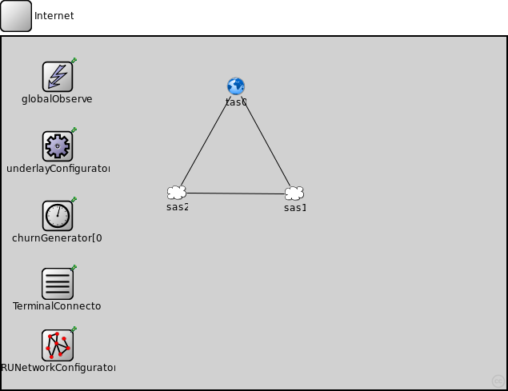
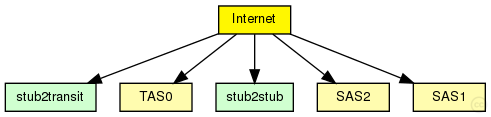
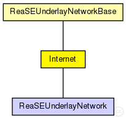

This documentation is released under the Creative Commons license
This documentation is released under the Creative Commons license(no description)
The following diagram shows usage relationships between types. Unresolved types are missing from the diagram. Click here to see the full picture.
The following diagram shows inheritance relationships for this type. Unresolved types are missing from the diagram. Click here to see the full picture.
| ReaSEUnderlayNetworkBase (compound module) |
The InetUnderlay ned-file See also: ReaSEUnderlayConfigurator |
| ReaSEUnderlayNetwork (network) | (no description) |
| Name | Type | Default value | Description |
|---|---|---|---|
| overlayType | string |
the overlay used in the simulation (for overlayBackboneRouters) |
|
| tier1Type | string |
the application on top of the overlay used in the simulation (for overlayBackboneRouters) |
|
| tier2Type | string |
the module type on top of tier 1 (for overlayBackboneRouters) |
|
| tier3Type | string |
the module type on top of tier 2 (for overlayBackboneRouters) |
| Name | Value | Description |
|---|---|---|
| display | bgl=49;bgb=631,441 | |
| Internet |
| Name | Type | Default value | Description |
|---|---|---|---|
| underlayConfigurator.terminalTypes | string |
list of terminal types |
|
| underlayConfigurator.churnGeneratorTypes | string |
a list of churn generators to be used |
|
| underlayConfigurator.transitionTime | double |
time to wait before measuring after init phase is finished |
|
| underlayConfigurator.measurementTime | double |
duration of the simulation after init and transition phase |
|
| underlayConfigurator.gracefulLeaveDelay | double |
time between prekill and removal from overlay |
|
| underlayConfigurator.gracefulLeaveProbability | double |
probability of gracefull leave |
|
| globalObserver.globalNodeList.maliciousNodeProbability | double |
probability for a node to be malicious on creation |
|
| globalObserver.globalNodeList.maliciousNodeChange | bool |
dynamically change number of malicious nodes |
|
| globalObserver.globalNodeList.maliciousNodeChangeStartTime | double |
simTime at which nodes begin to become malicious |
|
| globalObserver.globalNodeList.maliciousNodeChangeRate | double |
number of nodes to change to malicious compared to all nodes |
|
| globalObserver.globalNodeList.maliciousNodeChangeInterval | double |
time between two node changes to malicious |
|
| globalObserver.globalNodeList.maliciousNodeChangeStartValue | double |
minimum amount of malicious nodes in the peerSet |
|
| globalObserver.globalNodeList.maliciousNodeChangeStopValue | double |
maximum amount of malicious nodes in the peerSet |
|
| globalObserver.globalNodeList.maxNumberOfKeys | int |
maximum number of overlay keys the bootstrap oracle handles |
|
| globalObserver.globalNodeList.keyProbability | double |
probability of keys to be owned by nodes |
|
| globalObserver.globalParameters.rpcUdpTimeout | double |
default timeout value for direct RPCs |
|
| globalObserver.globalParameters.rpcKeyTimeout | double |
default timeout value for routed RPCs |
|
| globalObserver.globalParameters.printStateToStdOut | bool |
print overlay ready messages to std::cout |
|
| globalObserver.globalParameters.topologyAdaptation | bool |
turn on topologyAdaptation (for demonstrator) |
|
| globalObserver.globalTraceManager.traceFile | string |
file name of the trace file |
|
| globalObserver.globalStatistics.outputMinMax | bool |
enable output of minimum and maximum for scalars |
|
| globalObserver.globalStatistics.outputStdDev | bool |
enable output of standard deviation for scalars |
|
| globalObserver.globalStatistics.measureNetwInitPhase | bool |
fetch statistics in init phase? |
|
| globalObserver.globalStatistics.globalStatTimerInterval | double |
interval length of periodic statistic timer |
|
| churnGenerator.targetOverlayTerminalNum | int |
number of nodes after init phase |
|
| churnGenerator.initPhaseCreationInterval | double |
node creation interval in init phase |
|
| churnGenerator.noChurnThreshold | double |
if the lifetimeMean of a specific churn generator exceeds this, NoChurn is used instead |
|
| churnGenerator.channelTypes | string |
used (tx) access technologies (from common/channels.ned) |
|
| churnGenerator.channelTypesRx | string |
used (rx) access technologies (from common/channels.ned) |
|
| TerminalConnector.channelTypes | string |
list of (tx) channel types (from common/channels.ned) |
|
| TerminalConnector.channelTypesRx | string |
list of (rx) channel types (from common/channels.ned) |
|
| TerminalConnector.channelDiversity | double | 0 |
percentage a channel delay can differ from the channel type value |
| tas0.core0.networkLayer.ip.procDelay | double | 0s | |
| tas0.core0.networkLayer.arp.retryTimeout | double | 1s |
number seconds ARP waits between retries to resolve an IP address |
| tas0.core0.networkLayer.arp.retryCount | int | 3 |
number of times ARP will attempt to resolve an IP address |
| tas0.core0.networkLayer.arp.cacheTimeout | double | 120s |
number seconds unused entries in the cache will time out |
| tas0.core0.ppp.ppp.mtu | int | 4470 | |
| tas0.core0.eth.mac.promiscuous | bool | false |
if true, all packets are received, otherwise only the ones with matching destination MAC address |
| tas0.core0.eth.mac.address | string | "auto" |
MAC address as hex string (12 hex digits), or "auto". "auto" values will be replaced by a generated MAC address in init stage 0. |
| tas0.core0.eth.mac.txrate | double | 100Mbps |
maximum data rate supported by this station (bit/s); actually chosen speed may be lower due to auto- configuration. 0 means fully auto-configured. |
| tas0.core0.eth.mac.duplexEnabled | bool | true |
whether duplex mode can be enabled or not; whether MAC will actually use duplex mode depends on the result of the auto-configuration process (duplex is only possible with DTE-to-DTE connection). |
| tas0.core0.eth.mac.mtu | int | 1500 | |
| tas0.gw1.networkLayer.ip.procDelay | double | 0s | |
| tas0.gw1.networkLayer.arp.retryTimeout | double | 1s |
number seconds ARP waits between retries to resolve an IP address |
| tas0.gw1.networkLayer.arp.retryCount | int | 3 |
number of times ARP will attempt to resolve an IP address |
| tas0.gw1.networkLayer.arp.cacheTimeout | double | 120s |
number seconds unused entries in the cache will time out |
| tas0.gw1.ppp.ppp.mtu | int | 4470 | |
| tas0.gw1.eth.mac.promiscuous | bool | false |
if true, all packets are received, otherwise only the ones with matching destination MAC address |
| tas0.gw1.eth.mac.address | string | "auto" |
MAC address as hex string (12 hex digits), or "auto". "auto" values will be replaced by a generated MAC address in init stage 0. |
| tas0.gw1.eth.mac.txrate | double | 100Mbps |
maximum data rate supported by this station (bit/s); actually chosen speed may be lower due to auto- configuration. 0 means fully auto-configured. |
| tas0.gw1.eth.mac.duplexEnabled | bool | true |
whether duplex mode can be enabled or not; whether MAC will actually use duplex mode depends on the result of the auto-configuration process (duplex is only possible with DTE-to-DTE connection). |
| tas0.gw1.eth.mac.mtu | int | 1500 | |
| tas0.edge2.networkLayer.ip.procDelay | double | 0s | |
| tas0.edge2.networkLayer.arp.retryTimeout | double | 1s |
number seconds ARP waits between retries to resolve an IP address |
| tas0.edge2.networkLayer.arp.retryCount | int | 3 |
number of times ARP will attempt to resolve an IP address |
| tas0.edge2.networkLayer.arp.cacheTimeout | double | 120s |
number seconds unused entries in the cache will time out |
| tas0.edge2.ppp.ppp.mtu | int | 4470 | |
| tas0.edge2.eth.mac.promiscuous | bool | false |
if true, all packets are received, otherwise only the ones with matching destination MAC address |
| tas0.edge2.eth.mac.address | string | "auto" |
MAC address as hex string (12 hex digits), or "auto". "auto" values will be replaced by a generated MAC address in init stage 0. |
| tas0.edge2.eth.mac.txrate | double | 100Mbps |
maximum data rate supported by this station (bit/s); actually chosen speed may be lower due to auto- configuration. 0 means fully auto-configured. |
| tas0.edge2.eth.mac.duplexEnabled | bool | true |
whether duplex mode can be enabled or not; whether MAC will actually use duplex mode depends on the result of the auto-configuration process (duplex is only possible with DTE-to-DTE connection). |
| tas0.edge2.eth.mac.mtu | int | 1500 | |
| tas0.edge3.networkLayer.ip.procDelay | double | 0s | |
| tas0.edge3.networkLayer.arp.retryTimeout | double | 1s |
number seconds ARP waits between retries to resolve an IP address |
| tas0.edge3.networkLayer.arp.retryCount | int | 3 |
number of times ARP will attempt to resolve an IP address |
| tas0.edge3.networkLayer.arp.cacheTimeout | double | 120s |
number seconds unused entries in the cache will time out |
| tas0.edge3.ppp.ppp.mtu | int | 4470 | |
| tas0.edge3.eth.mac.promiscuous | bool | false |
if true, all packets are received, otherwise only the ones with matching destination MAC address |
| tas0.edge3.eth.mac.address | string | "auto" |
MAC address as hex string (12 hex digits), or "auto". "auto" values will be replaced by a generated MAC address in init stage 0. |
| tas0.edge3.eth.mac.txrate | double | 100Mbps |
maximum data rate supported by this station (bit/s); actually chosen speed may be lower due to auto- configuration. 0 means fully auto-configured. |
| tas0.edge3.eth.mac.duplexEnabled | bool | true |
whether duplex mode can be enabled or not; whether MAC will actually use duplex mode depends on the result of the auto-configuration process (duplex is only possible with DTE-to-DTE connection). |
| tas0.edge3.eth.mac.mtu | int | 1500 | |
| tas0.edge4.networkLayer.ip.procDelay | double | 0s | |
| tas0.edge4.networkLayer.arp.retryTimeout | double | 1s |
number seconds ARP waits between retries to resolve an IP address |
| tas0.edge4.networkLayer.arp.retryCount | int | 3 |
number of times ARP will attempt to resolve an IP address |
| tas0.edge4.networkLayer.arp.cacheTimeout | double | 120s |
number seconds unused entries in the cache will time out |
| tas0.edge4.ppp.ppp.mtu | int | 4470 | |
| tas0.edge4.eth.mac.promiscuous | bool | false |
if true, all packets are received, otherwise only the ones with matching destination MAC address |
| tas0.edge4.eth.mac.address | string | "auto" |
MAC address as hex string (12 hex digits), or "auto". "auto" values will be replaced by a generated MAC address in init stage 0. |
| tas0.edge4.eth.mac.txrate | double | 100Mbps |
maximum data rate supported by this station (bit/s); actually chosen speed may be lower due to auto- configuration. 0 means fully auto-configured. |
| tas0.edge4.eth.mac.duplexEnabled | bool | true |
whether duplex mode can be enabled or not; whether MAC will actually use duplex mode depends on the result of the auto-configuration process (duplex is only possible with DTE-to-DTE connection). |
| tas0.edge4.eth.mac.mtu | int | 1500 | |
| tas0.edge5.networkLayer.ip.procDelay | double | 0s | |
| tas0.edge5.networkLayer.arp.retryTimeout | double | 1s |
number seconds ARP waits between retries to resolve an IP address |
| tas0.edge5.networkLayer.arp.retryCount | int | 3 |
number of times ARP will attempt to resolve an IP address |
| tas0.edge5.networkLayer.arp.cacheTimeout | double | 120s |
number seconds unused entries in the cache will time out |
| tas0.edge5.ppp.ppp.mtu | int | 4470 | |
| tas0.edge5.eth.mac.promiscuous | bool | false |
if true, all packets are received, otherwise only the ones with matching destination MAC address |
| tas0.edge5.eth.mac.address | string | "auto" |
MAC address as hex string (12 hex digits), or "auto". "auto" values will be replaced by a generated MAC address in init stage 0. |
| tas0.edge5.eth.mac.txrate | double | 100Mbps |
maximum data rate supported by this station (bit/s); actually chosen speed may be lower due to auto- configuration. 0 means fully auto-configured. |
| tas0.edge5.eth.mac.duplexEnabled | bool | true |
whether duplex mode can be enabled or not; whether MAC will actually use duplex mode depends on the result of the auto-configuration process (duplex is only possible with DTE-to-DTE connection). |
| tas0.edge5.eth.mac.mtu | int | 1500 | |
| tas0.edge6.networkLayer.ip.procDelay | double | 0s | |
| tas0.edge6.networkLayer.arp.retryTimeout | double | 1s |
number seconds ARP waits between retries to resolve an IP address |
| tas0.edge6.networkLayer.arp.retryCount | int | 3 |
number of times ARP will attempt to resolve an IP address |
| tas0.edge6.networkLayer.arp.cacheTimeout | double | 120s |
number seconds unused entries in the cache will time out |
| tas0.edge6.ppp.ppp.mtu | int | 4470 | |
| tas0.edge6.eth.mac.promiscuous | bool | false |
if true, all packets are received, otherwise only the ones with matching destination MAC address |
| tas0.edge6.eth.mac.address | string | "auto" |
MAC address as hex string (12 hex digits), or "auto". "auto" values will be replaced by a generated MAC address in init stage 0. |
| tas0.edge6.eth.mac.txrate | double | 100Mbps |
maximum data rate supported by this station (bit/s); actually chosen speed may be lower due to auto- configuration. 0 means fully auto-configured. |
| tas0.edge6.eth.mac.duplexEnabled | bool | true |
whether duplex mode can be enabled or not; whether MAC will actually use duplex mode depends on the result of the auto-configuration process (duplex is only possible with DTE-to-DTE connection). |
| tas0.edge6.eth.mac.mtu | int | 1500 | |
| tas0.host7.sctp.numGapReports | int | 3 |
====== SCTP Association Parameters ================================= |
| tas0.host7.sctp.rtoInitial | double | 3s | |
| tas0.host7.sctp.rtoMin | double | 1s | |
| tas0.host7.sctp.rtoMax | double | 60s | |
| tas0.host7.sctp.rtoAlpha | double | 0.125 | |
| tas0.host7.sctp.rtoBeta | double | 0.250 | |
| tas0.host7.sctp.maxBurst | int | 4 | |
| tas0.host7.sctp.assocMaxRetrans | int | 10 | |
| tas0.host7.sctp.pathMaxRetrans | int | 5 | |
| tas0.host7.sctp.maxInitRetrans | int | 8 | |
| tas0.host7.sctp.sackPeriod | double | 200ms | |
| tas0.host7.sctp.sackFrequency | int | 2 | |
| tas0.host7.sctp.reactivatePrimaryPath | bool | false | |
| tas0.host7.sctp.sendQueueLimit | int | 0 | |
| tas0.host7.sctp.validCookieLifetime | double | 10s |
====== Testing ===================================================== |
| tas0.host7.sctp.enableHeartbeats | bool | true |
====== Heartbeats ================================================== |
| tas0.host7.sctp.hbInterval | double | 30s | |
| tas0.host7.sctp.nagleEnabled | bool | true |
====== Nagle Algorithm ============================================= |
| tas0.host7.sctp.naglePoint | int | 1468 | |
| tas0.host7.sctp.fastRecoverySupported | bool | true |
====== Congestion Control ========================================== |
| tas0.host7.sctp.sctpAlgorithmClass | string | "SCTPAlg" | |
| tas0.host7.sctp.ccModule | int | 0 |
RFC4960=0 |
| tas0.host7.sctp.ssModule | int | 0 |
ROUND_ROBIN=0 |
| tas0.host7.sctp.arwnd | int | 65535 | |
| tas0.host7.sctp.swsLimit | int | 3000 |
Limit for SWS |
| tas0.host7.sctp.udpEncapsEnabled | bool | false | |
| tas0.host7.pingApp.destAddr | string | "" |
destination IP or IPv6 address |
| tas0.host7.pingApp.srcAddr | string | "" |
source IP or IPv6 address (useful with multi-homing) |
| tas0.host7.pingApp.packetSize | double | 56B |
of ping payload, in bytes |
| tas0.host7.pingApp.interval | double | 1s |
time to wait between pings (can be random) |
| tas0.host7.pingApp.hopLimit | double | 32 |
TTL or hopLimit for IP packets |
| tas0.host7.pingApp.count | double | 0 |
stop after count ping requests, 0 means continuously |
| tas0.host7.pingApp.startTime | double | uniform(0s,this.interval) |
send first ping at startTime |
| tas0.host7.pingApp.stopTime | double | 0s |
send no pings after stopTime, 0 means forever |
| tas0.host7.pingApp.printPing | bool | true |
dump on stdout |
| tas0.host7.networkLayer.ip.procDelay | double | 0s | |
| tas0.host7.networkLayer.arp.retryTimeout | double | 1s |
number seconds ARP waits between retries to resolve an IP address |
| tas0.host7.networkLayer.arp.retryCount | int | 3 |
number of times ARP will attempt to resolve an IP address |
| tas0.host7.networkLayer.arp.cacheTimeout | double | 120s |
number seconds unused entries in the cache will time out |
| tas0.host7.ppp.ppp.mtu | int | 4470 | |
| tas0.host7.eth.mac.promiscuous | bool | false |
if true, all packets are received, otherwise only the ones with matching destination MAC address |
| tas0.host7.eth.mac.address | string | "auto" |
MAC address as hex string (12 hex digits), or "auto". "auto" values will be replaced by a generated MAC address in init stage 0. |
| tas0.host7.eth.mac.txrate | double | 100Mbps |
maximum data rate supported by this station (bit/s); actually chosen speed may be lower due to auto- configuration. 0 means fully auto-configured. |
| tas0.host7.eth.mac.duplexEnabled | bool | true |
whether duplex mode can be enabled or not; whether MAC will actually use duplex mode depends on the result of the auto-configuration process (duplex is only possible with DTE-to-DTE connection). |
| tas0.host7.eth.mac.mtu | int | 1500 | |
| tas0.host7.ext.filterString | string | ||
| tas0.host7.ext.device | string | ||
| tas0.host7.ext.mtu | int | 1500 | |
| tas0.host7.tcpdump.dumpFile | string | "" | |
| tas0.host7.tcpdump.threadEnable | bool | false | |
| tas0.host7.tcpdump.snaplen | int | 65535 | |
| tas0.host7.tcpdump.verbosity | int | 0 | |
| tas0.host8.sctp.numGapReports | int | 3 |
====== SCTP Association Parameters ================================= |
| tas0.host8.sctp.rtoInitial | double | 3s | |
| tas0.host8.sctp.rtoMin | double | 1s | |
| tas0.host8.sctp.rtoMax | double | 60s | |
| tas0.host8.sctp.rtoAlpha | double | 0.125 | |
| tas0.host8.sctp.rtoBeta | double | 0.250 | |
| tas0.host8.sctp.maxBurst | int | 4 | |
| tas0.host8.sctp.assocMaxRetrans | int | 10 | |
| tas0.host8.sctp.pathMaxRetrans | int | 5 | |
| tas0.host8.sctp.maxInitRetrans | int | 8 | |
| tas0.host8.sctp.sackPeriod | double | 200ms | |
| tas0.host8.sctp.sackFrequency | int | 2 | |
| tas0.host8.sctp.reactivatePrimaryPath | bool | false | |
| tas0.host8.sctp.sendQueueLimit | int | 0 | |
| tas0.host8.sctp.validCookieLifetime | double | 10s |
====== Testing ===================================================== |
| tas0.host8.sctp.enableHeartbeats | bool | true |
====== Heartbeats ================================================== |
| tas0.host8.sctp.hbInterval | double | 30s | |
| tas0.host8.sctp.nagleEnabled | bool | true |
====== Nagle Algorithm ============================================= |
| tas0.host8.sctp.naglePoint | int | 1468 | |
| tas0.host8.sctp.fastRecoverySupported | bool | true |
====== Congestion Control ========================================== |
| tas0.host8.sctp.sctpAlgorithmClass | string | "SCTPAlg" | |
| tas0.host8.sctp.ccModule | int | 0 |
RFC4960=0 |
| tas0.host8.sctp.ssModule | int | 0 |
ROUND_ROBIN=0 |
| tas0.host8.sctp.arwnd | int | 65535 | |
| tas0.host8.sctp.swsLimit | int | 3000 |
Limit for SWS |
| tas0.host8.sctp.udpEncapsEnabled | bool | false | |
| tas0.host8.pingApp.destAddr | string | "" |
destination IP or IPv6 address |
| tas0.host8.pingApp.srcAddr | string | "" |
source IP or IPv6 address (useful with multi-homing) |
| tas0.host8.pingApp.packetSize | double | 56B |
of ping payload, in bytes |
| tas0.host8.pingApp.interval | double | 1s |
time to wait between pings (can be random) |
| tas0.host8.pingApp.hopLimit | double | 32 |
TTL or hopLimit for IP packets |
| tas0.host8.pingApp.count | double | 0 |
stop after count ping requests, 0 means continuously |
| tas0.host8.pingApp.startTime | double | uniform(0s,this.interval) |
send first ping at startTime |
| tas0.host8.pingApp.stopTime | double | 0s |
send no pings after stopTime, 0 means forever |
| tas0.host8.pingApp.printPing | bool | true |
dump on stdout |
| tas0.host8.networkLayer.ip.procDelay | double | 0s | |
| tas0.host8.networkLayer.arp.retryTimeout | double | 1s |
number seconds ARP waits between retries to resolve an IP address |
| tas0.host8.networkLayer.arp.retryCount | int | 3 |
number of times ARP will attempt to resolve an IP address |
| tas0.host8.networkLayer.arp.cacheTimeout | double | 120s |
number seconds unused entries in the cache will time out |
| tas0.host8.ppp.ppp.mtu | int | 4470 | |
| tas0.host8.eth.mac.promiscuous | bool | false |
if true, all packets are received, otherwise only the ones with matching destination MAC address |
| tas0.host8.eth.mac.address | string | "auto" |
MAC address as hex string (12 hex digits), or "auto". "auto" values will be replaced by a generated MAC address in init stage 0. |
| tas0.host8.eth.mac.txrate | double | 100Mbps |
maximum data rate supported by this station (bit/s); actually chosen speed may be lower due to auto- configuration. 0 means fully auto-configured. |
| tas0.host8.eth.mac.duplexEnabled | bool | true |
whether duplex mode can be enabled or not; whether MAC will actually use duplex mode depends on the result of the auto-configuration process (duplex is only possible with DTE-to-DTE connection). |
| tas0.host8.eth.mac.mtu | int | 1500 | |
| tas0.host8.ext.filterString | string | ||
| tas0.host8.ext.device | string | ||
| tas0.host8.ext.mtu | int | 1500 | |
| tas0.host8.tcpdump.dumpFile | string | "" | |
| tas0.host8.tcpdump.threadEnable | bool | false | |
| tas0.host8.tcpdump.snaplen | int | 65535 | |
| tas0.host8.tcpdump.verbosity | int | 0 | |
| tas0.host9.sctp.numGapReports | int | 3 |
====== SCTP Association Parameters ================================= |
| tas0.host9.sctp.rtoInitial | double | 3s | |
| tas0.host9.sctp.rtoMin | double | 1s | |
| tas0.host9.sctp.rtoMax | double | 60s | |
| tas0.host9.sctp.rtoAlpha | double | 0.125 | |
| tas0.host9.sctp.rtoBeta | double | 0.250 | |
| tas0.host9.sctp.maxBurst | int | 4 | |
| tas0.host9.sctp.assocMaxRetrans | int | 10 | |
| tas0.host9.sctp.pathMaxRetrans | int | 5 | |
| tas0.host9.sctp.maxInitRetrans | int | 8 | |
| tas0.host9.sctp.sackPeriod | double | 200ms | |
| tas0.host9.sctp.sackFrequency | int | 2 | |
| tas0.host9.sctp.reactivatePrimaryPath | bool | false | |
| tas0.host9.sctp.sendQueueLimit | int | 0 | |
| tas0.host9.sctp.validCookieLifetime | double | 10s |
====== Testing ===================================================== |
| tas0.host9.sctp.enableHeartbeats | bool | true |
====== Heartbeats ================================================== |
| tas0.host9.sctp.hbInterval | double | 30s | |
| tas0.host9.sctp.nagleEnabled | bool | true |
====== Nagle Algorithm ============================================= |
| tas0.host9.sctp.naglePoint | int | 1468 | |
| tas0.host9.sctp.fastRecoverySupported | bool | true |
====== Congestion Control ========================================== |
| tas0.host9.sctp.sctpAlgorithmClass | string | "SCTPAlg" | |
| tas0.host9.sctp.ccModule | int | 0 |
RFC4960=0 |
| tas0.host9.sctp.ssModule | int | 0 |
ROUND_ROBIN=0 |
| tas0.host9.sctp.arwnd | int | 65535 | |
| tas0.host9.sctp.swsLimit | int | 3000 |
Limit for SWS |
| tas0.host9.sctp.udpEncapsEnabled | bool | false | |
| tas0.host9.pingApp.destAddr | string | "" |
destination IP or IPv6 address |
| tas0.host9.pingApp.srcAddr | string | "" |
source IP or IPv6 address (useful with multi-homing) |
| tas0.host9.pingApp.packetSize | double | 56B |
of ping payload, in bytes |
| tas0.host9.pingApp.interval | double | 1s |
time to wait between pings (can be random) |
| tas0.host9.pingApp.hopLimit | double | 32 |
TTL or hopLimit for IP packets |
| tas0.host9.pingApp.count | double | 0 |
stop after count ping requests, 0 means continuously |
| tas0.host9.pingApp.startTime | double | uniform(0s,this.interval) |
send first ping at startTime |
| tas0.host9.pingApp.stopTime | double | 0s |
send no pings after stopTime, 0 means forever |
| tas0.host9.pingApp.printPing | bool | true |
dump on stdout |
| tas0.host9.networkLayer.ip.procDelay | double | 0s | |
| tas0.host9.networkLayer.arp.retryTimeout | double | 1s |
number seconds ARP waits between retries to resolve an IP address |
| tas0.host9.networkLayer.arp.retryCount | int | 3 |
number of times ARP will attempt to resolve an IP address |
| tas0.host9.networkLayer.arp.cacheTimeout | double | 120s |
number seconds unused entries in the cache will time out |
| tas0.host9.ppp.ppp.mtu | int | 4470 | |
| tas0.host9.eth.mac.promiscuous | bool | false |
if true, all packets are received, otherwise only the ones with matching destination MAC address |
| tas0.host9.eth.mac.address | string | "auto" |
MAC address as hex string (12 hex digits), or "auto". "auto" values will be replaced by a generated MAC address in init stage 0. |
| tas0.host9.eth.mac.txrate | double | 100Mbps |
maximum data rate supported by this station (bit/s); actually chosen speed may be lower due to auto- configuration. 0 means fully auto-configured. |
| tas0.host9.eth.mac.duplexEnabled | bool | true |
whether duplex mode can be enabled or not; whether MAC will actually use duplex mode depends on the result of the auto-configuration process (duplex is only possible with DTE-to-DTE connection). |
| tas0.host9.eth.mac.mtu | int | 1500 | |
| tas0.host9.ext.filterString | string | ||
| tas0.host9.ext.device | string | ||
| tas0.host9.ext.mtu | int | 1500 | |
| tas0.host9.tcpdump.dumpFile | string | "" | |
| tas0.host9.tcpdump.threadEnable | bool | false | |
| tas0.host9.tcpdump.snaplen | int | 65535 | |
| tas0.host9.tcpdump.verbosity | int | 0 | |
| tas0.host10.sctp.numGapReports | int | 3 |
====== SCTP Association Parameters ================================= |
| tas0.host10.sctp.rtoInitial | double | 3s | |
| tas0.host10.sctp.rtoMin | double | 1s | |
| tas0.host10.sctp.rtoMax | double | 60s | |
| tas0.host10.sctp.rtoAlpha | double | 0.125 | |
| tas0.host10.sctp.rtoBeta | double | 0.250 | |
| tas0.host10.sctp.maxBurst | int | 4 | |
| tas0.host10.sctp.assocMaxRetrans | int | 10 | |
| tas0.host10.sctp.pathMaxRetrans | int | 5 | |
| tas0.host10.sctp.maxInitRetrans | int | 8 | |
| tas0.host10.sctp.sackPeriod | double | 200ms | |
| tas0.host10.sctp.sackFrequency | int | 2 | |
| tas0.host10.sctp.reactivatePrimaryPath | bool | false | |
| tas0.host10.sctp.sendQueueLimit | int | 0 | |
| tas0.host10.sctp.validCookieLifetime | double | 10s |
====== Testing ===================================================== |
| tas0.host10.sctp.enableHeartbeats | bool | true |
====== Heartbeats ================================================== |
| tas0.host10.sctp.hbInterval | double | 30s | |
| tas0.host10.sctp.nagleEnabled | bool | true |
====== Nagle Algorithm ============================================= |
| tas0.host10.sctp.naglePoint | int | 1468 | |
| tas0.host10.sctp.fastRecoverySupported | bool | true |
====== Congestion Control ========================================== |
| tas0.host10.sctp.sctpAlgorithmClass | string | "SCTPAlg" | |
| tas0.host10.sctp.ccModule | int | 0 |
RFC4960=0 |
| tas0.host10.sctp.ssModule | int | 0 |
ROUND_ROBIN=0 |
| tas0.host10.sctp.arwnd | int | 65535 | |
| tas0.host10.sctp.swsLimit | int | 3000 |
Limit for SWS |
| tas0.host10.sctp.udpEncapsEnabled | bool | false | |
| tas0.host10.pingApp.destAddr | string | "" |
destination IP or IPv6 address |
| tas0.host10.pingApp.srcAddr | string | "" |
source IP or IPv6 address (useful with multi-homing) |
| tas0.host10.pingApp.packetSize | double | 56B |
of ping payload, in bytes |
| tas0.host10.pingApp.interval | double | 1s |
time to wait between pings (can be random) |
| tas0.host10.pingApp.hopLimit | double | 32 |
TTL or hopLimit for IP packets |
| tas0.host10.pingApp.count | double | 0 |
stop after count ping requests, 0 means continuously |
| tas0.host10.pingApp.startTime | double | uniform(0s,this.interval) |
send first ping at startTime |
| tas0.host10.pingApp.stopTime | double | 0s |
send no pings after stopTime, 0 means forever |
| tas0.host10.pingApp.printPing | bool | true |
dump on stdout |
| tas0.host10.networkLayer.ip.procDelay | double | 0s | |
| tas0.host10.networkLayer.arp.retryTimeout | double | 1s |
number seconds ARP waits between retries to resolve an IP address |
| tas0.host10.networkLayer.arp.retryCount | int | 3 |
number of times ARP will attempt to resolve an IP address |
| tas0.host10.networkLayer.arp.cacheTimeout | double | 120s |
number seconds unused entries in the cache will time out |
| tas0.host10.ppp.ppp.mtu | int | 4470 | |
| tas0.host10.eth.mac.promiscuous | bool | false |
if true, all packets are received, otherwise only the ones with matching destination MAC address |
| tas0.host10.eth.mac.address | string | "auto" |
MAC address as hex string (12 hex digits), or "auto". "auto" values will be replaced by a generated MAC address in init stage 0. |
| tas0.host10.eth.mac.txrate | double | 100Mbps |
maximum data rate supported by this station (bit/s); actually chosen speed may be lower due to auto- configuration. 0 means fully auto-configured. |
| tas0.host10.eth.mac.duplexEnabled | bool | true |
whether duplex mode can be enabled or not; whether MAC will actually use duplex mode depends on the result of the auto-configuration process (duplex is only possible with DTE-to-DTE connection). |
| tas0.host10.eth.mac.mtu | int | 1500 | |
| tas0.host10.ext.filterString | string | ||
| tas0.host10.ext.device | string | ||
| tas0.host10.ext.mtu | int | 1500 | |
| tas0.host10.tcpdump.dumpFile | string | "" | |
| tas0.host10.tcpdump.threadEnable | bool | false | |
| tas0.host10.tcpdump.snaplen | int | 65535 | |
| tas0.host10.tcpdump.verbosity | int | 0 | |
| tas0.host11.sctp.numGapReports | int | 3 |
====== SCTP Association Parameters ================================= |
| tas0.host11.sctp.rtoInitial | double | 3s | |
| tas0.host11.sctp.rtoMin | double | 1s | |
| tas0.host11.sctp.rtoMax | double | 60s | |
| tas0.host11.sctp.rtoAlpha | double | 0.125 | |
| tas0.host11.sctp.rtoBeta | double | 0.250 | |
| tas0.host11.sctp.maxBurst | int | 4 | |
| tas0.host11.sctp.assocMaxRetrans | int | 10 | |
| tas0.host11.sctp.pathMaxRetrans | int | 5 | |
| tas0.host11.sctp.maxInitRetrans | int | 8 | |
| tas0.host11.sctp.sackPeriod | double | 200ms | |
| tas0.host11.sctp.sackFrequency | int | 2 | |
| tas0.host11.sctp.reactivatePrimaryPath | bool | false | |
| tas0.host11.sctp.sendQueueLimit | int | 0 | |
| tas0.host11.sctp.validCookieLifetime | double | 10s |
====== Testing ===================================================== |
| tas0.host11.sctp.enableHeartbeats | bool | true |
====== Heartbeats ================================================== |
| tas0.host11.sctp.hbInterval | double | 30s | |
| tas0.host11.sctp.nagleEnabled | bool | true |
====== Nagle Algorithm ============================================= |
| tas0.host11.sctp.naglePoint | int | 1468 | |
| tas0.host11.sctp.fastRecoverySupported | bool | true |
====== Congestion Control ========================================== |
| tas0.host11.sctp.sctpAlgorithmClass | string | "SCTPAlg" | |
| tas0.host11.sctp.ccModule | int | 0 |
RFC4960=0 |
| tas0.host11.sctp.ssModule | int | 0 |
ROUND_ROBIN=0 |
| tas0.host11.sctp.arwnd | int | 65535 | |
| tas0.host11.sctp.swsLimit | int | 3000 |
Limit for SWS |
| tas0.host11.sctp.udpEncapsEnabled | bool | false | |
| tas0.host11.pingApp.destAddr | string | "" |
destination IP or IPv6 address |
| tas0.host11.pingApp.srcAddr | string | "" |
source IP or IPv6 address (useful with multi-homing) |
| tas0.host11.pingApp.packetSize | double | 56B |
of ping payload, in bytes |
| tas0.host11.pingApp.interval | double | 1s |
time to wait between pings (can be random) |
| tas0.host11.pingApp.hopLimit | double | 32 |
TTL or hopLimit for IP packets |
| tas0.host11.pingApp.count | double | 0 |
stop after count ping requests, 0 means continuously |
| tas0.host11.pingApp.startTime | double | uniform(0s,this.interval) |
send first ping at startTime |
| tas0.host11.pingApp.stopTime | double | 0s |
send no pings after stopTime, 0 means forever |
| tas0.host11.pingApp.printPing | bool | true |
dump on stdout |
| tas0.host11.networkLayer.ip.procDelay | double | 0s | |
| tas0.host11.networkLayer.arp.retryTimeout | double | 1s |
number seconds ARP waits between retries to resolve an IP address |
| tas0.host11.networkLayer.arp.retryCount | int | 3 |
number of times ARP will attempt to resolve an IP address |
| tas0.host11.networkLayer.arp.cacheTimeout | double | 120s |
number seconds unused entries in the cache will time out |
| tas0.host11.ppp.ppp.mtu | int | 4470 | |
| tas0.host11.eth.mac.promiscuous | bool | false |
if true, all packets are received, otherwise only the ones with matching destination MAC address |
| tas0.host11.eth.mac.address | string | "auto" |
MAC address as hex string (12 hex digits), or "auto". "auto" values will be replaced by a generated MAC address in init stage 0. |
| tas0.host11.eth.mac.txrate | double | 100Mbps |
maximum data rate supported by this station (bit/s); actually chosen speed may be lower due to auto- configuration. 0 means fully auto-configured. |
| tas0.host11.eth.mac.duplexEnabled | bool | true |
whether duplex mode can be enabled or not; whether MAC will actually use duplex mode depends on the result of the auto-configuration process (duplex is only possible with DTE-to-DTE connection). |
| tas0.host11.eth.mac.mtu | int | 1500 | |
| tas0.host11.ext.filterString | string | ||
| tas0.host11.ext.device | string | ||
| tas0.host11.ext.mtu | int | 1500 | |
| tas0.host11.tcpdump.dumpFile | string | "" | |
| tas0.host11.tcpdump.threadEnable | bool | false | |
| tas0.host11.tcpdump.snaplen | int | 65535 | |
| tas0.host11.tcpdump.verbosity | int | 0 | |
| tas0.host12.sctp.numGapReports | int | 3 |
====== SCTP Association Parameters ================================= |
| tas0.host12.sctp.rtoInitial | double | 3s | |
| tas0.host12.sctp.rtoMin | double | 1s | |
| tas0.host12.sctp.rtoMax | double | 60s | |
| tas0.host12.sctp.rtoAlpha | double | 0.125 | |
| tas0.host12.sctp.rtoBeta | double | 0.250 | |
| tas0.host12.sctp.maxBurst | int | 4 | |
| tas0.host12.sctp.assocMaxRetrans | int | 10 | |
| tas0.host12.sctp.pathMaxRetrans | int | 5 | |
| tas0.host12.sctp.maxInitRetrans | int | 8 | |
| tas0.host12.sctp.sackPeriod | double | 200ms | |
| tas0.host12.sctp.sackFrequency | int | 2 | |
| tas0.host12.sctp.reactivatePrimaryPath | bool | false | |
| tas0.host12.sctp.sendQueueLimit | int | 0 | |
| tas0.host12.sctp.validCookieLifetime | double | 10s |
====== Testing ===================================================== |
| tas0.host12.sctp.enableHeartbeats | bool | true |
====== Heartbeats ================================================== |
| tas0.host12.sctp.hbInterval | double | 30s | |
| tas0.host12.sctp.nagleEnabled | bool | true |
====== Nagle Algorithm ============================================= |
| tas0.host12.sctp.naglePoint | int | 1468 | |
| tas0.host12.sctp.fastRecoverySupported | bool | true |
====== Congestion Control ========================================== |
| tas0.host12.sctp.sctpAlgorithmClass | string | "SCTPAlg" | |
| tas0.host12.sctp.ccModule | int | 0 |
RFC4960=0 |
| tas0.host12.sctp.ssModule | int | 0 |
ROUND_ROBIN=0 |
| tas0.host12.sctp.arwnd | int | 65535 | |
| tas0.host12.sctp.swsLimit | int | 3000 |
Limit for SWS |
| tas0.host12.sctp.udpEncapsEnabled | bool | false | |
| tas0.host12.pingApp.destAddr | string | "" |
destination IP or IPv6 address |
| tas0.host12.pingApp.srcAddr | string | "" |
source IP or IPv6 address (useful with multi-homing) |
| tas0.host12.pingApp.packetSize | double | 56B |
of ping payload, in bytes |
| tas0.host12.pingApp.interval | double | 1s |
time to wait between pings (can be random) |
| tas0.host12.pingApp.hopLimit | double | 32 |
TTL or hopLimit for IP packets |
| tas0.host12.pingApp.count | double | 0 |
stop after count ping requests, 0 means continuously |
| tas0.host12.pingApp.startTime | double | uniform(0s,this.interval) |
send first ping at startTime |
| tas0.host12.pingApp.stopTime | double | 0s |
send no pings after stopTime, 0 means forever |
| tas0.host12.pingApp.printPing | bool | true |
dump on stdout |
| tas0.host12.networkLayer.ip.procDelay | double | 0s | |
| tas0.host12.networkLayer.arp.retryTimeout | double | 1s |
number seconds ARP waits between retries to resolve an IP address |
| tas0.host12.networkLayer.arp.retryCount | int | 3 |
number of times ARP will attempt to resolve an IP address |
| tas0.host12.networkLayer.arp.cacheTimeout | double | 120s |
number seconds unused entries in the cache will time out |
| tas0.host12.ppp.ppp.mtu | int | 4470 | |
| tas0.host12.eth.mac.promiscuous | bool | false |
if true, all packets are received, otherwise only the ones with matching destination MAC address |
| tas0.host12.eth.mac.address | string | "auto" |
MAC address as hex string (12 hex digits), or "auto". "auto" values will be replaced by a generated MAC address in init stage 0. |
| tas0.host12.eth.mac.txrate | double | 100Mbps |
maximum data rate supported by this station (bit/s); actually chosen speed may be lower due to auto- configuration. 0 means fully auto-configured. |
| tas0.host12.eth.mac.duplexEnabled | bool | true |
whether duplex mode can be enabled or not; whether MAC will actually use duplex mode depends on the result of the auto-configuration process (duplex is only possible with DTE-to-DTE connection). |
| tas0.host12.eth.mac.mtu | int | 1500 | |
| tas0.host12.ext.filterString | string | ||
| tas0.host12.ext.device | string | ||
| tas0.host12.ext.mtu | int | 1500 | |
| tas0.host12.tcpdump.dumpFile | string | "" | |
| tas0.host12.tcpdump.threadEnable | bool | false | |
| tas0.host12.tcpdump.snaplen | int | 65535 | |
| tas0.host12.tcpdump.verbosity | int | 0 | |
| tas0.host13.sctp.numGapReports | int | 3 |
====== SCTP Association Parameters ================================= |
| tas0.host13.sctp.rtoInitial | double | 3s | |
| tas0.host13.sctp.rtoMin | double | 1s | |
| tas0.host13.sctp.rtoMax | double | 60s | |
| tas0.host13.sctp.rtoAlpha | double | 0.125 | |
| tas0.host13.sctp.rtoBeta | double | 0.250 | |
| tas0.host13.sctp.maxBurst | int | 4 | |
| tas0.host13.sctp.assocMaxRetrans | int | 10 | |
| tas0.host13.sctp.pathMaxRetrans | int | 5 | |
| tas0.host13.sctp.maxInitRetrans | int | 8 | |
| tas0.host13.sctp.sackPeriod | double | 200ms | |
| tas0.host13.sctp.sackFrequency | int | 2 | |
| tas0.host13.sctp.reactivatePrimaryPath | bool | false | |
| tas0.host13.sctp.sendQueueLimit | int | 0 | |
| tas0.host13.sctp.validCookieLifetime | double | 10s |
====== Testing ===================================================== |
| tas0.host13.sctp.enableHeartbeats | bool | true |
====== Heartbeats ================================================== |
| tas0.host13.sctp.hbInterval | double | 30s | |
| tas0.host13.sctp.nagleEnabled | bool | true |
====== Nagle Algorithm ============================================= |
| tas0.host13.sctp.naglePoint | int | 1468 | |
| tas0.host13.sctp.fastRecoverySupported | bool | true |
====== Congestion Control ========================================== |
| tas0.host13.sctp.sctpAlgorithmClass | string | "SCTPAlg" | |
| tas0.host13.sctp.ccModule | int | 0 |
RFC4960=0 |
| tas0.host13.sctp.ssModule | int | 0 |
ROUND_ROBIN=0 |
| tas0.host13.sctp.arwnd | int | 65535 | |
| tas0.host13.sctp.swsLimit | int | 3000 |
Limit for SWS |
| tas0.host13.sctp.udpEncapsEnabled | bool | false | |
| tas0.host13.pingApp.destAddr | string | "" |
destination IP or IPv6 address |
| tas0.host13.pingApp.srcAddr | string | "" |
source IP or IPv6 address (useful with multi-homing) |
| tas0.host13.pingApp.packetSize | double | 56B |
of ping payload, in bytes |
| tas0.host13.pingApp.interval | double | 1s |
time to wait between pings (can be random) |
| tas0.host13.pingApp.hopLimit | double | 32 |
TTL or hopLimit for IP packets |
| tas0.host13.pingApp.count | double | 0 |
stop after count ping requests, 0 means continuously |
| tas0.host13.pingApp.startTime | double | uniform(0s,this.interval) |
send first ping at startTime |
| tas0.host13.pingApp.stopTime | double | 0s |
send no pings after stopTime, 0 means forever |
| tas0.host13.pingApp.printPing | bool | true |
dump on stdout |
| tas0.host13.networkLayer.ip.procDelay | double | 0s | |
| tas0.host13.networkLayer.arp.retryTimeout | double | 1s |
number seconds ARP waits between retries to resolve an IP address |
| tas0.host13.networkLayer.arp.retryCount | int | 3 |
number of times ARP will attempt to resolve an IP address |
| tas0.host13.networkLayer.arp.cacheTimeout | double | 120s |
number seconds unused entries in the cache will time out |
| tas0.host13.ppp.ppp.mtu | int | 4470 | |
| tas0.host13.eth.mac.promiscuous | bool | false |
if true, all packets are received, otherwise only the ones with matching destination MAC address |
| tas0.host13.eth.mac.address | string | "auto" |
MAC address as hex string (12 hex digits), or "auto". "auto" values will be replaced by a generated MAC address in init stage 0. |
| tas0.host13.eth.mac.txrate | double | 100Mbps |
maximum data rate supported by this station (bit/s); actually chosen speed may be lower due to auto- configuration. 0 means fully auto-configured. |
| tas0.host13.eth.mac.duplexEnabled | bool | true |
whether duplex mode can be enabled or not; whether MAC will actually use duplex mode depends on the result of the auto-configuration process (duplex is only possible with DTE-to-DTE connection). |
| tas0.host13.eth.mac.mtu | int | 1500 | |
| tas0.host13.ext.filterString | string | ||
| tas0.host13.ext.device | string | ||
| tas0.host13.ext.mtu | int | 1500 | |
| tas0.host13.tcpdump.dumpFile | string | "" | |
| tas0.host13.tcpdump.threadEnable | bool | false | |
| tas0.host13.tcpdump.snaplen | int | 65535 | |
| tas0.host13.tcpdump.verbosity | int | 0 | |
| tas0.host14.sctp.numGapReports | int | 3 |
====== SCTP Association Parameters ================================= |
| tas0.host14.sctp.rtoInitial | double | 3s | |
| tas0.host14.sctp.rtoMin | double | 1s | |
| tas0.host14.sctp.rtoMax | double | 60s | |
| tas0.host14.sctp.rtoAlpha | double | 0.125 | |
| tas0.host14.sctp.rtoBeta | double | 0.250 | |
| tas0.host14.sctp.maxBurst | int | 4 | |
| tas0.host14.sctp.assocMaxRetrans | int | 10 | |
| tas0.host14.sctp.pathMaxRetrans | int | 5 | |
| tas0.host14.sctp.maxInitRetrans | int | 8 | |
| tas0.host14.sctp.sackPeriod | double | 200ms | |
| tas0.host14.sctp.sackFrequency | int | 2 | |
| tas0.host14.sctp.reactivatePrimaryPath | bool | false | |
| tas0.host14.sctp.sendQueueLimit | int | 0 | |
| tas0.host14.sctp.validCookieLifetime | double | 10s |
====== Testing ===================================================== |
| tas0.host14.sctp.enableHeartbeats | bool | true |
====== Heartbeats ================================================== |
| tas0.host14.sctp.hbInterval | double | 30s | |
| tas0.host14.sctp.nagleEnabled | bool | true |
====== Nagle Algorithm ============================================= |
| tas0.host14.sctp.naglePoint | int | 1468 | |
| tas0.host14.sctp.fastRecoverySupported | bool | true |
====== Congestion Control ========================================== |
| tas0.host14.sctp.sctpAlgorithmClass | string | "SCTPAlg" | |
| tas0.host14.sctp.ccModule | int | 0 |
RFC4960=0 |
| tas0.host14.sctp.ssModule | int | 0 |
ROUND_ROBIN=0 |
| tas0.host14.sctp.arwnd | int | 65535 | |
| tas0.host14.sctp.swsLimit | int | 3000 |
Limit for SWS |
| tas0.host14.sctp.udpEncapsEnabled | bool | false | |
| tas0.host14.pingApp.destAddr | string | "" |
destination IP or IPv6 address |
| tas0.host14.pingApp.srcAddr | string | "" |
source IP or IPv6 address (useful with multi-homing) |
| tas0.host14.pingApp.packetSize | double | 56B |
of ping payload, in bytes |
| tas0.host14.pingApp.interval | double | 1s |
time to wait between pings (can be random) |
| tas0.host14.pingApp.hopLimit | double | 32 |
TTL or hopLimit for IP packets |
| tas0.host14.pingApp.count | double | 0 |
stop after count ping requests, 0 means continuously |
| tas0.host14.pingApp.startTime | double | uniform(0s,this.interval) |
send first ping at startTime |
| tas0.host14.pingApp.stopTime | double | 0s |
send no pings after stopTime, 0 means forever |
| tas0.host14.pingApp.printPing | bool | true |
dump on stdout |
| tas0.host14.networkLayer.ip.procDelay | double | 0s | |
| tas0.host14.networkLayer.arp.retryTimeout | double | 1s |
number seconds ARP waits between retries to resolve an IP address |
| tas0.host14.networkLayer.arp.retryCount | int | 3 |
number of times ARP will attempt to resolve an IP address |
| tas0.host14.networkLayer.arp.cacheTimeout | double | 120s |
number seconds unused entries in the cache will time out |
| tas0.host14.ppp.ppp.mtu | int | 4470 | |
| tas0.host14.eth.mac.promiscuous | bool | false |
if true, all packets are received, otherwise only the ones with matching destination MAC address |
| tas0.host14.eth.mac.address | string | "auto" |
MAC address as hex string (12 hex digits), or "auto". "auto" values will be replaced by a generated MAC address in init stage 0. |
| tas0.host14.eth.mac.txrate | double | 100Mbps |
maximum data rate supported by this station (bit/s); actually chosen speed may be lower due to auto- configuration. 0 means fully auto-configured. |
| tas0.host14.eth.mac.duplexEnabled | bool | true |
whether duplex mode can be enabled or not; whether MAC will actually use duplex mode depends on the result of the auto-configuration process (duplex is only possible with DTE-to-DTE connection). |
| tas0.host14.eth.mac.mtu | int | 1500 | |
| tas0.host14.ext.filterString | string | ||
| tas0.host14.ext.device | string | ||
| tas0.host14.ext.mtu | int | 1500 | |
| tas0.host14.tcpdump.dumpFile | string | "" | |
| tas0.host14.tcpdump.threadEnable | bool | false | |
| tas0.host14.tcpdump.snaplen | int | 65535 | |
| tas0.host14.tcpdump.verbosity | int | 0 | |
| tas0.host15.sctp.numGapReports | int | 3 |
====== SCTP Association Parameters ================================= |
| tas0.host15.sctp.rtoInitial | double | 3s | |
| tas0.host15.sctp.rtoMin | double | 1s | |
| tas0.host15.sctp.rtoMax | double | 60s | |
| tas0.host15.sctp.rtoAlpha | double | 0.125 | |
| tas0.host15.sctp.rtoBeta | double | 0.250 | |
| tas0.host15.sctp.maxBurst | int | 4 | |
| tas0.host15.sctp.assocMaxRetrans | int | 10 | |
| tas0.host15.sctp.pathMaxRetrans | int | 5 | |
| tas0.host15.sctp.maxInitRetrans | int | 8 | |
| tas0.host15.sctp.sackPeriod | double | 200ms | |
| tas0.host15.sctp.sackFrequency | int | 2 | |
| tas0.host15.sctp.reactivatePrimaryPath | bool | false | |
| tas0.host15.sctp.sendQueueLimit | int | 0 | |
| tas0.host15.sctp.validCookieLifetime | double | 10s |
====== Testing ===================================================== |
| tas0.host15.sctp.enableHeartbeats | bool | true |
====== Heartbeats ================================================== |
| tas0.host15.sctp.hbInterval | double | 30s | |
| tas0.host15.sctp.nagleEnabled | bool | true |
====== Nagle Algorithm ============================================= |
| tas0.host15.sctp.naglePoint | int | 1468 | |
| tas0.host15.sctp.fastRecoverySupported | bool | true |
====== Congestion Control ========================================== |
| tas0.host15.sctp.sctpAlgorithmClass | string | "SCTPAlg" | |
| tas0.host15.sctp.ccModule | int | 0 |
RFC4960=0 |
| tas0.host15.sctp.ssModule | int | 0 |
ROUND_ROBIN=0 |
| tas0.host15.sctp.arwnd | int | 65535 | |
| tas0.host15.sctp.swsLimit | int | 3000 |
Limit for SWS |
| tas0.host15.sctp.udpEncapsEnabled | bool | false | |
| tas0.host15.pingApp.destAddr | string | "" |
destination IP or IPv6 address |
| tas0.host15.pingApp.srcAddr | string | "" |
source IP or IPv6 address (useful with multi-homing) |
| tas0.host15.pingApp.packetSize | double | 56B |
of ping payload, in bytes |
| tas0.host15.pingApp.interval | double | 1s |
time to wait between pings (can be random) |
| tas0.host15.pingApp.hopLimit | double | 32 |
TTL or hopLimit for IP packets |
| tas0.host15.pingApp.count | double | 0 |
stop after count ping requests, 0 means continuously |
| tas0.host15.pingApp.startTime | double | uniform(0s,this.interval) |
send first ping at startTime |
| tas0.host15.pingApp.stopTime | double | 0s |
send no pings after stopTime, 0 means forever |
| tas0.host15.pingApp.printPing | bool | true |
dump on stdout |
| tas0.host15.networkLayer.ip.procDelay | double | 0s | |
| tas0.host15.networkLayer.arp.retryTimeout | double | 1s |
number seconds ARP waits between retries to resolve an IP address |
| tas0.host15.networkLayer.arp.retryCount | int | 3 |
number of times ARP will attempt to resolve an IP address |
| tas0.host15.networkLayer.arp.cacheTimeout | double | 120s |
number seconds unused entries in the cache will time out |
| tas0.host15.ppp.ppp.mtu | int | 4470 | |
| tas0.host15.eth.mac.promiscuous | bool | false |
if true, all packets are received, otherwise only the ones with matching destination MAC address |
| tas0.host15.eth.mac.address | string | "auto" |
MAC address as hex string (12 hex digits), or "auto". "auto" values will be replaced by a generated MAC address in init stage 0. |
| tas0.host15.eth.mac.txrate | double | 100Mbps |
maximum data rate supported by this station (bit/s); actually chosen speed may be lower due to auto- configuration. 0 means fully auto-configured. |
| tas0.host15.eth.mac.duplexEnabled | bool | true |
whether duplex mode can be enabled or not; whether MAC will actually use duplex mode depends on the result of the auto-configuration process (duplex is only possible with DTE-to-DTE connection). |
| tas0.host15.eth.mac.mtu | int | 1500 | |
| tas0.host15.ext.filterString | string | ||
| tas0.host15.ext.device | string | ||
| tas0.host15.ext.mtu | int | 1500 | |
| tas0.host15.tcpdump.dumpFile | string | "" | |
| tas0.host15.tcpdump.threadEnable | bool | false | |
| tas0.host15.tcpdump.snaplen | int | 65535 | |
| tas0.host15.tcpdump.verbosity | int | 0 | |
| tas0.host16.sctp.numGapReports | int | 3 |
====== SCTP Association Parameters ================================= |
| tas0.host16.sctp.rtoInitial | double | 3s | |
| tas0.host16.sctp.rtoMin | double | 1s | |
| tas0.host16.sctp.rtoMax | double | 60s | |
| tas0.host16.sctp.rtoAlpha | double | 0.125 | |
| tas0.host16.sctp.rtoBeta | double | 0.250 | |
| tas0.host16.sctp.maxBurst | int | 4 | |
| tas0.host16.sctp.assocMaxRetrans | int | 10 | |
| tas0.host16.sctp.pathMaxRetrans | int | 5 | |
| tas0.host16.sctp.maxInitRetrans | int | 8 | |
| tas0.host16.sctp.sackPeriod | double | 200ms | |
| tas0.host16.sctp.sackFrequency | int | 2 | |
| tas0.host16.sctp.reactivatePrimaryPath | bool | false | |
| tas0.host16.sctp.sendQueueLimit | int | 0 | |
| tas0.host16.sctp.validCookieLifetime | double | 10s |
====== Testing ===================================================== |
| tas0.host16.sctp.enableHeartbeats | bool | true |
====== Heartbeats ================================================== |
| tas0.host16.sctp.hbInterval | double | 30s | |
| tas0.host16.sctp.nagleEnabled | bool | true |
====== Nagle Algorithm ============================================= |
| tas0.host16.sctp.naglePoint | int | 1468 | |
| tas0.host16.sctp.fastRecoverySupported | bool | true |
====== Congestion Control ========================================== |
| tas0.host16.sctp.sctpAlgorithmClass | string | "SCTPAlg" | |
| tas0.host16.sctp.ccModule | int | 0 |
RFC4960=0 |
| tas0.host16.sctp.ssModule | int | 0 |
ROUND_ROBIN=0 |
| tas0.host16.sctp.arwnd | int | 65535 | |
| tas0.host16.sctp.swsLimit | int | 3000 |
Limit for SWS |
| tas0.host16.sctp.udpEncapsEnabled | bool | false | |
| tas0.host16.pingApp.destAddr | string | "" |
destination IP or IPv6 address |
| tas0.host16.pingApp.srcAddr | string | "" |
source IP or IPv6 address (useful with multi-homing) |
| tas0.host16.pingApp.packetSize | double | 56B |
of ping payload, in bytes |
| tas0.host16.pingApp.interval | double | 1s |
time to wait between pings (can be random) |
| tas0.host16.pingApp.hopLimit | double | 32 |
TTL or hopLimit for IP packets |
| tas0.host16.pingApp.count | double | 0 |
stop after count ping requests, 0 means continuously |
| tas0.host16.pingApp.startTime | double | uniform(0s,this.interval) |
send first ping at startTime |
| tas0.host16.pingApp.stopTime | double | 0s |
send no pings after stopTime, 0 means forever |
| tas0.host16.pingApp.printPing | bool | true |
dump on stdout |
| tas0.host16.networkLayer.ip.procDelay | double | 0s | |
| tas0.host16.networkLayer.arp.retryTimeout | double | 1s |
number seconds ARP waits between retries to resolve an IP address |
| tas0.host16.networkLayer.arp.retryCount | int | 3 |
number of times ARP will attempt to resolve an IP address |
| tas0.host16.networkLayer.arp.cacheTimeout | double | 120s |
number seconds unused entries in the cache will time out |
| tas0.host16.ppp.ppp.mtu | int | 4470 | |
| tas0.host16.eth.mac.promiscuous | bool | false |
if true, all packets are received, otherwise only the ones with matching destination MAC address |
| tas0.host16.eth.mac.address | string | "auto" |
MAC address as hex string (12 hex digits), or "auto". "auto" values will be replaced by a generated MAC address in init stage 0. |
| tas0.host16.eth.mac.txrate | double | 100Mbps |
maximum data rate supported by this station (bit/s); actually chosen speed may be lower due to auto- configuration. 0 means fully auto-configured. |
| tas0.host16.eth.mac.duplexEnabled | bool | true |
whether duplex mode can be enabled or not; whether MAC will actually use duplex mode depends on the result of the auto-configuration process (duplex is only possible with DTE-to-DTE connection). |
| tas0.host16.eth.mac.mtu | int | 1500 | |
| tas0.host16.ext.filterString | string | ||
| tas0.host16.ext.device | string | ||
| tas0.host16.ext.mtu | int | 1500 | |
| tas0.host16.tcpdump.dumpFile | string | "" | |
| tas0.host16.tcpdump.threadEnable | bool | false | |
| tas0.host16.tcpdump.snaplen | int | 65535 | |
| tas0.host16.tcpdump.verbosity | int | 0 | |
| tas0.host17.sctp.numGapReports | int | 3 |
====== SCTP Association Parameters ================================= |
| tas0.host17.sctp.rtoInitial | double | 3s | |
| tas0.host17.sctp.rtoMin | double | 1s | |
| tas0.host17.sctp.rtoMax | double | 60s | |
| tas0.host17.sctp.rtoAlpha | double | 0.125 | |
| tas0.host17.sctp.rtoBeta | double | 0.250 | |
| tas0.host17.sctp.maxBurst | int | 4 | |
| tas0.host17.sctp.assocMaxRetrans | int | 10 | |
| tas0.host17.sctp.pathMaxRetrans | int | 5 | |
| tas0.host17.sctp.maxInitRetrans | int | 8 | |
| tas0.host17.sctp.sackPeriod | double | 200ms | |
| tas0.host17.sctp.sackFrequency | int | 2 | |
| tas0.host17.sctp.reactivatePrimaryPath | bool | false | |
| tas0.host17.sctp.sendQueueLimit | int | 0 | |
| tas0.host17.sctp.validCookieLifetime | double | 10s |
====== Testing ===================================================== |
| tas0.host17.sctp.enableHeartbeats | bool | true |
====== Heartbeats ================================================== |
| tas0.host17.sctp.hbInterval | double | 30s | |
| tas0.host17.sctp.nagleEnabled | bool | true |
====== Nagle Algorithm ============================================= |
| tas0.host17.sctp.naglePoint | int | 1468 | |
| tas0.host17.sctp.fastRecoverySupported | bool | true |
====== Congestion Control ========================================== |
| tas0.host17.sctp.sctpAlgorithmClass | string | "SCTPAlg" | |
| tas0.host17.sctp.ccModule | int | 0 |
RFC4960=0 |
| tas0.host17.sctp.ssModule | int | 0 |
ROUND_ROBIN=0 |
| tas0.host17.sctp.arwnd | int | 65535 | |
| tas0.host17.sctp.swsLimit | int | 3000 |
Limit for SWS |
| tas0.host17.sctp.udpEncapsEnabled | bool | false | |
| tas0.host17.pingApp.destAddr | string | "" |
destination IP or IPv6 address |
| tas0.host17.pingApp.srcAddr | string | "" |
source IP or IPv6 address (useful with multi-homing) |
| tas0.host17.pingApp.packetSize | double | 56B |
of ping payload, in bytes |
| tas0.host17.pingApp.interval | double | 1s |
time to wait between pings (can be random) |
| tas0.host17.pingApp.hopLimit | double | 32 |
TTL or hopLimit for IP packets |
| tas0.host17.pingApp.count | double | 0 |
stop after count ping requests, 0 means continuously |
| tas0.host17.pingApp.startTime | double | uniform(0s,this.interval) |
send first ping at startTime |
| tas0.host17.pingApp.stopTime | double | 0s |
send no pings after stopTime, 0 means forever |
| tas0.host17.pingApp.printPing | bool | true |
dump on stdout |
| tas0.host17.networkLayer.ip.procDelay | double | 0s | |
| tas0.host17.networkLayer.arp.retryTimeout | double | 1s |
number seconds ARP waits between retries to resolve an IP address |
| tas0.host17.networkLayer.arp.retryCount | int | 3 |
number of times ARP will attempt to resolve an IP address |
| tas0.host17.networkLayer.arp.cacheTimeout | double | 120s |
number seconds unused entries in the cache will time out |
| tas0.host17.ppp.ppp.mtu | int | 4470 | |
| tas0.host17.eth.mac.promiscuous | bool | false |
if true, all packets are received, otherwise only the ones with matching destination MAC address |
| tas0.host17.eth.mac.address | string | "auto" |
MAC address as hex string (12 hex digits), or "auto". "auto" values will be replaced by a generated MAC address in init stage 0. |
| tas0.host17.eth.mac.txrate | double | 100Mbps |
maximum data rate supported by this station (bit/s); actually chosen speed may be lower due to auto- configuration. 0 means fully auto-configured. |
| tas0.host17.eth.mac.duplexEnabled | bool | true |
whether duplex mode can be enabled or not; whether MAC will actually use duplex mode depends on the result of the auto-configuration process (duplex is only possible with DTE-to-DTE connection). |
| tas0.host17.eth.mac.mtu | int | 1500 | |
| tas0.host17.ext.filterString | string | ||
| tas0.host17.ext.device | string | ||
| tas0.host17.ext.mtu | int | 1500 | |
| tas0.host17.tcpdump.dumpFile | string | "" | |
| tas0.host17.tcpdump.threadEnable | bool | false | |
| tas0.host17.tcpdump.snaplen | int | 65535 | |
| tas0.host17.tcpdump.verbosity | int | 0 | |
| tas0.host18.sctp.numGapReports | int | 3 |
====== SCTP Association Parameters ================================= |
| tas0.host18.sctp.rtoInitial | double | 3s | |
| tas0.host18.sctp.rtoMin | double | 1s | |
| tas0.host18.sctp.rtoMax | double | 60s | |
| tas0.host18.sctp.rtoAlpha | double | 0.125 | |
| tas0.host18.sctp.rtoBeta | double | 0.250 | |
| tas0.host18.sctp.maxBurst | int | 4 | |
| tas0.host18.sctp.assocMaxRetrans | int | 10 | |
| tas0.host18.sctp.pathMaxRetrans | int | 5 | |
| tas0.host18.sctp.maxInitRetrans | int | 8 | |
| tas0.host18.sctp.sackPeriod | double | 200ms | |
| tas0.host18.sctp.sackFrequency | int | 2 | |
| tas0.host18.sctp.reactivatePrimaryPath | bool | false | |
| tas0.host18.sctp.sendQueueLimit | int | 0 | |
| tas0.host18.sctp.validCookieLifetime | double | 10s |
====== Testing ===================================================== |
| tas0.host18.sctp.enableHeartbeats | bool | true |
====== Heartbeats ================================================== |
| tas0.host18.sctp.hbInterval | double | 30s | |
| tas0.host18.sctp.nagleEnabled | bool | true |
====== Nagle Algorithm ============================================= |
| tas0.host18.sctp.naglePoint | int | 1468 | |
| tas0.host18.sctp.fastRecoverySupported | bool | true |
====== Congestion Control ========================================== |
| tas0.host18.sctp.sctpAlgorithmClass | string | "SCTPAlg" | |
| tas0.host18.sctp.ccModule | int | 0 |
RFC4960=0 |
| tas0.host18.sctp.ssModule | int | 0 |
ROUND_ROBIN=0 |
| tas0.host18.sctp.arwnd | int | 65535 | |
| tas0.host18.sctp.swsLimit | int | 3000 |
Limit for SWS |
| tas0.host18.sctp.udpEncapsEnabled | bool | false | |
| tas0.host18.pingApp.destAddr | string | "" |
destination IP or IPv6 address |
| tas0.host18.pingApp.srcAddr | string | "" |
source IP or IPv6 address (useful with multi-homing) |
| tas0.host18.pingApp.packetSize | double | 56B |
of ping payload, in bytes |
| tas0.host18.pingApp.interval | double | 1s |
time to wait between pings (can be random) |
| tas0.host18.pingApp.hopLimit | double | 32 |
TTL or hopLimit for IP packets |
| tas0.host18.pingApp.count | double | 0 |
stop after count ping requests, 0 means continuously |
| tas0.host18.pingApp.startTime | double | uniform(0s,this.interval) |
send first ping at startTime |
| tas0.host18.pingApp.stopTime | double | 0s |
send no pings after stopTime, 0 means forever |
| tas0.host18.pingApp.printPing | bool | true |
dump on stdout |
| tas0.host18.networkLayer.ip.procDelay | double | 0s | |
| tas0.host18.networkLayer.arp.retryTimeout | double | 1s |
number seconds ARP waits between retries to resolve an IP address |
| tas0.host18.networkLayer.arp.retryCount | int | 3 |
number of times ARP will attempt to resolve an IP address |
| tas0.host18.networkLayer.arp.cacheTimeout | double | 120s |
number seconds unused entries in the cache will time out |
| tas0.host18.ppp.ppp.mtu | int | 4470 | |
| tas0.host18.eth.mac.promiscuous | bool | false |
if true, all packets are received, otherwise only the ones with matching destination MAC address |
| tas0.host18.eth.mac.address | string | "auto" |
MAC address as hex string (12 hex digits), or "auto". "auto" values will be replaced by a generated MAC address in init stage 0. |
| tas0.host18.eth.mac.txrate | double | 100Mbps |
maximum data rate supported by this station (bit/s); actually chosen speed may be lower due to auto- configuration. 0 means fully auto-configured. |
| tas0.host18.eth.mac.duplexEnabled | bool | true |
whether duplex mode can be enabled or not; whether MAC will actually use duplex mode depends on the result of the auto-configuration process (duplex is only possible with DTE-to-DTE connection). |
| tas0.host18.eth.mac.mtu | int | 1500 | |
| tas0.host18.ext.filterString | string | ||
| tas0.host18.ext.device | string | ||
| tas0.host18.ext.mtu | int | 1500 | |
| tas0.host18.tcpdump.dumpFile | string | "" | |
| tas0.host18.tcpdump.threadEnable | bool | false | |
| tas0.host18.tcpdump.snaplen | int | 65535 | |
| tas0.host18.tcpdump.verbosity | int | 0 | |
| tas0.host19.sctp.numGapReports | int | 3 |
====== SCTP Association Parameters ================================= |
| tas0.host19.sctp.rtoInitial | double | 3s | |
| tas0.host19.sctp.rtoMin | double | 1s | |
| tas0.host19.sctp.rtoMax | double | 60s | |
| tas0.host19.sctp.rtoAlpha | double | 0.125 | |
| tas0.host19.sctp.rtoBeta | double | 0.250 | |
| tas0.host19.sctp.maxBurst | int | 4 | |
| tas0.host19.sctp.assocMaxRetrans | int | 10 | |
| tas0.host19.sctp.pathMaxRetrans | int | 5 | |
| tas0.host19.sctp.maxInitRetrans | int | 8 | |
| tas0.host19.sctp.sackPeriod | double | 200ms | |
| tas0.host19.sctp.sackFrequency | int | 2 | |
| tas0.host19.sctp.reactivatePrimaryPath | bool | false | |
| tas0.host19.sctp.sendQueueLimit | int | 0 | |
| tas0.host19.sctp.validCookieLifetime | double | 10s |
====== Testing ===================================================== |
| tas0.host19.sctp.enableHeartbeats | bool | true |
====== Heartbeats ================================================== |
| tas0.host19.sctp.hbInterval | double | 30s | |
| tas0.host19.sctp.nagleEnabled | bool | true |
====== Nagle Algorithm ============================================= |
| tas0.host19.sctp.naglePoint | int | 1468 | |
| tas0.host19.sctp.fastRecoverySupported | bool | true |
====== Congestion Control ========================================== |
| tas0.host19.sctp.sctpAlgorithmClass | string | "SCTPAlg" | |
| tas0.host19.sctp.ccModule | int | 0 |
RFC4960=0 |
| tas0.host19.sctp.ssModule | int | 0 |
ROUND_ROBIN=0 |
| tas0.host19.sctp.arwnd | int | 65535 | |
| tas0.host19.sctp.swsLimit | int | 3000 |
Limit for SWS |
| tas0.host19.sctp.udpEncapsEnabled | bool | false | |
| tas0.host19.pingApp.destAddr | string | "" |
destination IP or IPv6 address |
| tas0.host19.pingApp.srcAddr | string | "" |
source IP or IPv6 address (useful with multi-homing) |
| tas0.host19.pingApp.packetSize | double | 56B |
of ping payload, in bytes |
| tas0.host19.pingApp.interval | double | 1s |
time to wait between pings (can be random) |
| tas0.host19.pingApp.hopLimit | double | 32 |
TTL or hopLimit for IP packets |
| tas0.host19.pingApp.count | double | 0 |
stop after count ping requests, 0 means continuously |
| tas0.host19.pingApp.startTime | double | uniform(0s,this.interval) |
send first ping at startTime |
| tas0.host19.pingApp.stopTime | double | 0s |
send no pings after stopTime, 0 means forever |
| tas0.host19.pingApp.printPing | bool | true |
dump on stdout |
| tas0.host19.networkLayer.ip.procDelay | double | 0s | |
| tas0.host19.networkLayer.arp.retryTimeout | double | 1s |
number seconds ARP waits between retries to resolve an IP address |
| tas0.host19.networkLayer.arp.retryCount | int | 3 |
number of times ARP will attempt to resolve an IP address |
| tas0.host19.networkLayer.arp.cacheTimeout | double | 120s |
number seconds unused entries in the cache will time out |
| tas0.host19.ppp.ppp.mtu | int | 4470 | |
| tas0.host19.eth.mac.promiscuous | bool | false |
if true, all packets are received, otherwise only the ones with matching destination MAC address |
| tas0.host19.eth.mac.address | string | "auto" |
MAC address as hex string (12 hex digits), or "auto". "auto" values will be replaced by a generated MAC address in init stage 0. |
| tas0.host19.eth.mac.txrate | double | 100Mbps |
maximum data rate supported by this station (bit/s); actually chosen speed may be lower due to auto- configuration. 0 means fully auto-configured. |
| tas0.host19.eth.mac.duplexEnabled | bool | true |
whether duplex mode can be enabled or not; whether MAC will actually use duplex mode depends on the result of the auto-configuration process (duplex is only possible with DTE-to-DTE connection). |
| tas0.host19.eth.mac.mtu | int | 1500 | |
| tas0.host19.ext.filterString | string | ||
| tas0.host19.ext.device | string | ||
| tas0.host19.ext.mtu | int | 1500 | |
| tas0.host19.tcpdump.dumpFile | string | "" | |
| tas0.host19.tcpdump.threadEnable | bool | false | |
| tas0.host19.tcpdump.snaplen | int | 65535 | |
| tas0.host19.tcpdump.verbosity | int | 0 | |
| tas0.host20.sctp.numGapReports | int | 3 |
====== SCTP Association Parameters ================================= |
| tas0.host20.sctp.rtoInitial | double | 3s | |
| tas0.host20.sctp.rtoMin | double | 1s | |
| tas0.host20.sctp.rtoMax | double | 60s | |
| tas0.host20.sctp.rtoAlpha | double | 0.125 | |
| tas0.host20.sctp.rtoBeta | double | 0.250 | |
| tas0.host20.sctp.maxBurst | int | 4 | |
| tas0.host20.sctp.assocMaxRetrans | int | 10 | |
| tas0.host20.sctp.pathMaxRetrans | int | 5 | |
| tas0.host20.sctp.maxInitRetrans | int | 8 | |
| tas0.host20.sctp.sackPeriod | double | 200ms | |
| tas0.host20.sctp.sackFrequency | int | 2 | |
| tas0.host20.sctp.reactivatePrimaryPath | bool | false | |
| tas0.host20.sctp.sendQueueLimit | int | 0 | |
| tas0.host20.sctp.validCookieLifetime | double | 10s |
====== Testing ===================================================== |
| tas0.host20.sctp.enableHeartbeats | bool | true |
====== Heartbeats ================================================== |
| tas0.host20.sctp.hbInterval | double | 30s | |
| tas0.host20.sctp.nagleEnabled | bool | true |
====== Nagle Algorithm ============================================= |
| tas0.host20.sctp.naglePoint | int | 1468 | |
| tas0.host20.sctp.fastRecoverySupported | bool | true |
====== Congestion Control ========================================== |
| tas0.host20.sctp.sctpAlgorithmClass | string | "SCTPAlg" | |
| tas0.host20.sctp.ccModule | int | 0 |
RFC4960=0 |
| tas0.host20.sctp.ssModule | int | 0 |
ROUND_ROBIN=0 |
| tas0.host20.sctp.arwnd | int | 65535 | |
| tas0.host20.sctp.swsLimit | int | 3000 |
Limit for SWS |
| tas0.host20.sctp.udpEncapsEnabled | bool | false | |
| tas0.host20.pingApp.destAddr | string | "" |
destination IP or IPv6 address |
| tas0.host20.pingApp.srcAddr | string | "" |
source IP or IPv6 address (useful with multi-homing) |
| tas0.host20.pingApp.packetSize | double | 56B |
of ping payload, in bytes |
| tas0.host20.pingApp.interval | double | 1s |
time to wait between pings (can be random) |
| tas0.host20.pingApp.hopLimit | double | 32 |
TTL or hopLimit for IP packets |
| tas0.host20.pingApp.count | double | 0 |
stop after count ping requests, 0 means continuously |
| tas0.host20.pingApp.startTime | double | uniform(0s,this.interval) |
send first ping at startTime |
| tas0.host20.pingApp.stopTime | double | 0s |
send no pings after stopTime, 0 means forever |
| tas0.host20.pingApp.printPing | bool | true |
dump on stdout |
| tas0.host20.networkLayer.ip.procDelay | double | 0s | |
| tas0.host20.networkLayer.arp.retryTimeout | double | 1s |
number seconds ARP waits between retries to resolve an IP address |
| tas0.host20.networkLayer.arp.retryCount | int | 3 |
number of times ARP will attempt to resolve an IP address |
| tas0.host20.networkLayer.arp.cacheTimeout | double | 120s |
number seconds unused entries in the cache will time out |
| tas0.host20.ppp.ppp.mtu | int | 4470 | |
| tas0.host20.eth.mac.promiscuous | bool | false |
if true, all packets are received, otherwise only the ones with matching destination MAC address |
| tas0.host20.eth.mac.address | string | "auto" |
MAC address as hex string (12 hex digits), or "auto". "auto" values will be replaced by a generated MAC address in init stage 0. |
| tas0.host20.eth.mac.txrate | double | 100Mbps |
maximum data rate supported by this station (bit/s); actually chosen speed may be lower due to auto- configuration. 0 means fully auto-configured. |
| tas0.host20.eth.mac.duplexEnabled | bool | true |
whether duplex mode can be enabled or not; whether MAC will actually use duplex mode depends on the result of the auto-configuration process (duplex is only possible with DTE-to-DTE connection). |
| tas0.host20.eth.mac.mtu | int | 1500 | |
| tas0.host20.ext.filterString | string | ||
| tas0.host20.ext.device | string | ||
| tas0.host20.ext.mtu | int | 1500 | |
| tas0.host20.tcpdump.dumpFile | string | "" | |
| tas0.host20.tcpdump.threadEnable | bool | false | |
| tas0.host20.tcpdump.snaplen | int | 65535 | |
| tas0.host20.tcpdump.verbosity | int | 0 | |
| tas0.host21.sctp.numGapReports | int | 3 |
====== SCTP Association Parameters ================================= |
| tas0.host21.sctp.rtoInitial | double | 3s | |
| tas0.host21.sctp.rtoMin | double | 1s | |
| tas0.host21.sctp.rtoMax | double | 60s | |
| tas0.host21.sctp.rtoAlpha | double | 0.125 | |
| tas0.host21.sctp.rtoBeta | double | 0.250 | |
| tas0.host21.sctp.maxBurst | int | 4 | |
| tas0.host21.sctp.assocMaxRetrans | int | 10 | |
| tas0.host21.sctp.pathMaxRetrans | int | 5 | |
| tas0.host21.sctp.maxInitRetrans | int | 8 | |
| tas0.host21.sctp.sackPeriod | double | 200ms | |
| tas0.host21.sctp.sackFrequency | int | 2 | |
| tas0.host21.sctp.reactivatePrimaryPath | bool | false | |
| tas0.host21.sctp.sendQueueLimit | int | 0 | |
| tas0.host21.sctp.validCookieLifetime | double | 10s |
====== Testing ===================================================== |
| tas0.host21.sctp.enableHeartbeats | bool | true |
====== Heartbeats ================================================== |
| tas0.host21.sctp.hbInterval | double | 30s | |
| tas0.host21.sctp.nagleEnabled | bool | true |
====== Nagle Algorithm ============================================= |
| tas0.host21.sctp.naglePoint | int | 1468 | |
| tas0.host21.sctp.fastRecoverySupported | bool | true |
====== Congestion Control ========================================== |
| tas0.host21.sctp.sctpAlgorithmClass | string | "SCTPAlg" | |
| tas0.host21.sctp.ccModule | int | 0 |
RFC4960=0 |
| tas0.host21.sctp.ssModule | int | 0 |
ROUND_ROBIN=0 |
| tas0.host21.sctp.arwnd | int | 65535 | |
| tas0.host21.sctp.swsLimit | int | 3000 |
Limit for SWS |
| tas0.host21.sctp.udpEncapsEnabled | bool | false | |
| tas0.host21.pingApp.destAddr | string | "" |
destination IP or IPv6 address |
| tas0.host21.pingApp.srcAddr | string | "" |
source IP or IPv6 address (useful with multi-homing) |
| tas0.host21.pingApp.packetSize | double | 56B |
of ping payload, in bytes |
| tas0.host21.pingApp.interval | double | 1s |
time to wait between pings (can be random) |
| tas0.host21.pingApp.hopLimit | double | 32 |
TTL or hopLimit for IP packets |
| tas0.host21.pingApp.count | double | 0 |
stop after count ping requests, 0 means continuously |
| tas0.host21.pingApp.startTime | double | uniform(0s,this.interval) |
send first ping at startTime |
| tas0.host21.pingApp.stopTime | double | 0s |
send no pings after stopTime, 0 means forever |
| tas0.host21.pingApp.printPing | bool | true |
dump on stdout |
| tas0.host21.networkLayer.ip.procDelay | double | 0s | |
| tas0.host21.networkLayer.arp.retryTimeout | double | 1s |
number seconds ARP waits between retries to resolve an IP address |
| tas0.host21.networkLayer.arp.retryCount | int | 3 |
number of times ARP will attempt to resolve an IP address |
| tas0.host21.networkLayer.arp.cacheTimeout | double | 120s |
number seconds unused entries in the cache will time out |
| tas0.host21.ppp.ppp.mtu | int | 4470 | |
| tas0.host21.eth.mac.promiscuous | bool | false |
if true, all packets are received, otherwise only the ones with matching destination MAC address |
| tas0.host21.eth.mac.address | string | "auto" |
MAC address as hex string (12 hex digits), or "auto". "auto" values will be replaced by a generated MAC address in init stage 0. |
| tas0.host21.eth.mac.txrate | double | 100Mbps |
maximum data rate supported by this station (bit/s); actually chosen speed may be lower due to auto- configuration. 0 means fully auto-configured. |
| tas0.host21.eth.mac.duplexEnabled | bool | true |
whether duplex mode can be enabled or not; whether MAC will actually use duplex mode depends on the result of the auto-configuration process (duplex is only possible with DTE-to-DTE connection). |
| tas0.host21.eth.mac.mtu | int | 1500 | |
| tas0.host21.ext.filterString | string | ||
| tas0.host21.ext.device | string | ||
| tas0.host21.ext.mtu | int | 1500 | |
| tas0.host21.tcpdump.dumpFile | string | "" | |
| tas0.host21.tcpdump.threadEnable | bool | false | |
| tas0.host21.tcpdump.snaplen | int | 65535 | |
| tas0.host21.tcpdump.verbosity | int | 0 | |
| tas0.host22.sctp.numGapReports | int | 3 |
====== SCTP Association Parameters ================================= |
| tas0.host22.sctp.rtoInitial | double | 3s | |
| tas0.host22.sctp.rtoMin | double | 1s | |
| tas0.host22.sctp.rtoMax | double | 60s | |
| tas0.host22.sctp.rtoAlpha | double | 0.125 | |
| tas0.host22.sctp.rtoBeta | double | 0.250 | |
| tas0.host22.sctp.maxBurst | int | 4 | |
| tas0.host22.sctp.assocMaxRetrans | int | 10 | |
| tas0.host22.sctp.pathMaxRetrans | int | 5 | |
| tas0.host22.sctp.maxInitRetrans | int | 8 | |
| tas0.host22.sctp.sackPeriod | double | 200ms | |
| tas0.host22.sctp.sackFrequency | int | 2 | |
| tas0.host22.sctp.reactivatePrimaryPath | bool | false | |
| tas0.host22.sctp.sendQueueLimit | int | 0 | |
| tas0.host22.sctp.validCookieLifetime | double | 10s |
====== Testing ===================================================== |
| tas0.host22.sctp.enableHeartbeats | bool | true |
====== Heartbeats ================================================== |
| tas0.host22.sctp.hbInterval | double | 30s | |
| tas0.host22.sctp.nagleEnabled | bool | true |
====== Nagle Algorithm ============================================= |
| tas0.host22.sctp.naglePoint | int | 1468 | |
| tas0.host22.sctp.fastRecoverySupported | bool | true |
====== Congestion Control ========================================== |
| tas0.host22.sctp.sctpAlgorithmClass | string | "SCTPAlg" | |
| tas0.host22.sctp.ccModule | int | 0 |
RFC4960=0 |
| tas0.host22.sctp.ssModule | int | 0 |
ROUND_ROBIN=0 |
| tas0.host22.sctp.arwnd | int | 65535 | |
| tas0.host22.sctp.swsLimit | int | 3000 |
Limit for SWS |
| tas0.host22.sctp.udpEncapsEnabled | bool | false | |
| tas0.host22.pingApp.destAddr | string | "" |
destination IP or IPv6 address |
| tas0.host22.pingApp.srcAddr | string | "" |
source IP or IPv6 address (useful with multi-homing) |
| tas0.host22.pingApp.packetSize | double | 56B |
of ping payload, in bytes |
| tas0.host22.pingApp.interval | double | 1s |
time to wait between pings (can be random) |
| tas0.host22.pingApp.hopLimit | double | 32 |
TTL or hopLimit for IP packets |
| tas0.host22.pingApp.count | double | 0 |
stop after count ping requests, 0 means continuously |
| tas0.host22.pingApp.startTime | double | uniform(0s,this.interval) |
send first ping at startTime |
| tas0.host22.pingApp.stopTime | double | 0s |
send no pings after stopTime, 0 means forever |
| tas0.host22.pingApp.printPing | bool | true |
dump on stdout |
| tas0.host22.networkLayer.ip.procDelay | double | 0s | |
| tas0.host22.networkLayer.arp.retryTimeout | double | 1s |
number seconds ARP waits between retries to resolve an IP address |
| tas0.host22.networkLayer.arp.retryCount | int | 3 |
number of times ARP will attempt to resolve an IP address |
| tas0.host22.networkLayer.arp.cacheTimeout | double | 120s |
number seconds unused entries in the cache will time out |
| tas0.host22.ppp.ppp.mtu | int | 4470 | |
| tas0.host22.eth.mac.promiscuous | bool | false |
if true, all packets are received, otherwise only the ones with matching destination MAC address |
| tas0.host22.eth.mac.address | string | "auto" |
MAC address as hex string (12 hex digits), or "auto". "auto" values will be replaced by a generated MAC address in init stage 0. |
| tas0.host22.eth.mac.txrate | double | 100Mbps |
maximum data rate supported by this station (bit/s); actually chosen speed may be lower due to auto- configuration. 0 means fully auto-configured. |
| tas0.host22.eth.mac.duplexEnabled | bool | true |
whether duplex mode can be enabled or not; whether MAC will actually use duplex mode depends on the result of the auto-configuration process (duplex is only possible with DTE-to-DTE connection). |
| tas0.host22.eth.mac.mtu | int | 1500 | |
| tas0.host22.ext.filterString | string | ||
| tas0.host22.ext.device | string | ||
| tas0.host22.ext.mtu | int | 1500 | |
| tas0.host22.tcpdump.dumpFile | string | "" | |
| tas0.host22.tcpdump.threadEnable | bool | false | |
| tas0.host22.tcpdump.snaplen | int | 65535 | |
| tas0.host22.tcpdump.verbosity | int | 0 | |
| sas1.core0.networkLayer.ip.procDelay | double | 0s | |
| sas1.core0.networkLayer.arp.retryTimeout | double | 1s |
number seconds ARP waits between retries to resolve an IP address |
| sas1.core0.networkLayer.arp.retryCount | int | 3 |
number of times ARP will attempt to resolve an IP address |
| sas1.core0.networkLayer.arp.cacheTimeout | double | 120s |
number seconds unused entries in the cache will time out |
| sas1.core0.ppp.ppp.mtu | int | 4470 | |
| sas1.core0.eth.mac.promiscuous | bool | false |
if true, all packets are received, otherwise only the ones with matching destination MAC address |
| sas1.core0.eth.mac.address | string | "auto" |
MAC address as hex string (12 hex digits), or "auto". "auto" values will be replaced by a generated MAC address in init stage 0. |
| sas1.core0.eth.mac.txrate | double | 100Mbps |
maximum data rate supported by this station (bit/s); actually chosen speed may be lower due to auto- configuration. 0 means fully auto-configured. |
| sas1.core0.eth.mac.duplexEnabled | bool | true |
whether duplex mode can be enabled or not; whether MAC will actually use duplex mode depends on the result of the auto-configuration process (duplex is only possible with DTE-to-DTE connection). |
| sas1.core0.eth.mac.mtu | int | 1500 | |
| sas1.gw1.networkLayer.ip.procDelay | double | 0s | |
| sas1.gw1.networkLayer.arp.retryTimeout | double | 1s |
number seconds ARP waits between retries to resolve an IP address |
| sas1.gw1.networkLayer.arp.retryCount | int | 3 |
number of times ARP will attempt to resolve an IP address |
| sas1.gw1.networkLayer.arp.cacheTimeout | double | 120s |
number seconds unused entries in the cache will time out |
| sas1.gw1.ppp.ppp.mtu | int | 4470 | |
| sas1.gw1.eth.mac.promiscuous | bool | false |
if true, all packets are received, otherwise only the ones with matching destination MAC address |
| sas1.gw1.eth.mac.address | string | "auto" |
MAC address as hex string (12 hex digits), or "auto". "auto" values will be replaced by a generated MAC address in init stage 0. |
| sas1.gw1.eth.mac.txrate | double | 100Mbps |
maximum data rate supported by this station (bit/s); actually chosen speed may be lower due to auto- configuration. 0 means fully auto-configured. |
| sas1.gw1.eth.mac.duplexEnabled | bool | true |
whether duplex mode can be enabled or not; whether MAC will actually use duplex mode depends on the result of the auto-configuration process (duplex is only possible with DTE-to-DTE connection). |
| sas1.gw1.eth.mac.mtu | int | 1500 | |
| sas1.edge2.networkLayer.ip.procDelay | double | 0s | |
| sas1.edge2.networkLayer.arp.retryTimeout | double | 1s |
number seconds ARP waits between retries to resolve an IP address |
| sas1.edge2.networkLayer.arp.retryCount | int | 3 |
number of times ARP will attempt to resolve an IP address |
| sas1.edge2.networkLayer.arp.cacheTimeout | double | 120s |
number seconds unused entries in the cache will time out |
| sas1.edge2.ppp.ppp.mtu | int | 4470 | |
| sas1.edge2.eth.mac.promiscuous | bool | false |
if true, all packets are received, otherwise only the ones with matching destination MAC address |
| sas1.edge2.eth.mac.address | string | "auto" |
MAC address as hex string (12 hex digits), or "auto". "auto" values will be replaced by a generated MAC address in init stage 0. |
| sas1.edge2.eth.mac.txrate | double | 100Mbps |
maximum data rate supported by this station (bit/s); actually chosen speed may be lower due to auto- configuration. 0 means fully auto-configured. |
| sas1.edge2.eth.mac.duplexEnabled | bool | true |
whether duplex mode can be enabled or not; whether MAC will actually use duplex mode depends on the result of the auto-configuration process (duplex is only possible with DTE-to-DTE connection). |
| sas1.edge2.eth.mac.mtu | int | 1500 | |
| sas1.edge3.networkLayer.ip.procDelay | double | 0s | |
| sas1.edge3.networkLayer.arp.retryTimeout | double | 1s |
number seconds ARP waits between retries to resolve an IP address |
| sas1.edge3.networkLayer.arp.retryCount | int | 3 |
number of times ARP will attempt to resolve an IP address |
| sas1.edge3.networkLayer.arp.cacheTimeout | double | 120s |
number seconds unused entries in the cache will time out |
| sas1.edge3.ppp.ppp.mtu | int | 4470 | |
| sas1.edge3.eth.mac.promiscuous | bool | false |
if true, all packets are received, otherwise only the ones with matching destination MAC address |
| sas1.edge3.eth.mac.address | string | "auto" |
MAC address as hex string (12 hex digits), or "auto". "auto" values will be replaced by a generated MAC address in init stage 0. |
| sas1.edge3.eth.mac.txrate | double | 100Mbps |
maximum data rate supported by this station (bit/s); actually chosen speed may be lower due to auto- configuration. 0 means fully auto-configured. |
| sas1.edge3.eth.mac.duplexEnabled | bool | true |
whether duplex mode can be enabled or not; whether MAC will actually use duplex mode depends on the result of the auto-configuration process (duplex is only possible with DTE-to-DTE connection). |
| sas1.edge3.eth.mac.mtu | int | 1500 | |
| sas1.edge4.networkLayer.ip.procDelay | double | 0s | |
| sas1.edge4.networkLayer.arp.retryTimeout | double | 1s |
number seconds ARP waits between retries to resolve an IP address |
| sas1.edge4.networkLayer.arp.retryCount | int | 3 |
number of times ARP will attempt to resolve an IP address |
| sas1.edge4.networkLayer.arp.cacheTimeout | double | 120s |
number seconds unused entries in the cache will time out |
| sas1.edge4.ppp.ppp.mtu | int | 4470 | |
| sas1.edge4.eth.mac.promiscuous | bool | false |
if true, all packets are received, otherwise only the ones with matching destination MAC address |
| sas1.edge4.eth.mac.address | string | "auto" |
MAC address as hex string (12 hex digits), or "auto". "auto" values will be replaced by a generated MAC address in init stage 0. |
| sas1.edge4.eth.mac.txrate | double | 100Mbps |
maximum data rate supported by this station (bit/s); actually chosen speed may be lower due to auto- configuration. 0 means fully auto-configured. |
| sas1.edge4.eth.mac.duplexEnabled | bool | true |
whether duplex mode can be enabled or not; whether MAC will actually use duplex mode depends on the result of the auto-configuration process (duplex is only possible with DTE-to-DTE connection). |
| sas1.edge4.eth.mac.mtu | int | 1500 | |
| sas1.edge5.networkLayer.ip.procDelay | double | 0s | |
| sas1.edge5.networkLayer.arp.retryTimeout | double | 1s |
number seconds ARP waits between retries to resolve an IP address |
| sas1.edge5.networkLayer.arp.retryCount | int | 3 |
number of times ARP will attempt to resolve an IP address |
| sas1.edge5.networkLayer.arp.cacheTimeout | double | 120s |
number seconds unused entries in the cache will time out |
| sas1.edge5.ppp.ppp.mtu | int | 4470 | |
| sas1.edge5.eth.mac.promiscuous | bool | false |
if true, all packets are received, otherwise only the ones with matching destination MAC address |
| sas1.edge5.eth.mac.address | string | "auto" |
MAC address as hex string (12 hex digits), or "auto". "auto" values will be replaced by a generated MAC address in init stage 0. |
| sas1.edge5.eth.mac.txrate | double | 100Mbps |
maximum data rate supported by this station (bit/s); actually chosen speed may be lower due to auto- configuration. 0 means fully auto-configured. |
| sas1.edge5.eth.mac.duplexEnabled | bool | true |
whether duplex mode can be enabled or not; whether MAC will actually use duplex mode depends on the result of the auto-configuration process (duplex is only possible with DTE-to-DTE connection). |
| sas1.edge5.eth.mac.mtu | int | 1500 | |
| sas1.host6.sctp.numGapReports | int | 3 |
====== SCTP Association Parameters ================================= |
| sas1.host6.sctp.rtoInitial | double | 3s | |
| sas1.host6.sctp.rtoMin | double | 1s | |
| sas1.host6.sctp.rtoMax | double | 60s | |
| sas1.host6.sctp.rtoAlpha | double | 0.125 | |
| sas1.host6.sctp.rtoBeta | double | 0.250 | |
| sas1.host6.sctp.maxBurst | int | 4 | |
| sas1.host6.sctp.assocMaxRetrans | int | 10 | |
| sas1.host6.sctp.pathMaxRetrans | int | 5 | |
| sas1.host6.sctp.maxInitRetrans | int | 8 | |
| sas1.host6.sctp.sackPeriod | double | 200ms | |
| sas1.host6.sctp.sackFrequency | int | 2 | |
| sas1.host6.sctp.reactivatePrimaryPath | bool | false | |
| sas1.host6.sctp.sendQueueLimit | int | 0 | |
| sas1.host6.sctp.validCookieLifetime | double | 10s |
====== Testing ===================================================== |
| sas1.host6.sctp.enableHeartbeats | bool | true |
====== Heartbeats ================================================== |
| sas1.host6.sctp.hbInterval | double | 30s | |
| sas1.host6.sctp.nagleEnabled | bool | true |
====== Nagle Algorithm ============================================= |
| sas1.host6.sctp.naglePoint | int | 1468 | |
| sas1.host6.sctp.fastRecoverySupported | bool | true |
====== Congestion Control ========================================== |
| sas1.host6.sctp.sctpAlgorithmClass | string | "SCTPAlg" | |
| sas1.host6.sctp.ccModule | int | 0 |
RFC4960=0 |
| sas1.host6.sctp.ssModule | int | 0 |
ROUND_ROBIN=0 |
| sas1.host6.sctp.arwnd | int | 65535 | |
| sas1.host6.sctp.swsLimit | int | 3000 |
Limit for SWS |
| sas1.host6.sctp.udpEncapsEnabled | bool | false | |
| sas1.host6.pingApp.destAddr | string | "" |
destination IP or IPv6 address |
| sas1.host6.pingApp.srcAddr | string | "" |
source IP or IPv6 address (useful with multi-homing) |
| sas1.host6.pingApp.packetSize | double | 56B |
of ping payload, in bytes |
| sas1.host6.pingApp.interval | double | 1s |
time to wait between pings (can be random) |
| sas1.host6.pingApp.hopLimit | double | 32 |
TTL or hopLimit for IP packets |
| sas1.host6.pingApp.count | double | 0 |
stop after count ping requests, 0 means continuously |
| sas1.host6.pingApp.startTime | double | uniform(0s,this.interval) |
send first ping at startTime |
| sas1.host6.pingApp.stopTime | double | 0s |
send no pings after stopTime, 0 means forever |
| sas1.host6.pingApp.printPing | bool | true |
dump on stdout |
| sas1.host6.networkLayer.ip.procDelay | double | 0s | |
| sas1.host6.networkLayer.arp.retryTimeout | double | 1s |
number seconds ARP waits between retries to resolve an IP address |
| sas1.host6.networkLayer.arp.retryCount | int | 3 |
number of times ARP will attempt to resolve an IP address |
| sas1.host6.networkLayer.arp.cacheTimeout | double | 120s |
number seconds unused entries in the cache will time out |
| sas1.host6.ppp.ppp.mtu | int | 4470 | |
| sas1.host6.eth.mac.promiscuous | bool | false |
if true, all packets are received, otherwise only the ones with matching destination MAC address |
| sas1.host6.eth.mac.address | string | "auto" |
MAC address as hex string (12 hex digits), or "auto". "auto" values will be replaced by a generated MAC address in init stage 0. |
| sas1.host6.eth.mac.txrate | double | 100Mbps |
maximum data rate supported by this station (bit/s); actually chosen speed may be lower due to auto- configuration. 0 means fully auto-configured. |
| sas1.host6.eth.mac.duplexEnabled | bool | true |
whether duplex mode can be enabled or not; whether MAC will actually use duplex mode depends on the result of the auto-configuration process (duplex is only possible with DTE-to-DTE connection). |
| sas1.host6.eth.mac.mtu | int | 1500 | |
| sas1.host6.ext.filterString | string | ||
| sas1.host6.ext.device | string | ||
| sas1.host6.ext.mtu | int | 1500 | |
| sas1.host6.tcpdump.dumpFile | string | "" | |
| sas1.host6.tcpdump.threadEnable | bool | false | |
| sas1.host6.tcpdump.snaplen | int | 65535 | |
| sas1.host6.tcpdump.verbosity | int | 0 | |
| sas1.host7.sctp.numGapReports | int | 3 |
====== SCTP Association Parameters ================================= |
| sas1.host7.sctp.rtoInitial | double | 3s | |
| sas1.host7.sctp.rtoMin | double | 1s | |
| sas1.host7.sctp.rtoMax | double | 60s | |
| sas1.host7.sctp.rtoAlpha | double | 0.125 | |
| sas1.host7.sctp.rtoBeta | double | 0.250 | |
| sas1.host7.sctp.maxBurst | int | 4 | |
| sas1.host7.sctp.assocMaxRetrans | int | 10 | |
| sas1.host7.sctp.pathMaxRetrans | int | 5 | |
| sas1.host7.sctp.maxInitRetrans | int | 8 | |
| sas1.host7.sctp.sackPeriod | double | 200ms | |
| sas1.host7.sctp.sackFrequency | int | 2 | |
| sas1.host7.sctp.reactivatePrimaryPath | bool | false | |
| sas1.host7.sctp.sendQueueLimit | int | 0 | |
| sas1.host7.sctp.validCookieLifetime | double | 10s |
====== Testing ===================================================== |
| sas1.host7.sctp.enableHeartbeats | bool | true |
====== Heartbeats ================================================== |
| sas1.host7.sctp.hbInterval | double | 30s | |
| sas1.host7.sctp.nagleEnabled | bool | true |
====== Nagle Algorithm ============================================= |
| sas1.host7.sctp.naglePoint | int | 1468 | |
| sas1.host7.sctp.fastRecoverySupported | bool | true |
====== Congestion Control ========================================== |
| sas1.host7.sctp.sctpAlgorithmClass | string | "SCTPAlg" | |
| sas1.host7.sctp.ccModule | int | 0 |
RFC4960=0 |
| sas1.host7.sctp.ssModule | int | 0 |
ROUND_ROBIN=0 |
| sas1.host7.sctp.arwnd | int | 65535 | |
| sas1.host7.sctp.swsLimit | int | 3000 |
Limit for SWS |
| sas1.host7.sctp.udpEncapsEnabled | bool | false | |
| sas1.host7.pingApp.destAddr | string | "" |
destination IP or IPv6 address |
| sas1.host7.pingApp.srcAddr | string | "" |
source IP or IPv6 address (useful with multi-homing) |
| sas1.host7.pingApp.packetSize | double | 56B |
of ping payload, in bytes |
| sas1.host7.pingApp.interval | double | 1s |
time to wait between pings (can be random) |
| sas1.host7.pingApp.hopLimit | double | 32 |
TTL or hopLimit for IP packets |
| sas1.host7.pingApp.count | double | 0 |
stop after count ping requests, 0 means continuously |
| sas1.host7.pingApp.startTime | double | uniform(0s,this.interval) |
send first ping at startTime |
| sas1.host7.pingApp.stopTime | double | 0s |
send no pings after stopTime, 0 means forever |
| sas1.host7.pingApp.printPing | bool | true |
dump on stdout |
| sas1.host7.networkLayer.ip.procDelay | double | 0s | |
| sas1.host7.networkLayer.arp.retryTimeout | double | 1s |
number seconds ARP waits between retries to resolve an IP address |
| sas1.host7.networkLayer.arp.retryCount | int | 3 |
number of times ARP will attempt to resolve an IP address |
| sas1.host7.networkLayer.arp.cacheTimeout | double | 120s |
number seconds unused entries in the cache will time out |
| sas1.host7.ppp.ppp.mtu | int | 4470 | |
| sas1.host7.eth.mac.promiscuous | bool | false |
if true, all packets are received, otherwise only the ones with matching destination MAC address |
| sas1.host7.eth.mac.address | string | "auto" |
MAC address as hex string (12 hex digits), or "auto". "auto" values will be replaced by a generated MAC address in init stage 0. |
| sas1.host7.eth.mac.txrate | double | 100Mbps |
maximum data rate supported by this station (bit/s); actually chosen speed may be lower due to auto- configuration. 0 means fully auto-configured. |
| sas1.host7.eth.mac.duplexEnabled | bool | true |
whether duplex mode can be enabled or not; whether MAC will actually use duplex mode depends on the result of the auto-configuration process (duplex is only possible with DTE-to-DTE connection). |
| sas1.host7.eth.mac.mtu | int | 1500 | |
| sas1.host7.ext.filterString | string | ||
| sas1.host7.ext.device | string | ||
| sas1.host7.ext.mtu | int | 1500 | |
| sas1.host7.tcpdump.dumpFile | string | "" | |
| sas1.host7.tcpdump.threadEnable | bool | false | |
| sas1.host7.tcpdump.snaplen | int | 65535 | |
| sas1.host7.tcpdump.verbosity | int | 0 | |
| sas1.host8.sctp.numGapReports | int | 3 |
====== SCTP Association Parameters ================================= |
| sas1.host8.sctp.rtoInitial | double | 3s | |
| sas1.host8.sctp.rtoMin | double | 1s | |
| sas1.host8.sctp.rtoMax | double | 60s | |
| sas1.host8.sctp.rtoAlpha | double | 0.125 | |
| sas1.host8.sctp.rtoBeta | double | 0.250 | |
| sas1.host8.sctp.maxBurst | int | 4 | |
| sas1.host8.sctp.assocMaxRetrans | int | 10 | |
| sas1.host8.sctp.pathMaxRetrans | int | 5 | |
| sas1.host8.sctp.maxInitRetrans | int | 8 | |
| sas1.host8.sctp.sackPeriod | double | 200ms | |
| sas1.host8.sctp.sackFrequency | int | 2 | |
| sas1.host8.sctp.reactivatePrimaryPath | bool | false | |
| sas1.host8.sctp.sendQueueLimit | int | 0 | |
| sas1.host8.sctp.validCookieLifetime | double | 10s |
====== Testing ===================================================== |
| sas1.host8.sctp.enableHeartbeats | bool | true |
====== Heartbeats ================================================== |
| sas1.host8.sctp.hbInterval | double | 30s | |
| sas1.host8.sctp.nagleEnabled | bool | true |
====== Nagle Algorithm ============================================= |
| sas1.host8.sctp.naglePoint | int | 1468 | |
| sas1.host8.sctp.fastRecoverySupported | bool | true |
====== Congestion Control ========================================== |
| sas1.host8.sctp.sctpAlgorithmClass | string | "SCTPAlg" | |
| sas1.host8.sctp.ccModule | int | 0 |
RFC4960=0 |
| sas1.host8.sctp.ssModule | int | 0 |
ROUND_ROBIN=0 |
| sas1.host8.sctp.arwnd | int | 65535 | |
| sas1.host8.sctp.swsLimit | int | 3000 |
Limit for SWS |
| sas1.host8.sctp.udpEncapsEnabled | bool | false | |
| sas1.host8.pingApp.destAddr | string | "" |
destination IP or IPv6 address |
| sas1.host8.pingApp.srcAddr | string | "" |
source IP or IPv6 address (useful with multi-homing) |
| sas1.host8.pingApp.packetSize | double | 56B |
of ping payload, in bytes |
| sas1.host8.pingApp.interval | double | 1s |
time to wait between pings (can be random) |
| sas1.host8.pingApp.hopLimit | double | 32 |
TTL or hopLimit for IP packets |
| sas1.host8.pingApp.count | double | 0 |
stop after count ping requests, 0 means continuously |
| sas1.host8.pingApp.startTime | double | uniform(0s,this.interval) |
send first ping at startTime |
| sas1.host8.pingApp.stopTime | double | 0s |
send no pings after stopTime, 0 means forever |
| sas1.host8.pingApp.printPing | bool | true |
dump on stdout |
| sas1.host8.networkLayer.ip.procDelay | double | 0s | |
| sas1.host8.networkLayer.arp.retryTimeout | double | 1s |
number seconds ARP waits between retries to resolve an IP address |
| sas1.host8.networkLayer.arp.retryCount | int | 3 |
number of times ARP will attempt to resolve an IP address |
| sas1.host8.networkLayer.arp.cacheTimeout | double | 120s |
number seconds unused entries in the cache will time out |
| sas1.host8.ppp.ppp.mtu | int | 4470 | |
| sas1.host8.eth.mac.promiscuous | bool | false |
if true, all packets are received, otherwise only the ones with matching destination MAC address |
| sas1.host8.eth.mac.address | string | "auto" |
MAC address as hex string (12 hex digits), or "auto". "auto" values will be replaced by a generated MAC address in init stage 0. |
| sas1.host8.eth.mac.txrate | double | 100Mbps |
maximum data rate supported by this station (bit/s); actually chosen speed may be lower due to auto- configuration. 0 means fully auto-configured. |
| sas1.host8.eth.mac.duplexEnabled | bool | true |
whether duplex mode can be enabled or not; whether MAC will actually use duplex mode depends on the result of the auto-configuration process (duplex is only possible with DTE-to-DTE connection). |
| sas1.host8.eth.mac.mtu | int | 1500 | |
| sas1.host8.ext.filterString | string | ||
| sas1.host8.ext.device | string | ||
| sas1.host8.ext.mtu | int | 1500 | |
| sas1.host8.tcpdump.dumpFile | string | "" | |
| sas1.host8.tcpdump.threadEnable | bool | false | |
| sas1.host8.tcpdump.snaplen | int | 65535 | |
| sas1.host8.tcpdump.verbosity | int | 0 | |
| sas1.host9.sctp.numGapReports | int | 3 |
====== SCTP Association Parameters ================================= |
| sas1.host9.sctp.rtoInitial | double | 3s | |
| sas1.host9.sctp.rtoMin | double | 1s | |
| sas1.host9.sctp.rtoMax | double | 60s | |
| sas1.host9.sctp.rtoAlpha | double | 0.125 | |
| sas1.host9.sctp.rtoBeta | double | 0.250 | |
| sas1.host9.sctp.maxBurst | int | 4 | |
| sas1.host9.sctp.assocMaxRetrans | int | 10 | |
| sas1.host9.sctp.pathMaxRetrans | int | 5 | |
| sas1.host9.sctp.maxInitRetrans | int | 8 | |
| sas1.host9.sctp.sackPeriod | double | 200ms | |
| sas1.host9.sctp.sackFrequency | int | 2 | |
| sas1.host9.sctp.reactivatePrimaryPath | bool | false | |
| sas1.host9.sctp.sendQueueLimit | int | 0 | |
| sas1.host9.sctp.validCookieLifetime | double | 10s |
====== Testing ===================================================== |
| sas1.host9.sctp.enableHeartbeats | bool | true |
====== Heartbeats ================================================== |
| sas1.host9.sctp.hbInterval | double | 30s | |
| sas1.host9.sctp.nagleEnabled | bool | true |
====== Nagle Algorithm ============================================= |
| sas1.host9.sctp.naglePoint | int | 1468 | |
| sas1.host9.sctp.fastRecoverySupported | bool | true |
====== Congestion Control ========================================== |
| sas1.host9.sctp.sctpAlgorithmClass | string | "SCTPAlg" | |
| sas1.host9.sctp.ccModule | int | 0 |
RFC4960=0 |
| sas1.host9.sctp.ssModule | int | 0 |
ROUND_ROBIN=0 |
| sas1.host9.sctp.arwnd | int | 65535 | |
| sas1.host9.sctp.swsLimit | int | 3000 |
Limit for SWS |
| sas1.host9.sctp.udpEncapsEnabled | bool | false | |
| sas1.host9.pingApp.destAddr | string | "" |
destination IP or IPv6 address |
| sas1.host9.pingApp.srcAddr | string | "" |
source IP or IPv6 address (useful with multi-homing) |
| sas1.host9.pingApp.packetSize | double | 56B |
of ping payload, in bytes |
| sas1.host9.pingApp.interval | double | 1s |
time to wait between pings (can be random) |
| sas1.host9.pingApp.hopLimit | double | 32 |
TTL or hopLimit for IP packets |
| sas1.host9.pingApp.count | double | 0 |
stop after count ping requests, 0 means continuously |
| sas1.host9.pingApp.startTime | double | uniform(0s,this.interval) |
send first ping at startTime |
| sas1.host9.pingApp.stopTime | double | 0s |
send no pings after stopTime, 0 means forever |
| sas1.host9.pingApp.printPing | bool | true |
dump on stdout |
| sas1.host9.networkLayer.ip.procDelay | double | 0s | |
| sas1.host9.networkLayer.arp.retryTimeout | double | 1s |
number seconds ARP waits between retries to resolve an IP address |
| sas1.host9.networkLayer.arp.retryCount | int | 3 |
number of times ARP will attempt to resolve an IP address |
| sas1.host9.networkLayer.arp.cacheTimeout | double | 120s |
number seconds unused entries in the cache will time out |
| sas1.host9.ppp.ppp.mtu | int | 4470 | |
| sas1.host9.eth.mac.promiscuous | bool | false |
if true, all packets are received, otherwise only the ones with matching destination MAC address |
| sas1.host9.eth.mac.address | string | "auto" |
MAC address as hex string (12 hex digits), or "auto". "auto" values will be replaced by a generated MAC address in init stage 0. |
| sas1.host9.eth.mac.txrate | double | 100Mbps |
maximum data rate supported by this station (bit/s); actually chosen speed may be lower due to auto- configuration. 0 means fully auto-configured. |
| sas1.host9.eth.mac.duplexEnabled | bool | true |
whether duplex mode can be enabled or not; whether MAC will actually use duplex mode depends on the result of the auto-configuration process (duplex is only possible with DTE-to-DTE connection). |
| sas1.host9.eth.mac.mtu | int | 1500 | |
| sas1.host9.ext.filterString | string | ||
| sas1.host9.ext.device | string | ||
| sas1.host9.ext.mtu | int | 1500 | |
| sas1.host9.tcpdump.dumpFile | string | "" | |
| sas1.host9.tcpdump.threadEnable | bool | false | |
| sas1.host9.tcpdump.snaplen | int | 65535 | |
| sas1.host9.tcpdump.verbosity | int | 0 | |
| sas1.host10.sctp.numGapReports | int | 3 |
====== SCTP Association Parameters ================================= |
| sas1.host10.sctp.rtoInitial | double | 3s | |
| sas1.host10.sctp.rtoMin | double | 1s | |
| sas1.host10.sctp.rtoMax | double | 60s | |
| sas1.host10.sctp.rtoAlpha | double | 0.125 | |
| sas1.host10.sctp.rtoBeta | double | 0.250 | |
| sas1.host10.sctp.maxBurst | int | 4 | |
| sas1.host10.sctp.assocMaxRetrans | int | 10 | |
| sas1.host10.sctp.pathMaxRetrans | int | 5 | |
| sas1.host10.sctp.maxInitRetrans | int | 8 | |
| sas1.host10.sctp.sackPeriod | double | 200ms | |
| sas1.host10.sctp.sackFrequency | int | 2 | |
| sas1.host10.sctp.reactivatePrimaryPath | bool | false | |
| sas1.host10.sctp.sendQueueLimit | int | 0 | |
| sas1.host10.sctp.validCookieLifetime | double | 10s |
====== Testing ===================================================== |
| sas1.host10.sctp.enableHeartbeats | bool | true |
====== Heartbeats ================================================== |
| sas1.host10.sctp.hbInterval | double | 30s | |
| sas1.host10.sctp.nagleEnabled | bool | true |
====== Nagle Algorithm ============================================= |
| sas1.host10.sctp.naglePoint | int | 1468 | |
| sas1.host10.sctp.fastRecoverySupported | bool | true |
====== Congestion Control ========================================== |
| sas1.host10.sctp.sctpAlgorithmClass | string | "SCTPAlg" | |
| sas1.host10.sctp.ccModule | int | 0 |
RFC4960=0 |
| sas1.host10.sctp.ssModule | int | 0 |
ROUND_ROBIN=0 |
| sas1.host10.sctp.arwnd | int | 65535 | |
| sas1.host10.sctp.swsLimit | int | 3000 |
Limit for SWS |
| sas1.host10.sctp.udpEncapsEnabled | bool | false | |
| sas1.host10.pingApp.destAddr | string | "" |
destination IP or IPv6 address |
| sas1.host10.pingApp.srcAddr | string | "" |
source IP or IPv6 address (useful with multi-homing) |
| sas1.host10.pingApp.packetSize | double | 56B |
of ping payload, in bytes |
| sas1.host10.pingApp.interval | double | 1s |
time to wait between pings (can be random) |
| sas1.host10.pingApp.hopLimit | double | 32 |
TTL or hopLimit for IP packets |
| sas1.host10.pingApp.count | double | 0 |
stop after count ping requests, 0 means continuously |
| sas1.host10.pingApp.startTime | double | uniform(0s,this.interval) |
send first ping at startTime |
| sas1.host10.pingApp.stopTime | double | 0s |
send no pings after stopTime, 0 means forever |
| sas1.host10.pingApp.printPing | bool | true |
dump on stdout |
| sas1.host10.networkLayer.ip.procDelay | double | 0s | |
| sas1.host10.networkLayer.arp.retryTimeout | double | 1s |
number seconds ARP waits between retries to resolve an IP address |
| sas1.host10.networkLayer.arp.retryCount | int | 3 |
number of times ARP will attempt to resolve an IP address |
| sas1.host10.networkLayer.arp.cacheTimeout | double | 120s |
number seconds unused entries in the cache will time out |
| sas1.host10.ppp.ppp.mtu | int | 4470 | |
| sas1.host10.eth.mac.promiscuous | bool | false |
if true, all packets are received, otherwise only the ones with matching destination MAC address |
| sas1.host10.eth.mac.address | string | "auto" |
MAC address as hex string (12 hex digits), or "auto". "auto" values will be replaced by a generated MAC address in init stage 0. |
| sas1.host10.eth.mac.txrate | double | 100Mbps |
maximum data rate supported by this station (bit/s); actually chosen speed may be lower due to auto- configuration. 0 means fully auto-configured. |
| sas1.host10.eth.mac.duplexEnabled | bool | true |
whether duplex mode can be enabled or not; whether MAC will actually use duplex mode depends on the result of the auto-configuration process (duplex is only possible with DTE-to-DTE connection). |
| sas1.host10.eth.mac.mtu | int | 1500 | |
| sas1.host10.ext.filterString | string | ||
| sas1.host10.ext.device | string | ||
| sas1.host10.ext.mtu | int | 1500 | |
| sas1.host10.tcpdump.dumpFile | string | "" | |
| sas1.host10.tcpdump.threadEnable | bool | false | |
| sas1.host10.tcpdump.snaplen | int | 65535 | |
| sas1.host10.tcpdump.verbosity | int | 0 | |
| sas1.host11.sctp.numGapReports | int | 3 |
====== SCTP Association Parameters ================================= |
| sas1.host11.sctp.rtoInitial | double | 3s | |
| sas1.host11.sctp.rtoMin | double | 1s | |
| sas1.host11.sctp.rtoMax | double | 60s | |
| sas1.host11.sctp.rtoAlpha | double | 0.125 | |
| sas1.host11.sctp.rtoBeta | double | 0.250 | |
| sas1.host11.sctp.maxBurst | int | 4 | |
| sas1.host11.sctp.assocMaxRetrans | int | 10 | |
| sas1.host11.sctp.pathMaxRetrans | int | 5 | |
| sas1.host11.sctp.maxInitRetrans | int | 8 | |
| sas1.host11.sctp.sackPeriod | double | 200ms | |
| sas1.host11.sctp.sackFrequency | int | 2 | |
| sas1.host11.sctp.reactivatePrimaryPath | bool | false | |
| sas1.host11.sctp.sendQueueLimit | int | 0 | |
| sas1.host11.sctp.validCookieLifetime | double | 10s |
====== Testing ===================================================== |
| sas1.host11.sctp.enableHeartbeats | bool | true |
====== Heartbeats ================================================== |
| sas1.host11.sctp.hbInterval | double | 30s | |
| sas1.host11.sctp.nagleEnabled | bool | true |
====== Nagle Algorithm ============================================= |
| sas1.host11.sctp.naglePoint | int | 1468 | |
| sas1.host11.sctp.fastRecoverySupported | bool | true |
====== Congestion Control ========================================== |
| sas1.host11.sctp.sctpAlgorithmClass | string | "SCTPAlg" | |
| sas1.host11.sctp.ccModule | int | 0 |
RFC4960=0 |
| sas1.host11.sctp.ssModule | int | 0 |
ROUND_ROBIN=0 |
| sas1.host11.sctp.arwnd | int | 65535 | |
| sas1.host11.sctp.swsLimit | int | 3000 |
Limit for SWS |
| sas1.host11.sctp.udpEncapsEnabled | bool | false | |
| sas1.host11.pingApp.destAddr | string | "" |
destination IP or IPv6 address |
| sas1.host11.pingApp.srcAddr | string | "" |
source IP or IPv6 address (useful with multi-homing) |
| sas1.host11.pingApp.packetSize | double | 56B |
of ping payload, in bytes |
| sas1.host11.pingApp.interval | double | 1s |
time to wait between pings (can be random) |
| sas1.host11.pingApp.hopLimit | double | 32 |
TTL or hopLimit for IP packets |
| sas1.host11.pingApp.count | double | 0 |
stop after count ping requests, 0 means continuously |
| sas1.host11.pingApp.startTime | double | uniform(0s,this.interval) |
send first ping at startTime |
| sas1.host11.pingApp.stopTime | double | 0s |
send no pings after stopTime, 0 means forever |
| sas1.host11.pingApp.printPing | bool | true |
dump on stdout |
| sas1.host11.networkLayer.ip.procDelay | double | 0s | |
| sas1.host11.networkLayer.arp.retryTimeout | double | 1s |
number seconds ARP waits between retries to resolve an IP address |
| sas1.host11.networkLayer.arp.retryCount | int | 3 |
number of times ARP will attempt to resolve an IP address |
| sas1.host11.networkLayer.arp.cacheTimeout | double | 120s |
number seconds unused entries in the cache will time out |
| sas1.host11.ppp.ppp.mtu | int | 4470 | |
| sas1.host11.eth.mac.promiscuous | bool | false |
if true, all packets are received, otherwise only the ones with matching destination MAC address |
| sas1.host11.eth.mac.address | string | "auto" |
MAC address as hex string (12 hex digits), or "auto". "auto" values will be replaced by a generated MAC address in init stage 0. |
| sas1.host11.eth.mac.txrate | double | 100Mbps |
maximum data rate supported by this station (bit/s); actually chosen speed may be lower due to auto- configuration. 0 means fully auto-configured. |
| sas1.host11.eth.mac.duplexEnabled | bool | true |
whether duplex mode can be enabled or not; whether MAC will actually use duplex mode depends on the result of the auto-configuration process (duplex is only possible with DTE-to-DTE connection). |
| sas1.host11.eth.mac.mtu | int | 1500 | |
| sas1.host11.ext.filterString | string | ||
| sas1.host11.ext.device | string | ||
| sas1.host11.ext.mtu | int | 1500 | |
| sas1.host11.tcpdump.dumpFile | string | "" | |
| sas1.host11.tcpdump.threadEnable | bool | false | |
| sas1.host11.tcpdump.snaplen | int | 65535 | |
| sas1.host11.tcpdump.verbosity | int | 0 | |
| sas1.host12.sctp.numGapReports | int | 3 |
====== SCTP Association Parameters ================================= |
| sas1.host12.sctp.rtoInitial | double | 3s | |
| sas1.host12.sctp.rtoMin | double | 1s | |
| sas1.host12.sctp.rtoMax | double | 60s | |
| sas1.host12.sctp.rtoAlpha | double | 0.125 | |
| sas1.host12.sctp.rtoBeta | double | 0.250 | |
| sas1.host12.sctp.maxBurst | int | 4 | |
| sas1.host12.sctp.assocMaxRetrans | int | 10 | |
| sas1.host12.sctp.pathMaxRetrans | int | 5 | |
| sas1.host12.sctp.maxInitRetrans | int | 8 | |
| sas1.host12.sctp.sackPeriod | double | 200ms | |
| sas1.host12.sctp.sackFrequency | int | 2 | |
| sas1.host12.sctp.reactivatePrimaryPath | bool | false | |
| sas1.host12.sctp.sendQueueLimit | int | 0 | |
| sas1.host12.sctp.validCookieLifetime | double | 10s |
====== Testing ===================================================== |
| sas1.host12.sctp.enableHeartbeats | bool | true |
====== Heartbeats ================================================== |
| sas1.host12.sctp.hbInterval | double | 30s | |
| sas1.host12.sctp.nagleEnabled | bool | true |
====== Nagle Algorithm ============================================= |
| sas1.host12.sctp.naglePoint | int | 1468 | |
| sas1.host12.sctp.fastRecoverySupported | bool | true |
====== Congestion Control ========================================== |
| sas1.host12.sctp.sctpAlgorithmClass | string | "SCTPAlg" | |
| sas1.host12.sctp.ccModule | int | 0 |
RFC4960=0 |
| sas1.host12.sctp.ssModule | int | 0 |
ROUND_ROBIN=0 |
| sas1.host12.sctp.arwnd | int | 65535 | |
| sas1.host12.sctp.swsLimit | int | 3000 |
Limit for SWS |
| sas1.host12.sctp.udpEncapsEnabled | bool | false | |
| sas1.host12.pingApp.destAddr | string | "" |
destination IP or IPv6 address |
| sas1.host12.pingApp.srcAddr | string | "" |
source IP or IPv6 address (useful with multi-homing) |
| sas1.host12.pingApp.packetSize | double | 56B |
of ping payload, in bytes |
| sas1.host12.pingApp.interval | double | 1s |
time to wait between pings (can be random) |
| sas1.host12.pingApp.hopLimit | double | 32 |
TTL or hopLimit for IP packets |
| sas1.host12.pingApp.count | double | 0 |
stop after count ping requests, 0 means continuously |
| sas1.host12.pingApp.startTime | double | uniform(0s,this.interval) |
send first ping at startTime |
| sas1.host12.pingApp.stopTime | double | 0s |
send no pings after stopTime, 0 means forever |
| sas1.host12.pingApp.printPing | bool | true |
dump on stdout |
| sas1.host12.networkLayer.ip.procDelay | double | 0s | |
| sas1.host12.networkLayer.arp.retryTimeout | double | 1s |
number seconds ARP waits between retries to resolve an IP address |
| sas1.host12.networkLayer.arp.retryCount | int | 3 |
number of times ARP will attempt to resolve an IP address |
| sas1.host12.networkLayer.arp.cacheTimeout | double | 120s |
number seconds unused entries in the cache will time out |
| sas1.host12.ppp.ppp.mtu | int | 4470 | |
| sas1.host12.eth.mac.promiscuous | bool | false |
if true, all packets are received, otherwise only the ones with matching destination MAC address |
| sas1.host12.eth.mac.address | string | "auto" |
MAC address as hex string (12 hex digits), or "auto". "auto" values will be replaced by a generated MAC address in init stage 0. |
| sas1.host12.eth.mac.txrate | double | 100Mbps |
maximum data rate supported by this station (bit/s); actually chosen speed may be lower due to auto- configuration. 0 means fully auto-configured. |
| sas1.host12.eth.mac.duplexEnabled | bool | true |
whether duplex mode can be enabled or not; whether MAC will actually use duplex mode depends on the result of the auto-configuration process (duplex is only possible with DTE-to-DTE connection). |
| sas1.host12.eth.mac.mtu | int | 1500 | |
| sas1.host12.ext.filterString | string | ||
| sas1.host12.ext.device | string | ||
| sas1.host12.ext.mtu | int | 1500 | |
| sas1.host12.tcpdump.dumpFile | string | "" | |
| sas1.host12.tcpdump.threadEnable | bool | false | |
| sas1.host12.tcpdump.snaplen | int | 65535 | |
| sas1.host12.tcpdump.verbosity | int | 0 | |
| sas1.host13.sctp.numGapReports | int | 3 |
====== SCTP Association Parameters ================================= |
| sas1.host13.sctp.rtoInitial | double | 3s | |
| sas1.host13.sctp.rtoMin | double | 1s | |
| sas1.host13.sctp.rtoMax | double | 60s | |
| sas1.host13.sctp.rtoAlpha | double | 0.125 | |
| sas1.host13.sctp.rtoBeta | double | 0.250 | |
| sas1.host13.sctp.maxBurst | int | 4 | |
| sas1.host13.sctp.assocMaxRetrans | int | 10 | |
| sas1.host13.sctp.pathMaxRetrans | int | 5 | |
| sas1.host13.sctp.maxInitRetrans | int | 8 | |
| sas1.host13.sctp.sackPeriod | double | 200ms | |
| sas1.host13.sctp.sackFrequency | int | 2 | |
| sas1.host13.sctp.reactivatePrimaryPath | bool | false | |
| sas1.host13.sctp.sendQueueLimit | int | 0 | |
| sas1.host13.sctp.validCookieLifetime | double | 10s |
====== Testing ===================================================== |
| sas1.host13.sctp.enableHeartbeats | bool | true |
====== Heartbeats ================================================== |
| sas1.host13.sctp.hbInterval | double | 30s | |
| sas1.host13.sctp.nagleEnabled | bool | true |
====== Nagle Algorithm ============================================= |
| sas1.host13.sctp.naglePoint | int | 1468 | |
| sas1.host13.sctp.fastRecoverySupported | bool | true |
====== Congestion Control ========================================== |
| sas1.host13.sctp.sctpAlgorithmClass | string | "SCTPAlg" | |
| sas1.host13.sctp.ccModule | int | 0 |
RFC4960=0 |
| sas1.host13.sctp.ssModule | int | 0 |
ROUND_ROBIN=0 |
| sas1.host13.sctp.arwnd | int | 65535 | |
| sas1.host13.sctp.swsLimit | int | 3000 |
Limit for SWS |
| sas1.host13.sctp.udpEncapsEnabled | bool | false | |
| sas1.host13.pingApp.destAddr | string | "" |
destination IP or IPv6 address |
| sas1.host13.pingApp.srcAddr | string | "" |
source IP or IPv6 address (useful with multi-homing) |
| sas1.host13.pingApp.packetSize | double | 56B |
of ping payload, in bytes |
| sas1.host13.pingApp.interval | double | 1s |
time to wait between pings (can be random) |
| sas1.host13.pingApp.hopLimit | double | 32 |
TTL or hopLimit for IP packets |
| sas1.host13.pingApp.count | double | 0 |
stop after count ping requests, 0 means continuously |
| sas1.host13.pingApp.startTime | double | uniform(0s,this.interval) |
send first ping at startTime |
| sas1.host13.pingApp.stopTime | double | 0s |
send no pings after stopTime, 0 means forever |
| sas1.host13.pingApp.printPing | bool | true |
dump on stdout |
| sas1.host13.networkLayer.ip.procDelay | double | 0s | |
| sas1.host13.networkLayer.arp.retryTimeout | double | 1s |
number seconds ARP waits between retries to resolve an IP address |
| sas1.host13.networkLayer.arp.retryCount | int | 3 |
number of times ARP will attempt to resolve an IP address |
| sas1.host13.networkLayer.arp.cacheTimeout | double | 120s |
number seconds unused entries in the cache will time out |
| sas1.host13.ppp.ppp.mtu | int | 4470 | |
| sas1.host13.eth.mac.promiscuous | bool | false |
if true, all packets are received, otherwise only the ones with matching destination MAC address |
| sas1.host13.eth.mac.address | string | "auto" |
MAC address as hex string (12 hex digits), or "auto". "auto" values will be replaced by a generated MAC address in init stage 0. |
| sas1.host13.eth.mac.txrate | double | 100Mbps |
maximum data rate supported by this station (bit/s); actually chosen speed may be lower due to auto- configuration. 0 means fully auto-configured. |
| sas1.host13.eth.mac.duplexEnabled | bool | true |
whether duplex mode can be enabled or not; whether MAC will actually use duplex mode depends on the result of the auto-configuration process (duplex is only possible with DTE-to-DTE connection). |
| sas1.host13.eth.mac.mtu | int | 1500 | |
| sas1.host13.ext.filterString | string | ||
| sas1.host13.ext.device | string | ||
| sas1.host13.ext.mtu | int | 1500 | |
| sas1.host13.tcpdump.dumpFile | string | "" | |
| sas1.host13.tcpdump.threadEnable | bool | false | |
| sas1.host13.tcpdump.snaplen | int | 65535 | |
| sas1.host13.tcpdump.verbosity | int | 0 | |
| sas1.host14.sctp.numGapReports | int | 3 |
====== SCTP Association Parameters ================================= |
| sas1.host14.sctp.rtoInitial | double | 3s | |
| sas1.host14.sctp.rtoMin | double | 1s | |
| sas1.host14.sctp.rtoMax | double | 60s | |
| sas1.host14.sctp.rtoAlpha | double | 0.125 | |
| sas1.host14.sctp.rtoBeta | double | 0.250 | |
| sas1.host14.sctp.maxBurst | int | 4 | |
| sas1.host14.sctp.assocMaxRetrans | int | 10 | |
| sas1.host14.sctp.pathMaxRetrans | int | 5 | |
| sas1.host14.sctp.maxInitRetrans | int | 8 | |
| sas1.host14.sctp.sackPeriod | double | 200ms | |
| sas1.host14.sctp.sackFrequency | int | 2 | |
| sas1.host14.sctp.reactivatePrimaryPath | bool | false | |
| sas1.host14.sctp.sendQueueLimit | int | 0 | |
| sas1.host14.sctp.validCookieLifetime | double | 10s |
====== Testing ===================================================== |
| sas1.host14.sctp.enableHeartbeats | bool | true |
====== Heartbeats ================================================== |
| sas1.host14.sctp.hbInterval | double | 30s | |
| sas1.host14.sctp.nagleEnabled | bool | true |
====== Nagle Algorithm ============================================= |
| sas1.host14.sctp.naglePoint | int | 1468 | |
| sas1.host14.sctp.fastRecoverySupported | bool | true |
====== Congestion Control ========================================== |
| sas1.host14.sctp.sctpAlgorithmClass | string | "SCTPAlg" | |
| sas1.host14.sctp.ccModule | int | 0 |
RFC4960=0 |
| sas1.host14.sctp.ssModule | int | 0 |
ROUND_ROBIN=0 |
| sas1.host14.sctp.arwnd | int | 65535 | |
| sas1.host14.sctp.swsLimit | int | 3000 |
Limit for SWS |
| sas1.host14.sctp.udpEncapsEnabled | bool | false | |
| sas1.host14.pingApp.destAddr | string | "" |
destination IP or IPv6 address |
| sas1.host14.pingApp.srcAddr | string | "" |
source IP or IPv6 address (useful with multi-homing) |
| sas1.host14.pingApp.packetSize | double | 56B |
of ping payload, in bytes |
| sas1.host14.pingApp.interval | double | 1s |
time to wait between pings (can be random) |
| sas1.host14.pingApp.hopLimit | double | 32 |
TTL or hopLimit for IP packets |
| sas1.host14.pingApp.count | double | 0 |
stop after count ping requests, 0 means continuously |
| sas1.host14.pingApp.startTime | double | uniform(0s,this.interval) |
send first ping at startTime |
| sas1.host14.pingApp.stopTime | double | 0s |
send no pings after stopTime, 0 means forever |
| sas1.host14.pingApp.printPing | bool | true |
dump on stdout |
| sas1.host14.networkLayer.ip.procDelay | double | 0s | |
| sas1.host14.networkLayer.arp.retryTimeout | double | 1s |
number seconds ARP waits between retries to resolve an IP address |
| sas1.host14.networkLayer.arp.retryCount | int | 3 |
number of times ARP will attempt to resolve an IP address |
| sas1.host14.networkLayer.arp.cacheTimeout | double | 120s |
number seconds unused entries in the cache will time out |
| sas1.host14.ppp.ppp.mtu | int | 4470 | |
| sas1.host14.eth.mac.promiscuous | bool | false |
if true, all packets are received, otherwise only the ones with matching destination MAC address |
| sas1.host14.eth.mac.address | string | "auto" |
MAC address as hex string (12 hex digits), or "auto". "auto" values will be replaced by a generated MAC address in init stage 0. |
| sas1.host14.eth.mac.txrate | double | 100Mbps |
maximum data rate supported by this station (bit/s); actually chosen speed may be lower due to auto- configuration. 0 means fully auto-configured. |
| sas1.host14.eth.mac.duplexEnabled | bool | true |
whether duplex mode can be enabled or not; whether MAC will actually use duplex mode depends on the result of the auto-configuration process (duplex is only possible with DTE-to-DTE connection). |
| sas1.host14.eth.mac.mtu | int | 1500 | |
| sas1.host14.ext.filterString | string | ||
| sas1.host14.ext.device | string | ||
| sas1.host14.ext.mtu | int | 1500 | |
| sas1.host14.tcpdump.dumpFile | string | "" | |
| sas1.host14.tcpdump.threadEnable | bool | false | |
| sas1.host14.tcpdump.snaplen | int | 65535 | |
| sas1.host14.tcpdump.verbosity | int | 0 | |
| sas1.host15.sctp.numGapReports | int | 3 |
====== SCTP Association Parameters ================================= |
| sas1.host15.sctp.rtoInitial | double | 3s | |
| sas1.host15.sctp.rtoMin | double | 1s | |
| sas1.host15.sctp.rtoMax | double | 60s | |
| sas1.host15.sctp.rtoAlpha | double | 0.125 | |
| sas1.host15.sctp.rtoBeta | double | 0.250 | |
| sas1.host15.sctp.maxBurst | int | 4 | |
| sas1.host15.sctp.assocMaxRetrans | int | 10 | |
| sas1.host15.sctp.pathMaxRetrans | int | 5 | |
| sas1.host15.sctp.maxInitRetrans | int | 8 | |
| sas1.host15.sctp.sackPeriod | double | 200ms | |
| sas1.host15.sctp.sackFrequency | int | 2 | |
| sas1.host15.sctp.reactivatePrimaryPath | bool | false | |
| sas1.host15.sctp.sendQueueLimit | int | 0 | |
| sas1.host15.sctp.validCookieLifetime | double | 10s |
====== Testing ===================================================== |
| sas1.host15.sctp.enableHeartbeats | bool | true |
====== Heartbeats ================================================== |
| sas1.host15.sctp.hbInterval | double | 30s | |
| sas1.host15.sctp.nagleEnabled | bool | true |
====== Nagle Algorithm ============================================= |
| sas1.host15.sctp.naglePoint | int | 1468 | |
| sas1.host15.sctp.fastRecoverySupported | bool | true |
====== Congestion Control ========================================== |
| sas1.host15.sctp.sctpAlgorithmClass | string | "SCTPAlg" | |
| sas1.host15.sctp.ccModule | int | 0 |
RFC4960=0 |
| sas1.host15.sctp.ssModule | int | 0 |
ROUND_ROBIN=0 |
| sas1.host15.sctp.arwnd | int | 65535 | |
| sas1.host15.sctp.swsLimit | int | 3000 |
Limit for SWS |
| sas1.host15.sctp.udpEncapsEnabled | bool | false | |
| sas1.host15.pingApp.destAddr | string | "" |
destination IP or IPv6 address |
| sas1.host15.pingApp.srcAddr | string | "" |
source IP or IPv6 address (useful with multi-homing) |
| sas1.host15.pingApp.packetSize | double | 56B |
of ping payload, in bytes |
| sas1.host15.pingApp.interval | double | 1s |
time to wait between pings (can be random) |
| sas1.host15.pingApp.hopLimit | double | 32 |
TTL or hopLimit for IP packets |
| sas1.host15.pingApp.count | double | 0 |
stop after count ping requests, 0 means continuously |
| sas1.host15.pingApp.startTime | double | uniform(0s,this.interval) |
send first ping at startTime |
| sas1.host15.pingApp.stopTime | double | 0s |
send no pings after stopTime, 0 means forever |
| sas1.host15.pingApp.printPing | bool | true |
dump on stdout |
| sas1.host15.networkLayer.ip.procDelay | double | 0s | |
| sas1.host15.networkLayer.arp.retryTimeout | double | 1s |
number seconds ARP waits between retries to resolve an IP address |
| sas1.host15.networkLayer.arp.retryCount | int | 3 |
number of times ARP will attempt to resolve an IP address |
| sas1.host15.networkLayer.arp.cacheTimeout | double | 120s |
number seconds unused entries in the cache will time out |
| sas1.host15.ppp.ppp.mtu | int | 4470 | |
| sas1.host15.eth.mac.promiscuous | bool | false |
if true, all packets are received, otherwise only the ones with matching destination MAC address |
| sas1.host15.eth.mac.address | string | "auto" |
MAC address as hex string (12 hex digits), or "auto". "auto" values will be replaced by a generated MAC address in init stage 0. |
| sas1.host15.eth.mac.txrate | double | 100Mbps |
maximum data rate supported by this station (bit/s); actually chosen speed may be lower due to auto- configuration. 0 means fully auto-configured. |
| sas1.host15.eth.mac.duplexEnabled | bool | true |
whether duplex mode can be enabled or not; whether MAC will actually use duplex mode depends on the result of the auto-configuration process (duplex is only possible with DTE-to-DTE connection). |
| sas1.host15.eth.mac.mtu | int | 1500 | |
| sas1.host15.ext.filterString | string | ||
| sas1.host15.ext.device | string | ||
| sas1.host15.ext.mtu | int | 1500 | |
| sas1.host15.tcpdump.dumpFile | string | "" | |
| sas1.host15.tcpdump.threadEnable | bool | false | |
| sas1.host15.tcpdump.snaplen | int | 65535 | |
| sas1.host15.tcpdump.verbosity | int | 0 | |
| sas1.host16.sctp.numGapReports | int | 3 |
====== SCTP Association Parameters ================================= |
| sas1.host16.sctp.rtoInitial | double | 3s | |
| sas1.host16.sctp.rtoMin | double | 1s | |
| sas1.host16.sctp.rtoMax | double | 60s | |
| sas1.host16.sctp.rtoAlpha | double | 0.125 | |
| sas1.host16.sctp.rtoBeta | double | 0.250 | |
| sas1.host16.sctp.maxBurst | int | 4 | |
| sas1.host16.sctp.assocMaxRetrans | int | 10 | |
| sas1.host16.sctp.pathMaxRetrans | int | 5 | |
| sas1.host16.sctp.maxInitRetrans | int | 8 | |
| sas1.host16.sctp.sackPeriod | double | 200ms | |
| sas1.host16.sctp.sackFrequency | int | 2 | |
| sas1.host16.sctp.reactivatePrimaryPath | bool | false | |
| sas1.host16.sctp.sendQueueLimit | int | 0 | |
| sas1.host16.sctp.validCookieLifetime | double | 10s |
====== Testing ===================================================== |
| sas1.host16.sctp.enableHeartbeats | bool | true |
====== Heartbeats ================================================== |
| sas1.host16.sctp.hbInterval | double | 30s | |
| sas1.host16.sctp.nagleEnabled | bool | true |
====== Nagle Algorithm ============================================= |
| sas1.host16.sctp.naglePoint | int | 1468 | |
| sas1.host16.sctp.fastRecoverySupported | bool | true |
====== Congestion Control ========================================== |
| sas1.host16.sctp.sctpAlgorithmClass | string | "SCTPAlg" | |
| sas1.host16.sctp.ccModule | int | 0 |
RFC4960=0 |
| sas1.host16.sctp.ssModule | int | 0 |
ROUND_ROBIN=0 |
| sas1.host16.sctp.arwnd | int | 65535 | |
| sas1.host16.sctp.swsLimit | int | 3000 |
Limit for SWS |
| sas1.host16.sctp.udpEncapsEnabled | bool | false | |
| sas1.host16.pingApp.destAddr | string | "" |
destination IP or IPv6 address |
| sas1.host16.pingApp.srcAddr | string | "" |
source IP or IPv6 address (useful with multi-homing) |
| sas1.host16.pingApp.packetSize | double | 56B |
of ping payload, in bytes |
| sas1.host16.pingApp.interval | double | 1s |
time to wait between pings (can be random) |
| sas1.host16.pingApp.hopLimit | double | 32 |
TTL or hopLimit for IP packets |
| sas1.host16.pingApp.count | double | 0 |
stop after count ping requests, 0 means continuously |
| sas1.host16.pingApp.startTime | double | uniform(0s,this.interval) |
send first ping at startTime |
| sas1.host16.pingApp.stopTime | double | 0s |
send no pings after stopTime, 0 means forever |
| sas1.host16.pingApp.printPing | bool | true |
dump on stdout |
| sas1.host16.networkLayer.ip.procDelay | double | 0s | |
| sas1.host16.networkLayer.arp.retryTimeout | double | 1s |
number seconds ARP waits between retries to resolve an IP address |
| sas1.host16.networkLayer.arp.retryCount | int | 3 |
number of times ARP will attempt to resolve an IP address |
| sas1.host16.networkLayer.arp.cacheTimeout | double | 120s |
number seconds unused entries in the cache will time out |
| sas1.host16.ppp.ppp.mtu | int | 4470 | |
| sas1.host16.eth.mac.promiscuous | bool | false |
if true, all packets are received, otherwise only the ones with matching destination MAC address |
| sas1.host16.eth.mac.address | string | "auto" |
MAC address as hex string (12 hex digits), or "auto". "auto" values will be replaced by a generated MAC address in init stage 0. |
| sas1.host16.eth.mac.txrate | double | 100Mbps |
maximum data rate supported by this station (bit/s); actually chosen speed may be lower due to auto- configuration. 0 means fully auto-configured. |
| sas1.host16.eth.mac.duplexEnabled | bool | true |
whether duplex mode can be enabled or not; whether MAC will actually use duplex mode depends on the result of the auto-configuration process (duplex is only possible with DTE-to-DTE connection). |
| sas1.host16.eth.mac.mtu | int | 1500 | |
| sas1.host16.ext.filterString | string | ||
| sas1.host16.ext.device | string | ||
| sas1.host16.ext.mtu | int | 1500 | |
| sas1.host16.tcpdump.dumpFile | string | "" | |
| sas1.host16.tcpdump.threadEnable | bool | false | |
| sas1.host16.tcpdump.snaplen | int | 65535 | |
| sas1.host16.tcpdump.verbosity | int | 0 | |
| sas1.host17.sctp.numGapReports | int | 3 |
====== SCTP Association Parameters ================================= |
| sas1.host17.sctp.rtoInitial | double | 3s | |
| sas1.host17.sctp.rtoMin | double | 1s | |
| sas1.host17.sctp.rtoMax | double | 60s | |
| sas1.host17.sctp.rtoAlpha | double | 0.125 | |
| sas1.host17.sctp.rtoBeta | double | 0.250 | |
| sas1.host17.sctp.maxBurst | int | 4 | |
| sas1.host17.sctp.assocMaxRetrans | int | 10 | |
| sas1.host17.sctp.pathMaxRetrans | int | 5 | |
| sas1.host17.sctp.maxInitRetrans | int | 8 | |
| sas1.host17.sctp.sackPeriod | double | 200ms | |
| sas1.host17.sctp.sackFrequency | int | 2 | |
| sas1.host17.sctp.reactivatePrimaryPath | bool | false | |
| sas1.host17.sctp.sendQueueLimit | int | 0 | |
| sas1.host17.sctp.validCookieLifetime | double | 10s |
====== Testing ===================================================== |
| sas1.host17.sctp.enableHeartbeats | bool | true |
====== Heartbeats ================================================== |
| sas1.host17.sctp.hbInterval | double | 30s | |
| sas1.host17.sctp.nagleEnabled | bool | true |
====== Nagle Algorithm ============================================= |
| sas1.host17.sctp.naglePoint | int | 1468 | |
| sas1.host17.sctp.fastRecoverySupported | bool | true |
====== Congestion Control ========================================== |
| sas1.host17.sctp.sctpAlgorithmClass | string | "SCTPAlg" | |
| sas1.host17.sctp.ccModule | int | 0 |
RFC4960=0 |
| sas1.host17.sctp.ssModule | int | 0 |
ROUND_ROBIN=0 |
| sas1.host17.sctp.arwnd | int | 65535 | |
| sas1.host17.sctp.swsLimit | int | 3000 |
Limit for SWS |
| sas1.host17.sctp.udpEncapsEnabled | bool | false | |
| sas1.host17.pingApp.destAddr | string | "" |
destination IP or IPv6 address |
| sas1.host17.pingApp.srcAddr | string | "" |
source IP or IPv6 address (useful with multi-homing) |
| sas1.host17.pingApp.packetSize | double | 56B |
of ping payload, in bytes |
| sas1.host17.pingApp.interval | double | 1s |
time to wait between pings (can be random) |
| sas1.host17.pingApp.hopLimit | double | 32 |
TTL or hopLimit for IP packets |
| sas1.host17.pingApp.count | double | 0 |
stop after count ping requests, 0 means continuously |
| sas1.host17.pingApp.startTime | double | uniform(0s,this.interval) |
send first ping at startTime |
| sas1.host17.pingApp.stopTime | double | 0s |
send no pings after stopTime, 0 means forever |
| sas1.host17.pingApp.printPing | bool | true |
dump on stdout |
| sas1.host17.networkLayer.ip.procDelay | double | 0s | |
| sas1.host17.networkLayer.arp.retryTimeout | double | 1s |
number seconds ARP waits between retries to resolve an IP address |
| sas1.host17.networkLayer.arp.retryCount | int | 3 |
number of times ARP will attempt to resolve an IP address |
| sas1.host17.networkLayer.arp.cacheTimeout | double | 120s |
number seconds unused entries in the cache will time out |
| sas1.host17.ppp.ppp.mtu | int | 4470 | |
| sas1.host17.eth.mac.promiscuous | bool | false |
if true, all packets are received, otherwise only the ones with matching destination MAC address |
| sas1.host17.eth.mac.address | string | "auto" |
MAC address as hex string (12 hex digits), or "auto". "auto" values will be replaced by a generated MAC address in init stage 0. |
| sas1.host17.eth.mac.txrate | double | 100Mbps |
maximum data rate supported by this station (bit/s); actually chosen speed may be lower due to auto- configuration. 0 means fully auto-configured. |
| sas1.host17.eth.mac.duplexEnabled | bool | true |
whether duplex mode can be enabled or not; whether MAC will actually use duplex mode depends on the result of the auto-configuration process (duplex is only possible with DTE-to-DTE connection). |
| sas1.host17.eth.mac.mtu | int | 1500 | |
| sas1.host17.ext.filterString | string | ||
| sas1.host17.ext.device | string | ||
| sas1.host17.ext.mtu | int | 1500 | |
| sas1.host17.tcpdump.dumpFile | string | "" | |
| sas1.host17.tcpdump.threadEnable | bool | false | |
| sas1.host17.tcpdump.snaplen | int | 65535 | |
| sas1.host17.tcpdump.verbosity | int | 0 | |
| sas2.core0.networkLayer.ip.procDelay | double | 0s | |
| sas2.core0.networkLayer.arp.retryTimeout | double | 1s |
number seconds ARP waits between retries to resolve an IP address |
| sas2.core0.networkLayer.arp.retryCount | int | 3 |
number of times ARP will attempt to resolve an IP address |
| sas2.core0.networkLayer.arp.cacheTimeout | double | 120s |
number seconds unused entries in the cache will time out |
| sas2.core0.ppp.ppp.mtu | int | 4470 | |
| sas2.core0.eth.mac.promiscuous | bool | false |
if true, all packets are received, otherwise only the ones with matching destination MAC address |
| sas2.core0.eth.mac.address | string | "auto" |
MAC address as hex string (12 hex digits), or "auto". "auto" values will be replaced by a generated MAC address in init stage 0. |
| sas2.core0.eth.mac.txrate | double | 100Mbps |
maximum data rate supported by this station (bit/s); actually chosen speed may be lower due to auto- configuration. 0 means fully auto-configured. |
| sas2.core0.eth.mac.duplexEnabled | bool | true |
whether duplex mode can be enabled or not; whether MAC will actually use duplex mode depends on the result of the auto-configuration process (duplex is only possible with DTE-to-DTE connection). |
| sas2.core0.eth.mac.mtu | int | 1500 | |
| sas2.gw1.networkLayer.ip.procDelay | double | 0s | |
| sas2.gw1.networkLayer.arp.retryTimeout | double | 1s |
number seconds ARP waits between retries to resolve an IP address |
| sas2.gw1.networkLayer.arp.retryCount | int | 3 |
number of times ARP will attempt to resolve an IP address |
| sas2.gw1.networkLayer.arp.cacheTimeout | double | 120s |
number seconds unused entries in the cache will time out |
| sas2.gw1.ppp.ppp.mtu | int | 4470 | |
| sas2.gw1.eth.mac.promiscuous | bool | false |
if true, all packets are received, otherwise only the ones with matching destination MAC address |
| sas2.gw1.eth.mac.address | string | "auto" |
MAC address as hex string (12 hex digits), or "auto". "auto" values will be replaced by a generated MAC address in init stage 0. |
| sas2.gw1.eth.mac.txrate | double | 100Mbps |
maximum data rate supported by this station (bit/s); actually chosen speed may be lower due to auto- configuration. 0 means fully auto-configured. |
| sas2.gw1.eth.mac.duplexEnabled | bool | true |
whether duplex mode can be enabled or not; whether MAC will actually use duplex mode depends on the result of the auto-configuration process (duplex is only possible with DTE-to-DTE connection). |
| sas2.gw1.eth.mac.mtu | int | 1500 | |
| sas2.edge2.networkLayer.ip.procDelay | double | 0s | |
| sas2.edge2.networkLayer.arp.retryTimeout | double | 1s |
number seconds ARP waits between retries to resolve an IP address |
| sas2.edge2.networkLayer.arp.retryCount | int | 3 |
number of times ARP will attempt to resolve an IP address |
| sas2.edge2.networkLayer.arp.cacheTimeout | double | 120s |
number seconds unused entries in the cache will time out |
| sas2.edge2.ppp.ppp.mtu | int | 4470 | |
| sas2.edge2.eth.mac.promiscuous | bool | false |
if true, all packets are received, otherwise only the ones with matching destination MAC address |
| sas2.edge2.eth.mac.address | string | "auto" |
MAC address as hex string (12 hex digits), or "auto". "auto" values will be replaced by a generated MAC address in init stage 0. |
| sas2.edge2.eth.mac.txrate | double | 100Mbps |
maximum data rate supported by this station (bit/s); actually chosen speed may be lower due to auto- configuration. 0 means fully auto-configured. |
| sas2.edge2.eth.mac.duplexEnabled | bool | true |
whether duplex mode can be enabled or not; whether MAC will actually use duplex mode depends on the result of the auto-configuration process (duplex is only possible with DTE-to-DTE connection). |
| sas2.edge2.eth.mac.mtu | int | 1500 | |
| sas2.edge3.networkLayer.ip.procDelay | double | 0s | |
| sas2.edge3.networkLayer.arp.retryTimeout | double | 1s |
number seconds ARP waits between retries to resolve an IP address |
| sas2.edge3.networkLayer.arp.retryCount | int | 3 |
number of times ARP will attempt to resolve an IP address |
| sas2.edge3.networkLayer.arp.cacheTimeout | double | 120s |
number seconds unused entries in the cache will time out |
| sas2.edge3.ppp.ppp.mtu | int | 4470 | |
| sas2.edge3.eth.mac.promiscuous | bool | false |
if true, all packets are received, otherwise only the ones with matching destination MAC address |
| sas2.edge3.eth.mac.address | string | "auto" |
MAC address as hex string (12 hex digits), or "auto". "auto" values will be replaced by a generated MAC address in init stage 0. |
| sas2.edge3.eth.mac.txrate | double | 100Mbps |
maximum data rate supported by this station (bit/s); actually chosen speed may be lower due to auto- configuration. 0 means fully auto-configured. |
| sas2.edge3.eth.mac.duplexEnabled | bool | true |
whether duplex mode can be enabled or not; whether MAC will actually use duplex mode depends on the result of the auto-configuration process (duplex is only possible with DTE-to-DTE connection). |
| sas2.edge3.eth.mac.mtu | int | 1500 | |
| sas2.edge4.networkLayer.ip.procDelay | double | 0s | |
| sas2.edge4.networkLayer.arp.retryTimeout | double | 1s |
number seconds ARP waits between retries to resolve an IP address |
| sas2.edge4.networkLayer.arp.retryCount | int | 3 |
number of times ARP will attempt to resolve an IP address |
| sas2.edge4.networkLayer.arp.cacheTimeout | double | 120s |
number seconds unused entries in the cache will time out |
| sas2.edge4.ppp.ppp.mtu | int | 4470 | |
| sas2.edge4.eth.mac.promiscuous | bool | false |
if true, all packets are received, otherwise only the ones with matching destination MAC address |
| sas2.edge4.eth.mac.address | string | "auto" |
MAC address as hex string (12 hex digits), or "auto". "auto" values will be replaced by a generated MAC address in init stage 0. |
| sas2.edge4.eth.mac.txrate | double | 100Mbps |
maximum data rate supported by this station (bit/s); actually chosen speed may be lower due to auto- configuration. 0 means fully auto-configured. |
| sas2.edge4.eth.mac.duplexEnabled | bool | true |
whether duplex mode can be enabled or not; whether MAC will actually use duplex mode depends on the result of the auto-configuration process (duplex is only possible with DTE-to-DTE connection). |
| sas2.edge4.eth.mac.mtu | int | 1500 | |
| sas2.edge5.networkLayer.ip.procDelay | double | 0s | |
| sas2.edge5.networkLayer.arp.retryTimeout | double | 1s |
number seconds ARP waits between retries to resolve an IP address |
| sas2.edge5.networkLayer.arp.retryCount | int | 3 |
number of times ARP will attempt to resolve an IP address |
| sas2.edge5.networkLayer.arp.cacheTimeout | double | 120s |
number seconds unused entries in the cache will time out |
| sas2.edge5.ppp.ppp.mtu | int | 4470 | |
| sas2.edge5.eth.mac.promiscuous | bool | false |
if true, all packets are received, otherwise only the ones with matching destination MAC address |
| sas2.edge5.eth.mac.address | string | "auto" |
MAC address as hex string (12 hex digits), or "auto". "auto" values will be replaced by a generated MAC address in init stage 0. |
| sas2.edge5.eth.mac.txrate | double | 100Mbps |
maximum data rate supported by this station (bit/s); actually chosen speed may be lower due to auto- configuration. 0 means fully auto-configured. |
| sas2.edge5.eth.mac.duplexEnabled | bool | true |
whether duplex mode can be enabled or not; whether MAC will actually use duplex mode depends on the result of the auto-configuration process (duplex is only possible with DTE-to-DTE connection). |
| sas2.edge5.eth.mac.mtu | int | 1500 | |
| sas2.edge6.networkLayer.ip.procDelay | double | 0s | |
| sas2.edge6.networkLayer.arp.retryTimeout | double | 1s |
number seconds ARP waits between retries to resolve an IP address |
| sas2.edge6.networkLayer.arp.retryCount | int | 3 |
number of times ARP will attempt to resolve an IP address |
| sas2.edge6.networkLayer.arp.cacheTimeout | double | 120s |
number seconds unused entries in the cache will time out |
| sas2.edge6.ppp.ppp.mtu | int | 4470 | |
| sas2.edge6.eth.mac.promiscuous | bool | false |
if true, all packets are received, otherwise only the ones with matching destination MAC address |
| sas2.edge6.eth.mac.address | string | "auto" |
MAC address as hex string (12 hex digits), or "auto". "auto" values will be replaced by a generated MAC address in init stage 0. |
| sas2.edge6.eth.mac.txrate | double | 100Mbps |
maximum data rate supported by this station (bit/s); actually chosen speed may be lower due to auto- configuration. 0 means fully auto-configured. |
| sas2.edge6.eth.mac.duplexEnabled | bool | true |
whether duplex mode can be enabled or not; whether MAC will actually use duplex mode depends on the result of the auto-configuration process (duplex is only possible with DTE-to-DTE connection). |
| sas2.edge6.eth.mac.mtu | int | 1500 | |
| sas2.host7.sctp.numGapReports | int | 3 |
====== SCTP Association Parameters ================================= |
| sas2.host7.sctp.rtoInitial | double | 3s | |
| sas2.host7.sctp.rtoMin | double | 1s | |
| sas2.host7.sctp.rtoMax | double | 60s | |
| sas2.host7.sctp.rtoAlpha | double | 0.125 | |
| sas2.host7.sctp.rtoBeta | double | 0.250 | |
| sas2.host7.sctp.maxBurst | int | 4 | |
| sas2.host7.sctp.assocMaxRetrans | int | 10 | |
| sas2.host7.sctp.pathMaxRetrans | int | 5 | |
| sas2.host7.sctp.maxInitRetrans | int | 8 | |
| sas2.host7.sctp.sackPeriod | double | 200ms | |
| sas2.host7.sctp.sackFrequency | int | 2 | |
| sas2.host7.sctp.reactivatePrimaryPath | bool | false | |
| sas2.host7.sctp.sendQueueLimit | int | 0 | |
| sas2.host7.sctp.validCookieLifetime | double | 10s |
====== Testing ===================================================== |
| sas2.host7.sctp.enableHeartbeats | bool | true |
====== Heartbeats ================================================== |
| sas2.host7.sctp.hbInterval | double | 30s | |
| sas2.host7.sctp.nagleEnabled | bool | true |
====== Nagle Algorithm ============================================= |
| sas2.host7.sctp.naglePoint | int | 1468 | |
| sas2.host7.sctp.fastRecoverySupported | bool | true |
====== Congestion Control ========================================== |
| sas2.host7.sctp.sctpAlgorithmClass | string | "SCTPAlg" | |
| sas2.host7.sctp.ccModule | int | 0 |
RFC4960=0 |
| sas2.host7.sctp.ssModule | int | 0 |
ROUND_ROBIN=0 |
| sas2.host7.sctp.arwnd | int | 65535 | |
| sas2.host7.sctp.swsLimit | int | 3000 |
Limit for SWS |
| sas2.host7.sctp.udpEncapsEnabled | bool | false | |
| sas2.host7.pingApp.destAddr | string | "" |
destination IP or IPv6 address |
| sas2.host7.pingApp.srcAddr | string | "" |
source IP or IPv6 address (useful with multi-homing) |
| sas2.host7.pingApp.packetSize | double | 56B |
of ping payload, in bytes |
| sas2.host7.pingApp.interval | double | 1s |
time to wait between pings (can be random) |
| sas2.host7.pingApp.hopLimit | double | 32 |
TTL or hopLimit for IP packets |
| sas2.host7.pingApp.count | double | 0 |
stop after count ping requests, 0 means continuously |
| sas2.host7.pingApp.startTime | double | uniform(0s,this.interval) |
send first ping at startTime |
| sas2.host7.pingApp.stopTime | double | 0s |
send no pings after stopTime, 0 means forever |
| sas2.host7.pingApp.printPing | bool | true |
dump on stdout |
| sas2.host7.networkLayer.ip.procDelay | double | 0s | |
| sas2.host7.networkLayer.arp.retryTimeout | double | 1s |
number seconds ARP waits between retries to resolve an IP address |
| sas2.host7.networkLayer.arp.retryCount | int | 3 |
number of times ARP will attempt to resolve an IP address |
| sas2.host7.networkLayer.arp.cacheTimeout | double | 120s |
number seconds unused entries in the cache will time out |
| sas2.host7.ppp.ppp.mtu | int | 4470 | |
| sas2.host7.eth.mac.promiscuous | bool | false |
if true, all packets are received, otherwise only the ones with matching destination MAC address |
| sas2.host7.eth.mac.address | string | "auto" |
MAC address as hex string (12 hex digits), or "auto". "auto" values will be replaced by a generated MAC address in init stage 0. |
| sas2.host7.eth.mac.txrate | double | 100Mbps |
maximum data rate supported by this station (bit/s); actually chosen speed may be lower due to auto- configuration. 0 means fully auto-configured. |
| sas2.host7.eth.mac.duplexEnabled | bool | true |
whether duplex mode can be enabled or not; whether MAC will actually use duplex mode depends on the result of the auto-configuration process (duplex is only possible with DTE-to-DTE connection). |
| sas2.host7.eth.mac.mtu | int | 1500 | |
| sas2.host7.ext.filterString | string | ||
| sas2.host7.ext.device | string | ||
| sas2.host7.ext.mtu | int | 1500 | |
| sas2.host7.tcpdump.dumpFile | string | "" | |
| sas2.host7.tcpdump.threadEnable | bool | false | |
| sas2.host7.tcpdump.snaplen | int | 65535 | |
| sas2.host7.tcpdump.verbosity | int | 0 | |
| sas2.host8.sctp.numGapReports | int | 3 |
====== SCTP Association Parameters ================================= |
| sas2.host8.sctp.rtoInitial | double | 3s | |
| sas2.host8.sctp.rtoMin | double | 1s | |
| sas2.host8.sctp.rtoMax | double | 60s | |
| sas2.host8.sctp.rtoAlpha | double | 0.125 | |
| sas2.host8.sctp.rtoBeta | double | 0.250 | |
| sas2.host8.sctp.maxBurst | int | 4 | |
| sas2.host8.sctp.assocMaxRetrans | int | 10 | |
| sas2.host8.sctp.pathMaxRetrans | int | 5 | |
| sas2.host8.sctp.maxInitRetrans | int | 8 | |
| sas2.host8.sctp.sackPeriod | double | 200ms | |
| sas2.host8.sctp.sackFrequency | int | 2 | |
| sas2.host8.sctp.reactivatePrimaryPath | bool | false | |
| sas2.host8.sctp.sendQueueLimit | int | 0 | |
| sas2.host8.sctp.validCookieLifetime | double | 10s |
====== Testing ===================================================== |
| sas2.host8.sctp.enableHeartbeats | bool | true |
====== Heartbeats ================================================== |
| sas2.host8.sctp.hbInterval | double | 30s | |
| sas2.host8.sctp.nagleEnabled | bool | true |
====== Nagle Algorithm ============================================= |
| sas2.host8.sctp.naglePoint | int | 1468 | |
| sas2.host8.sctp.fastRecoverySupported | bool | true |
====== Congestion Control ========================================== |
| sas2.host8.sctp.sctpAlgorithmClass | string | "SCTPAlg" | |
| sas2.host8.sctp.ccModule | int | 0 |
RFC4960=0 |
| sas2.host8.sctp.ssModule | int | 0 |
ROUND_ROBIN=0 |
| sas2.host8.sctp.arwnd | int | 65535 | |
| sas2.host8.sctp.swsLimit | int | 3000 |
Limit for SWS |
| sas2.host8.sctp.udpEncapsEnabled | bool | false | |
| sas2.host8.pingApp.destAddr | string | "" |
destination IP or IPv6 address |
| sas2.host8.pingApp.srcAddr | string | "" |
source IP or IPv6 address (useful with multi-homing) |
| sas2.host8.pingApp.packetSize | double | 56B |
of ping payload, in bytes |
| sas2.host8.pingApp.interval | double | 1s |
time to wait between pings (can be random) |
| sas2.host8.pingApp.hopLimit | double | 32 |
TTL or hopLimit for IP packets |
| sas2.host8.pingApp.count | double | 0 |
stop after count ping requests, 0 means continuously |
| sas2.host8.pingApp.startTime | double | uniform(0s,this.interval) |
send first ping at startTime |
| sas2.host8.pingApp.stopTime | double | 0s |
send no pings after stopTime, 0 means forever |
| sas2.host8.pingApp.printPing | bool | true |
dump on stdout |
| sas2.host8.networkLayer.ip.procDelay | double | 0s | |
| sas2.host8.networkLayer.arp.retryTimeout | double | 1s |
number seconds ARP waits between retries to resolve an IP address |
| sas2.host8.networkLayer.arp.retryCount | int | 3 |
number of times ARP will attempt to resolve an IP address |
| sas2.host8.networkLayer.arp.cacheTimeout | double | 120s |
number seconds unused entries in the cache will time out |
| sas2.host8.ppp.ppp.mtu | int | 4470 | |
| sas2.host8.eth.mac.promiscuous | bool | false |
if true, all packets are received, otherwise only the ones with matching destination MAC address |
| sas2.host8.eth.mac.address | string | "auto" |
MAC address as hex string (12 hex digits), or "auto". "auto" values will be replaced by a generated MAC address in init stage 0. |
| sas2.host8.eth.mac.txrate | double | 100Mbps |
maximum data rate supported by this station (bit/s); actually chosen speed may be lower due to auto- configuration. 0 means fully auto-configured. |
| sas2.host8.eth.mac.duplexEnabled | bool | true |
whether duplex mode can be enabled or not; whether MAC will actually use duplex mode depends on the result of the auto-configuration process (duplex is only possible with DTE-to-DTE connection). |
| sas2.host8.eth.mac.mtu | int | 1500 | |
| sas2.host8.ext.filterString | string | ||
| sas2.host8.ext.device | string | ||
| sas2.host8.ext.mtu | int | 1500 | |
| sas2.host8.tcpdump.dumpFile | string | "" | |
| sas2.host8.tcpdump.threadEnable | bool | false | |
| sas2.host8.tcpdump.snaplen | int | 65535 | |
| sas2.host8.tcpdump.verbosity | int | 0 | |
| sas2.host9.sctp.numGapReports | int | 3 |
====== SCTP Association Parameters ================================= |
| sas2.host9.sctp.rtoInitial | double | 3s | |
| sas2.host9.sctp.rtoMin | double | 1s | |
| sas2.host9.sctp.rtoMax | double | 60s | |
| sas2.host9.sctp.rtoAlpha | double | 0.125 | |
| sas2.host9.sctp.rtoBeta | double | 0.250 | |
| sas2.host9.sctp.maxBurst | int | 4 | |
| sas2.host9.sctp.assocMaxRetrans | int | 10 | |
| sas2.host9.sctp.pathMaxRetrans | int | 5 | |
| sas2.host9.sctp.maxInitRetrans | int | 8 | |
| sas2.host9.sctp.sackPeriod | double | 200ms | |
| sas2.host9.sctp.sackFrequency | int | 2 | |
| sas2.host9.sctp.reactivatePrimaryPath | bool | false | |
| sas2.host9.sctp.sendQueueLimit | int | 0 | |
| sas2.host9.sctp.validCookieLifetime | double | 10s |
====== Testing ===================================================== |
| sas2.host9.sctp.enableHeartbeats | bool | true |
====== Heartbeats ================================================== |
| sas2.host9.sctp.hbInterval | double | 30s | |
| sas2.host9.sctp.nagleEnabled | bool | true |
====== Nagle Algorithm ============================================= |
| sas2.host9.sctp.naglePoint | int | 1468 | |
| sas2.host9.sctp.fastRecoverySupported | bool | true |
====== Congestion Control ========================================== |
| sas2.host9.sctp.sctpAlgorithmClass | string | "SCTPAlg" | |
| sas2.host9.sctp.ccModule | int | 0 |
RFC4960=0 |
| sas2.host9.sctp.ssModule | int | 0 |
ROUND_ROBIN=0 |
| sas2.host9.sctp.arwnd | int | 65535 | |
| sas2.host9.sctp.swsLimit | int | 3000 |
Limit for SWS |
| sas2.host9.sctp.udpEncapsEnabled | bool | false | |
| sas2.host9.pingApp.destAddr | string | "" |
destination IP or IPv6 address |
| sas2.host9.pingApp.srcAddr | string | "" |
source IP or IPv6 address (useful with multi-homing) |
| sas2.host9.pingApp.packetSize | double | 56B |
of ping payload, in bytes |
| sas2.host9.pingApp.interval | double | 1s |
time to wait between pings (can be random) |
| sas2.host9.pingApp.hopLimit | double | 32 |
TTL or hopLimit for IP packets |
| sas2.host9.pingApp.count | double | 0 |
stop after count ping requests, 0 means continuously |
| sas2.host9.pingApp.startTime | double | uniform(0s,this.interval) |
send first ping at startTime |
| sas2.host9.pingApp.stopTime | double | 0s |
send no pings after stopTime, 0 means forever |
| sas2.host9.pingApp.printPing | bool | true |
dump on stdout |
| sas2.host9.networkLayer.ip.procDelay | double | 0s | |
| sas2.host9.networkLayer.arp.retryTimeout | double | 1s |
number seconds ARP waits between retries to resolve an IP address |
| sas2.host9.networkLayer.arp.retryCount | int | 3 |
number of times ARP will attempt to resolve an IP address |
| sas2.host9.networkLayer.arp.cacheTimeout | double | 120s |
number seconds unused entries in the cache will time out |
| sas2.host9.ppp.ppp.mtu | int | 4470 | |
| sas2.host9.eth.mac.promiscuous | bool | false |
if true, all packets are received, otherwise only the ones with matching destination MAC address |
| sas2.host9.eth.mac.address | string | "auto" |
MAC address as hex string (12 hex digits), or "auto". "auto" values will be replaced by a generated MAC address in init stage 0. |
| sas2.host9.eth.mac.txrate | double | 100Mbps |
maximum data rate supported by this station (bit/s); actually chosen speed may be lower due to auto- configuration. 0 means fully auto-configured. |
| sas2.host9.eth.mac.duplexEnabled | bool | true |
whether duplex mode can be enabled or not; whether MAC will actually use duplex mode depends on the result of the auto-configuration process (duplex is only possible with DTE-to-DTE connection). |
| sas2.host9.eth.mac.mtu | int | 1500 | |
| sas2.host9.ext.filterString | string | ||
| sas2.host9.ext.device | string | ||
| sas2.host9.ext.mtu | int | 1500 | |
| sas2.host9.tcpdump.dumpFile | string | "" | |
| sas2.host9.tcpdump.threadEnable | bool | false | |
| sas2.host9.tcpdump.snaplen | int | 65535 | |
| sas2.host9.tcpdump.verbosity | int | 0 | |
| sas2.host10.sctp.numGapReports | int | 3 |
====== SCTP Association Parameters ================================= |
| sas2.host10.sctp.rtoInitial | double | 3s | |
| sas2.host10.sctp.rtoMin | double | 1s | |
| sas2.host10.sctp.rtoMax | double | 60s | |
| sas2.host10.sctp.rtoAlpha | double | 0.125 | |
| sas2.host10.sctp.rtoBeta | double | 0.250 | |
| sas2.host10.sctp.maxBurst | int | 4 | |
| sas2.host10.sctp.assocMaxRetrans | int | 10 | |
| sas2.host10.sctp.pathMaxRetrans | int | 5 | |
| sas2.host10.sctp.maxInitRetrans | int | 8 | |
| sas2.host10.sctp.sackPeriod | double | 200ms | |
| sas2.host10.sctp.sackFrequency | int | 2 | |
| sas2.host10.sctp.reactivatePrimaryPath | bool | false | |
| sas2.host10.sctp.sendQueueLimit | int | 0 | |
| sas2.host10.sctp.validCookieLifetime | double | 10s |
====== Testing ===================================================== |
| sas2.host10.sctp.enableHeartbeats | bool | true |
====== Heartbeats ================================================== |
| sas2.host10.sctp.hbInterval | double | 30s | |
| sas2.host10.sctp.nagleEnabled | bool | true |
====== Nagle Algorithm ============================================= |
| sas2.host10.sctp.naglePoint | int | 1468 | |
| sas2.host10.sctp.fastRecoverySupported | bool | true |
====== Congestion Control ========================================== |
| sas2.host10.sctp.sctpAlgorithmClass | string | "SCTPAlg" | |
| sas2.host10.sctp.ccModule | int | 0 |
RFC4960=0 |
| sas2.host10.sctp.ssModule | int | 0 |
ROUND_ROBIN=0 |
| sas2.host10.sctp.arwnd | int | 65535 | |
| sas2.host10.sctp.swsLimit | int | 3000 |
Limit for SWS |
| sas2.host10.sctp.udpEncapsEnabled | bool | false | |
| sas2.host10.pingApp.destAddr | string | "" |
destination IP or IPv6 address |
| sas2.host10.pingApp.srcAddr | string | "" |
source IP or IPv6 address (useful with multi-homing) |
| sas2.host10.pingApp.packetSize | double | 56B |
of ping payload, in bytes |
| sas2.host10.pingApp.interval | double | 1s |
time to wait between pings (can be random) |
| sas2.host10.pingApp.hopLimit | double | 32 |
TTL or hopLimit for IP packets |
| sas2.host10.pingApp.count | double | 0 |
stop after count ping requests, 0 means continuously |
| sas2.host10.pingApp.startTime | double | uniform(0s,this.interval) |
send first ping at startTime |
| sas2.host10.pingApp.stopTime | double | 0s |
send no pings after stopTime, 0 means forever |
| sas2.host10.pingApp.printPing | bool | true |
dump on stdout |
| sas2.host10.networkLayer.ip.procDelay | double | 0s | |
| sas2.host10.networkLayer.arp.retryTimeout | double | 1s |
number seconds ARP waits between retries to resolve an IP address |
| sas2.host10.networkLayer.arp.retryCount | int | 3 |
number of times ARP will attempt to resolve an IP address |
| sas2.host10.networkLayer.arp.cacheTimeout | double | 120s |
number seconds unused entries in the cache will time out |
| sas2.host10.ppp.ppp.mtu | int | 4470 | |
| sas2.host10.eth.mac.promiscuous | bool | false |
if true, all packets are received, otherwise only the ones with matching destination MAC address |
| sas2.host10.eth.mac.address | string | "auto" |
MAC address as hex string (12 hex digits), or "auto". "auto" values will be replaced by a generated MAC address in init stage 0. |
| sas2.host10.eth.mac.txrate | double | 100Mbps |
maximum data rate supported by this station (bit/s); actually chosen speed may be lower due to auto- configuration. 0 means fully auto-configured. |
| sas2.host10.eth.mac.duplexEnabled | bool | true |
whether duplex mode can be enabled or not; whether MAC will actually use duplex mode depends on the result of the auto-configuration process (duplex is only possible with DTE-to-DTE connection). |
| sas2.host10.eth.mac.mtu | int | 1500 | |
| sas2.host10.ext.filterString | string | ||
| sas2.host10.ext.device | string | ||
| sas2.host10.ext.mtu | int | 1500 | |
| sas2.host10.tcpdump.dumpFile | string | "" | |
| sas2.host10.tcpdump.threadEnable | bool | false | |
| sas2.host10.tcpdump.snaplen | int | 65535 | |
| sas2.host10.tcpdump.verbosity | int | 0 | |
| sas2.host11.sctp.numGapReports | int | 3 |
====== SCTP Association Parameters ================================= |
| sas2.host11.sctp.rtoInitial | double | 3s | |
| sas2.host11.sctp.rtoMin | double | 1s | |
| sas2.host11.sctp.rtoMax | double | 60s | |
| sas2.host11.sctp.rtoAlpha | double | 0.125 | |
| sas2.host11.sctp.rtoBeta | double | 0.250 | |
| sas2.host11.sctp.maxBurst | int | 4 | |
| sas2.host11.sctp.assocMaxRetrans | int | 10 | |
| sas2.host11.sctp.pathMaxRetrans | int | 5 | |
| sas2.host11.sctp.maxInitRetrans | int | 8 | |
| sas2.host11.sctp.sackPeriod | double | 200ms | |
| sas2.host11.sctp.sackFrequency | int | 2 | |
| sas2.host11.sctp.reactivatePrimaryPath | bool | false | |
| sas2.host11.sctp.sendQueueLimit | int | 0 | |
| sas2.host11.sctp.validCookieLifetime | double | 10s |
====== Testing ===================================================== |
| sas2.host11.sctp.enableHeartbeats | bool | true |
====== Heartbeats ================================================== |
| sas2.host11.sctp.hbInterval | double | 30s | |
| sas2.host11.sctp.nagleEnabled | bool | true |
====== Nagle Algorithm ============================================= |
| sas2.host11.sctp.naglePoint | int | 1468 | |
| sas2.host11.sctp.fastRecoverySupported | bool | true |
====== Congestion Control ========================================== |
| sas2.host11.sctp.sctpAlgorithmClass | string | "SCTPAlg" | |
| sas2.host11.sctp.ccModule | int | 0 |
RFC4960=0 |
| sas2.host11.sctp.ssModule | int | 0 |
ROUND_ROBIN=0 |
| sas2.host11.sctp.arwnd | int | 65535 | |
| sas2.host11.sctp.swsLimit | int | 3000 |
Limit for SWS |
| sas2.host11.sctp.udpEncapsEnabled | bool | false | |
| sas2.host11.pingApp.destAddr | string | "" |
destination IP or IPv6 address |
| sas2.host11.pingApp.srcAddr | string | "" |
source IP or IPv6 address (useful with multi-homing) |
| sas2.host11.pingApp.packetSize | double | 56B |
of ping payload, in bytes |
| sas2.host11.pingApp.interval | double | 1s |
time to wait between pings (can be random) |
| sas2.host11.pingApp.hopLimit | double | 32 |
TTL or hopLimit for IP packets |
| sas2.host11.pingApp.count | double | 0 |
stop after count ping requests, 0 means continuously |
| sas2.host11.pingApp.startTime | double | uniform(0s,this.interval) |
send first ping at startTime |
| sas2.host11.pingApp.stopTime | double | 0s |
send no pings after stopTime, 0 means forever |
| sas2.host11.pingApp.printPing | bool | true |
dump on stdout |
| sas2.host11.networkLayer.ip.procDelay | double | 0s | |
| sas2.host11.networkLayer.arp.retryTimeout | double | 1s |
number seconds ARP waits between retries to resolve an IP address |
| sas2.host11.networkLayer.arp.retryCount | int | 3 |
number of times ARP will attempt to resolve an IP address |
| sas2.host11.networkLayer.arp.cacheTimeout | double | 120s |
number seconds unused entries in the cache will time out |
| sas2.host11.ppp.ppp.mtu | int | 4470 | |
| sas2.host11.eth.mac.promiscuous | bool | false |
if true, all packets are received, otherwise only the ones with matching destination MAC address |
| sas2.host11.eth.mac.address | string | "auto" |
MAC address as hex string (12 hex digits), or "auto". "auto" values will be replaced by a generated MAC address in init stage 0. |
| sas2.host11.eth.mac.txrate | double | 100Mbps |
maximum data rate supported by this station (bit/s); actually chosen speed may be lower due to auto- configuration. 0 means fully auto-configured. |
| sas2.host11.eth.mac.duplexEnabled | bool | true |
whether duplex mode can be enabled or not; whether MAC will actually use duplex mode depends on the result of the auto-configuration process (duplex is only possible with DTE-to-DTE connection). |
| sas2.host11.eth.mac.mtu | int | 1500 | |
| sas2.host11.ext.filterString | string | ||
| sas2.host11.ext.device | string | ||
| sas2.host11.ext.mtu | int | 1500 | |
| sas2.host11.tcpdump.dumpFile | string | "" | |
| sas2.host11.tcpdump.threadEnable | bool | false | |
| sas2.host11.tcpdump.snaplen | int | 65535 | |
| sas2.host11.tcpdump.verbosity | int | 0 | |
| sas2.host12.sctp.numGapReports | int | 3 |
====== SCTP Association Parameters ================================= |
| sas2.host12.sctp.rtoInitial | double | 3s | |
| sas2.host12.sctp.rtoMin | double | 1s | |
| sas2.host12.sctp.rtoMax | double | 60s | |
| sas2.host12.sctp.rtoAlpha | double | 0.125 | |
| sas2.host12.sctp.rtoBeta | double | 0.250 | |
| sas2.host12.sctp.maxBurst | int | 4 | |
| sas2.host12.sctp.assocMaxRetrans | int | 10 | |
| sas2.host12.sctp.pathMaxRetrans | int | 5 | |
| sas2.host12.sctp.maxInitRetrans | int | 8 | |
| sas2.host12.sctp.sackPeriod | double | 200ms | |
| sas2.host12.sctp.sackFrequency | int | 2 | |
| sas2.host12.sctp.reactivatePrimaryPath | bool | false | |
| sas2.host12.sctp.sendQueueLimit | int | 0 | |
| sas2.host12.sctp.validCookieLifetime | double | 10s |
====== Testing ===================================================== |
| sas2.host12.sctp.enableHeartbeats | bool | true |
====== Heartbeats ================================================== |
| sas2.host12.sctp.hbInterval | double | 30s | |
| sas2.host12.sctp.nagleEnabled | bool | true |
====== Nagle Algorithm ============================================= |
| sas2.host12.sctp.naglePoint | int | 1468 | |
| sas2.host12.sctp.fastRecoverySupported | bool | true |
====== Congestion Control ========================================== |
| sas2.host12.sctp.sctpAlgorithmClass | string | "SCTPAlg" | |
| sas2.host12.sctp.ccModule | int | 0 |
RFC4960=0 |
| sas2.host12.sctp.ssModule | int | 0 |
ROUND_ROBIN=0 |
| sas2.host12.sctp.arwnd | int | 65535 | |
| sas2.host12.sctp.swsLimit | int | 3000 |
Limit for SWS |
| sas2.host12.sctp.udpEncapsEnabled | bool | false | |
| sas2.host12.pingApp.destAddr | string | "" |
destination IP or IPv6 address |
| sas2.host12.pingApp.srcAddr | string | "" |
source IP or IPv6 address (useful with multi-homing) |
| sas2.host12.pingApp.packetSize | double | 56B |
of ping payload, in bytes |
| sas2.host12.pingApp.interval | double | 1s |
time to wait between pings (can be random) |
| sas2.host12.pingApp.hopLimit | double | 32 |
TTL or hopLimit for IP packets |
| sas2.host12.pingApp.count | double | 0 |
stop after count ping requests, 0 means continuously |
| sas2.host12.pingApp.startTime | double | uniform(0s,this.interval) |
send first ping at startTime |
| sas2.host12.pingApp.stopTime | double | 0s |
send no pings after stopTime, 0 means forever |
| sas2.host12.pingApp.printPing | bool | true |
dump on stdout |
| sas2.host12.networkLayer.ip.procDelay | double | 0s | |
| sas2.host12.networkLayer.arp.retryTimeout | double | 1s |
number seconds ARP waits between retries to resolve an IP address |
| sas2.host12.networkLayer.arp.retryCount | int | 3 |
number of times ARP will attempt to resolve an IP address |
| sas2.host12.networkLayer.arp.cacheTimeout | double | 120s |
number seconds unused entries in the cache will time out |
| sas2.host12.ppp.ppp.mtu | int | 4470 | |
| sas2.host12.eth.mac.promiscuous | bool | false |
if true, all packets are received, otherwise only the ones with matching destination MAC address |
| sas2.host12.eth.mac.address | string | "auto" |
MAC address as hex string (12 hex digits), or "auto". "auto" values will be replaced by a generated MAC address in init stage 0. |
| sas2.host12.eth.mac.txrate | double | 100Mbps |
maximum data rate supported by this station (bit/s); actually chosen speed may be lower due to auto- configuration. 0 means fully auto-configured. |
| sas2.host12.eth.mac.duplexEnabled | bool | true |
whether duplex mode can be enabled or not; whether MAC will actually use duplex mode depends on the result of the auto-configuration process (duplex is only possible with DTE-to-DTE connection). |
| sas2.host12.eth.mac.mtu | int | 1500 | |
| sas2.host12.ext.filterString | string | ||
| sas2.host12.ext.device | string | ||
| sas2.host12.ext.mtu | int | 1500 | |
| sas2.host12.tcpdump.dumpFile | string | "" | |
| sas2.host12.tcpdump.threadEnable | bool | false | |
| sas2.host12.tcpdump.snaplen | int | 65535 | |
| sas2.host12.tcpdump.verbosity | int | 0 | |
| sas2.host13.sctp.numGapReports | int | 3 |
====== SCTP Association Parameters ================================= |
| sas2.host13.sctp.rtoInitial | double | 3s | |
| sas2.host13.sctp.rtoMin | double | 1s | |
| sas2.host13.sctp.rtoMax | double | 60s | |
| sas2.host13.sctp.rtoAlpha | double | 0.125 | |
| sas2.host13.sctp.rtoBeta | double | 0.250 | |
| sas2.host13.sctp.maxBurst | int | 4 | |
| sas2.host13.sctp.assocMaxRetrans | int | 10 | |
| sas2.host13.sctp.pathMaxRetrans | int | 5 | |
| sas2.host13.sctp.maxInitRetrans | int | 8 | |
| sas2.host13.sctp.sackPeriod | double | 200ms | |
| sas2.host13.sctp.sackFrequency | int | 2 | |
| sas2.host13.sctp.reactivatePrimaryPath | bool | false | |
| sas2.host13.sctp.sendQueueLimit | int | 0 | |
| sas2.host13.sctp.validCookieLifetime | double | 10s |
====== Testing ===================================================== |
| sas2.host13.sctp.enableHeartbeats | bool | true |
====== Heartbeats ================================================== |
| sas2.host13.sctp.hbInterval | double | 30s | |
| sas2.host13.sctp.nagleEnabled | bool | true |
====== Nagle Algorithm ============================================= |
| sas2.host13.sctp.naglePoint | int | 1468 | |
| sas2.host13.sctp.fastRecoverySupported | bool | true |
====== Congestion Control ========================================== |
| sas2.host13.sctp.sctpAlgorithmClass | string | "SCTPAlg" | |
| sas2.host13.sctp.ccModule | int | 0 |
RFC4960=0 |
| sas2.host13.sctp.ssModule | int | 0 |
ROUND_ROBIN=0 |
| sas2.host13.sctp.arwnd | int | 65535 | |
| sas2.host13.sctp.swsLimit | int | 3000 |
Limit for SWS |
| sas2.host13.sctp.udpEncapsEnabled | bool | false | |
| sas2.host13.pingApp.destAddr | string | "" |
destination IP or IPv6 address |
| sas2.host13.pingApp.srcAddr | string | "" |
source IP or IPv6 address (useful with multi-homing) |
| sas2.host13.pingApp.packetSize | double | 56B |
of ping payload, in bytes |
| sas2.host13.pingApp.interval | double | 1s |
time to wait between pings (can be random) |
| sas2.host13.pingApp.hopLimit | double | 32 |
TTL or hopLimit for IP packets |
| sas2.host13.pingApp.count | double | 0 |
stop after count ping requests, 0 means continuously |
| sas2.host13.pingApp.startTime | double | uniform(0s,this.interval) |
send first ping at startTime |
| sas2.host13.pingApp.stopTime | double | 0s |
send no pings after stopTime, 0 means forever |
| sas2.host13.pingApp.printPing | bool | true |
dump on stdout |
| sas2.host13.networkLayer.ip.procDelay | double | 0s | |
| sas2.host13.networkLayer.arp.retryTimeout | double | 1s |
number seconds ARP waits between retries to resolve an IP address |
| sas2.host13.networkLayer.arp.retryCount | int | 3 |
number of times ARP will attempt to resolve an IP address |
| sas2.host13.networkLayer.arp.cacheTimeout | double | 120s |
number seconds unused entries in the cache will time out |
| sas2.host13.ppp.ppp.mtu | int | 4470 | |
| sas2.host13.eth.mac.promiscuous | bool | false |
if true, all packets are received, otherwise only the ones with matching destination MAC address |
| sas2.host13.eth.mac.address | string | "auto" |
MAC address as hex string (12 hex digits), or "auto". "auto" values will be replaced by a generated MAC address in init stage 0. |
| sas2.host13.eth.mac.txrate | double | 100Mbps |
maximum data rate supported by this station (bit/s); actually chosen speed may be lower due to auto- configuration. 0 means fully auto-configured. |
| sas2.host13.eth.mac.duplexEnabled | bool | true |
whether duplex mode can be enabled or not; whether MAC will actually use duplex mode depends on the result of the auto-configuration process (duplex is only possible with DTE-to-DTE connection). |
| sas2.host13.eth.mac.mtu | int | 1500 | |
| sas2.host13.ext.filterString | string | ||
| sas2.host13.ext.device | string | ||
| sas2.host13.ext.mtu | int | 1500 | |
| sas2.host13.tcpdump.dumpFile | string | "" | |
| sas2.host13.tcpdump.threadEnable | bool | false | |
| sas2.host13.tcpdump.snaplen | int | 65535 | |
| sas2.host13.tcpdump.verbosity | int | 0 | |
| sas2.host14.sctp.numGapReports | int | 3 |
====== SCTP Association Parameters ================================= |
| sas2.host14.sctp.rtoInitial | double | 3s | |
| sas2.host14.sctp.rtoMin | double | 1s | |
| sas2.host14.sctp.rtoMax | double | 60s | |
| sas2.host14.sctp.rtoAlpha | double | 0.125 | |
| sas2.host14.sctp.rtoBeta | double | 0.250 | |
| sas2.host14.sctp.maxBurst | int | 4 | |
| sas2.host14.sctp.assocMaxRetrans | int | 10 | |
| sas2.host14.sctp.pathMaxRetrans | int | 5 | |
| sas2.host14.sctp.maxInitRetrans | int | 8 | |
| sas2.host14.sctp.sackPeriod | double | 200ms | |
| sas2.host14.sctp.sackFrequency | int | 2 | |
| sas2.host14.sctp.reactivatePrimaryPath | bool | false | |
| sas2.host14.sctp.sendQueueLimit | int | 0 | |
| sas2.host14.sctp.validCookieLifetime | double | 10s |
====== Testing ===================================================== |
| sas2.host14.sctp.enableHeartbeats | bool | true |
====== Heartbeats ================================================== |
| sas2.host14.sctp.hbInterval | double | 30s | |
| sas2.host14.sctp.nagleEnabled | bool | true |
====== Nagle Algorithm ============================================= |
| sas2.host14.sctp.naglePoint | int | 1468 | |
| sas2.host14.sctp.fastRecoverySupported | bool | true |
====== Congestion Control ========================================== |
| sas2.host14.sctp.sctpAlgorithmClass | string | "SCTPAlg" | |
| sas2.host14.sctp.ccModule | int | 0 |
RFC4960=0 |
| sas2.host14.sctp.ssModule | int | 0 |
ROUND_ROBIN=0 |
| sas2.host14.sctp.arwnd | int | 65535 | |
| sas2.host14.sctp.swsLimit | int | 3000 |
Limit for SWS |
| sas2.host14.sctp.udpEncapsEnabled | bool | false | |
| sas2.host14.pingApp.destAddr | string | "" |
destination IP or IPv6 address |
| sas2.host14.pingApp.srcAddr | string | "" |
source IP or IPv6 address (useful with multi-homing) |
| sas2.host14.pingApp.packetSize | double | 56B |
of ping payload, in bytes |
| sas2.host14.pingApp.interval | double | 1s |
time to wait between pings (can be random) |
| sas2.host14.pingApp.hopLimit | double | 32 |
TTL or hopLimit for IP packets |
| sas2.host14.pingApp.count | double | 0 |
stop after count ping requests, 0 means continuously |
| sas2.host14.pingApp.startTime | double | uniform(0s,this.interval) |
send first ping at startTime |
| sas2.host14.pingApp.stopTime | double | 0s |
send no pings after stopTime, 0 means forever |
| sas2.host14.pingApp.printPing | bool | true |
dump on stdout |
| sas2.host14.networkLayer.ip.procDelay | double | 0s | |
| sas2.host14.networkLayer.arp.retryTimeout | double | 1s |
number seconds ARP waits between retries to resolve an IP address |
| sas2.host14.networkLayer.arp.retryCount | int | 3 |
number of times ARP will attempt to resolve an IP address |
| sas2.host14.networkLayer.arp.cacheTimeout | double | 120s |
number seconds unused entries in the cache will time out |
| sas2.host14.ppp.ppp.mtu | int | 4470 | |
| sas2.host14.eth.mac.promiscuous | bool | false |
if true, all packets are received, otherwise only the ones with matching destination MAC address |
| sas2.host14.eth.mac.address | string | "auto" |
MAC address as hex string (12 hex digits), or "auto". "auto" values will be replaced by a generated MAC address in init stage 0. |
| sas2.host14.eth.mac.txrate | double | 100Mbps |
maximum data rate supported by this station (bit/s); actually chosen speed may be lower due to auto- configuration. 0 means fully auto-configured. |
| sas2.host14.eth.mac.duplexEnabled | bool | true |
whether duplex mode can be enabled or not; whether MAC will actually use duplex mode depends on the result of the auto-configuration process (duplex is only possible with DTE-to-DTE connection). |
| sas2.host14.eth.mac.mtu | int | 1500 | |
| sas2.host14.ext.filterString | string | ||
| sas2.host14.ext.device | string | ||
| sas2.host14.ext.mtu | int | 1500 | |
| sas2.host14.tcpdump.dumpFile | string | "" | |
| sas2.host14.tcpdump.threadEnable | bool | false | |
| sas2.host14.tcpdump.snaplen | int | 65535 | |
| sas2.host14.tcpdump.verbosity | int | 0 | |
| sas2.host15.sctp.numGapReports | int | 3 |
====== SCTP Association Parameters ================================= |
| sas2.host15.sctp.rtoInitial | double | 3s | |
| sas2.host15.sctp.rtoMin | double | 1s | |
| sas2.host15.sctp.rtoMax | double | 60s | |
| sas2.host15.sctp.rtoAlpha | double | 0.125 | |
| sas2.host15.sctp.rtoBeta | double | 0.250 | |
| sas2.host15.sctp.maxBurst | int | 4 | |
| sas2.host15.sctp.assocMaxRetrans | int | 10 | |
| sas2.host15.sctp.pathMaxRetrans | int | 5 | |
| sas2.host15.sctp.maxInitRetrans | int | 8 | |
| sas2.host15.sctp.sackPeriod | double | 200ms | |
| sas2.host15.sctp.sackFrequency | int | 2 | |
| sas2.host15.sctp.reactivatePrimaryPath | bool | false | |
| sas2.host15.sctp.sendQueueLimit | int | 0 | |
| sas2.host15.sctp.validCookieLifetime | double | 10s |
====== Testing ===================================================== |
| sas2.host15.sctp.enableHeartbeats | bool | true |
====== Heartbeats ================================================== |
| sas2.host15.sctp.hbInterval | double | 30s | |
| sas2.host15.sctp.nagleEnabled | bool | true |
====== Nagle Algorithm ============================================= |
| sas2.host15.sctp.naglePoint | int | 1468 | |
| sas2.host15.sctp.fastRecoverySupported | bool | true |
====== Congestion Control ========================================== |
| sas2.host15.sctp.sctpAlgorithmClass | string | "SCTPAlg" | |
| sas2.host15.sctp.ccModule | int | 0 |
RFC4960=0 |
| sas2.host15.sctp.ssModule | int | 0 |
ROUND_ROBIN=0 |
| sas2.host15.sctp.arwnd | int | 65535 | |
| sas2.host15.sctp.swsLimit | int | 3000 |
Limit for SWS |
| sas2.host15.sctp.udpEncapsEnabled | bool | false | |
| sas2.host15.pingApp.destAddr | string | "" |
destination IP or IPv6 address |
| sas2.host15.pingApp.srcAddr | string | "" |
source IP or IPv6 address (useful with multi-homing) |
| sas2.host15.pingApp.packetSize | double | 56B |
of ping payload, in bytes |
| sas2.host15.pingApp.interval | double | 1s |
time to wait between pings (can be random) |
| sas2.host15.pingApp.hopLimit | double | 32 |
TTL or hopLimit for IP packets |
| sas2.host15.pingApp.count | double | 0 |
stop after count ping requests, 0 means continuously |
| sas2.host15.pingApp.startTime | double | uniform(0s,this.interval) |
send first ping at startTime |
| sas2.host15.pingApp.stopTime | double | 0s |
send no pings after stopTime, 0 means forever |
| sas2.host15.pingApp.printPing | bool | true |
dump on stdout |
| sas2.host15.networkLayer.ip.procDelay | double | 0s | |
| sas2.host15.networkLayer.arp.retryTimeout | double | 1s |
number seconds ARP waits between retries to resolve an IP address |
| sas2.host15.networkLayer.arp.retryCount | int | 3 |
number of times ARP will attempt to resolve an IP address |
| sas2.host15.networkLayer.arp.cacheTimeout | double | 120s |
number seconds unused entries in the cache will time out |
| sas2.host15.ppp.ppp.mtu | int | 4470 | |
| sas2.host15.eth.mac.promiscuous | bool | false |
if true, all packets are received, otherwise only the ones with matching destination MAC address |
| sas2.host15.eth.mac.address | string | "auto" |
MAC address as hex string (12 hex digits), or "auto". "auto" values will be replaced by a generated MAC address in init stage 0. |
| sas2.host15.eth.mac.txrate | double | 100Mbps |
maximum data rate supported by this station (bit/s); actually chosen speed may be lower due to auto- configuration. 0 means fully auto-configured. |
| sas2.host15.eth.mac.duplexEnabled | bool | true |
whether duplex mode can be enabled or not; whether MAC will actually use duplex mode depends on the result of the auto-configuration process (duplex is only possible with DTE-to-DTE connection). |
| sas2.host15.eth.mac.mtu | int | 1500 | |
| sas2.host15.ext.filterString | string | ||
| sas2.host15.ext.device | string | ||
| sas2.host15.ext.mtu | int | 1500 | |
| sas2.host15.tcpdump.dumpFile | string | "" | |
| sas2.host15.tcpdump.threadEnable | bool | false | |
| sas2.host15.tcpdump.snaplen | int | 65535 | |
| sas2.host15.tcpdump.verbosity | int | 0 | |
| sas2.host16.sctp.numGapReports | int | 3 |
====== SCTP Association Parameters ================================= |
| sas2.host16.sctp.rtoInitial | double | 3s | |
| sas2.host16.sctp.rtoMin | double | 1s | |
| sas2.host16.sctp.rtoMax | double | 60s | |
| sas2.host16.sctp.rtoAlpha | double | 0.125 | |
| sas2.host16.sctp.rtoBeta | double | 0.250 | |
| sas2.host16.sctp.maxBurst | int | 4 | |
| sas2.host16.sctp.assocMaxRetrans | int | 10 | |
| sas2.host16.sctp.pathMaxRetrans | int | 5 | |
| sas2.host16.sctp.maxInitRetrans | int | 8 | |
| sas2.host16.sctp.sackPeriod | double | 200ms | |
| sas2.host16.sctp.sackFrequency | int | 2 | |
| sas2.host16.sctp.reactivatePrimaryPath | bool | false | |
| sas2.host16.sctp.sendQueueLimit | int | 0 | |
| sas2.host16.sctp.validCookieLifetime | double | 10s |
====== Testing ===================================================== |
| sas2.host16.sctp.enableHeartbeats | bool | true |
====== Heartbeats ================================================== |
| sas2.host16.sctp.hbInterval | double | 30s | |
| sas2.host16.sctp.nagleEnabled | bool | true |
====== Nagle Algorithm ============================================= |
| sas2.host16.sctp.naglePoint | int | 1468 | |
| sas2.host16.sctp.fastRecoverySupported | bool | true |
====== Congestion Control ========================================== |
| sas2.host16.sctp.sctpAlgorithmClass | string | "SCTPAlg" | |
| sas2.host16.sctp.ccModule | int | 0 |
RFC4960=0 |
| sas2.host16.sctp.ssModule | int | 0 |
ROUND_ROBIN=0 |
| sas2.host16.sctp.arwnd | int | 65535 | |
| sas2.host16.sctp.swsLimit | int | 3000 |
Limit for SWS |
| sas2.host16.sctp.udpEncapsEnabled | bool | false | |
| sas2.host16.pingApp.destAddr | string | "" |
destination IP or IPv6 address |
| sas2.host16.pingApp.srcAddr | string | "" |
source IP or IPv6 address (useful with multi-homing) |
| sas2.host16.pingApp.packetSize | double | 56B |
of ping payload, in bytes |
| sas2.host16.pingApp.interval | double | 1s |
time to wait between pings (can be random) |
| sas2.host16.pingApp.hopLimit | double | 32 |
TTL or hopLimit for IP packets |
| sas2.host16.pingApp.count | double | 0 |
stop after count ping requests, 0 means continuously |
| sas2.host16.pingApp.startTime | double | uniform(0s,this.interval) |
send first ping at startTime |
| sas2.host16.pingApp.stopTime | double | 0s |
send no pings after stopTime, 0 means forever |
| sas2.host16.pingApp.printPing | bool | true |
dump on stdout |
| sas2.host16.networkLayer.ip.procDelay | double | 0s | |
| sas2.host16.networkLayer.arp.retryTimeout | double | 1s |
number seconds ARP waits between retries to resolve an IP address |
| sas2.host16.networkLayer.arp.retryCount | int | 3 |
number of times ARP will attempt to resolve an IP address |
| sas2.host16.networkLayer.arp.cacheTimeout | double | 120s |
number seconds unused entries in the cache will time out |
| sas2.host16.ppp.ppp.mtu | int | 4470 | |
| sas2.host16.eth.mac.promiscuous | bool | false |
if true, all packets are received, otherwise only the ones with matching destination MAC address |
| sas2.host16.eth.mac.address | string | "auto" |
MAC address as hex string (12 hex digits), or "auto". "auto" values will be replaced by a generated MAC address in init stage 0. |
| sas2.host16.eth.mac.txrate | double | 100Mbps |
maximum data rate supported by this station (bit/s); actually chosen speed may be lower due to auto- configuration. 0 means fully auto-configured. |
| sas2.host16.eth.mac.duplexEnabled | bool | true |
whether duplex mode can be enabled or not; whether MAC will actually use duplex mode depends on the result of the auto-configuration process (duplex is only possible with DTE-to-DTE connection). |
| sas2.host16.eth.mac.mtu | int | 1500 | |
| sas2.host16.ext.filterString | string | ||
| sas2.host16.ext.device | string | ||
| sas2.host16.ext.mtu | int | 1500 | |
| sas2.host16.tcpdump.dumpFile | string | "" | |
| sas2.host16.tcpdump.threadEnable | bool | false | |
| sas2.host16.tcpdump.snaplen | int | 65535 | |
| sas2.host16.tcpdump.verbosity | int | 0 | |
| sas2.host17.sctp.numGapReports | int | 3 |
====== SCTP Association Parameters ================================= |
| sas2.host17.sctp.rtoInitial | double | 3s | |
| sas2.host17.sctp.rtoMin | double | 1s | |
| sas2.host17.sctp.rtoMax | double | 60s | |
| sas2.host17.sctp.rtoAlpha | double | 0.125 | |
| sas2.host17.sctp.rtoBeta | double | 0.250 | |
| sas2.host17.sctp.maxBurst | int | 4 | |
| sas2.host17.sctp.assocMaxRetrans | int | 10 | |
| sas2.host17.sctp.pathMaxRetrans | int | 5 | |
| sas2.host17.sctp.maxInitRetrans | int | 8 | |
| sas2.host17.sctp.sackPeriod | double | 200ms | |
| sas2.host17.sctp.sackFrequency | int | 2 | |
| sas2.host17.sctp.reactivatePrimaryPath | bool | false | |
| sas2.host17.sctp.sendQueueLimit | int | 0 | |
| sas2.host17.sctp.validCookieLifetime | double | 10s |
====== Testing ===================================================== |
| sas2.host17.sctp.enableHeartbeats | bool | true |
====== Heartbeats ================================================== |
| sas2.host17.sctp.hbInterval | double | 30s | |
| sas2.host17.sctp.nagleEnabled | bool | true |
====== Nagle Algorithm ============================================= |
| sas2.host17.sctp.naglePoint | int | 1468 | |
| sas2.host17.sctp.fastRecoverySupported | bool | true |
====== Congestion Control ========================================== |
| sas2.host17.sctp.sctpAlgorithmClass | string | "SCTPAlg" | |
| sas2.host17.sctp.ccModule | int | 0 |
RFC4960=0 |
| sas2.host17.sctp.ssModule | int | 0 |
ROUND_ROBIN=0 |
| sas2.host17.sctp.arwnd | int | 65535 | |
| sas2.host17.sctp.swsLimit | int | 3000 |
Limit for SWS |
| sas2.host17.sctp.udpEncapsEnabled | bool | false | |
| sas2.host17.pingApp.destAddr | string | "" |
destination IP or IPv6 address |
| sas2.host17.pingApp.srcAddr | string | "" |
source IP or IPv6 address (useful with multi-homing) |
| sas2.host17.pingApp.packetSize | double | 56B |
of ping payload, in bytes |
| sas2.host17.pingApp.interval | double | 1s |
time to wait between pings (can be random) |
| sas2.host17.pingApp.hopLimit | double | 32 |
TTL or hopLimit for IP packets |
| sas2.host17.pingApp.count | double | 0 |
stop after count ping requests, 0 means continuously |
| sas2.host17.pingApp.startTime | double | uniform(0s,this.interval) |
send first ping at startTime |
| sas2.host17.pingApp.stopTime | double | 0s |
send no pings after stopTime, 0 means forever |
| sas2.host17.pingApp.printPing | bool | true |
dump on stdout |
| sas2.host17.networkLayer.ip.procDelay | double | 0s | |
| sas2.host17.networkLayer.arp.retryTimeout | double | 1s |
number seconds ARP waits between retries to resolve an IP address |
| sas2.host17.networkLayer.arp.retryCount | int | 3 |
number of times ARP will attempt to resolve an IP address |
| sas2.host17.networkLayer.arp.cacheTimeout | double | 120s |
number seconds unused entries in the cache will time out |
| sas2.host17.ppp.ppp.mtu | int | 4470 | |
| sas2.host17.eth.mac.promiscuous | bool | false |
if true, all packets are received, otherwise only the ones with matching destination MAC address |
| sas2.host17.eth.mac.address | string | "auto" |
MAC address as hex string (12 hex digits), or "auto". "auto" values will be replaced by a generated MAC address in init stage 0. |
| sas2.host17.eth.mac.txrate | double | 100Mbps |
maximum data rate supported by this station (bit/s); actually chosen speed may be lower due to auto- configuration. 0 means fully auto-configured. |
| sas2.host17.eth.mac.duplexEnabled | bool | true |
whether duplex mode can be enabled or not; whether MAC will actually use duplex mode depends on the result of the auto-configuration process (duplex is only possible with DTE-to-DTE connection). |
| sas2.host17.eth.mac.mtu | int | 1500 | |
| sas2.host17.ext.filterString | string | ||
| sas2.host17.ext.device | string | ||
| sas2.host17.ext.mtu | int | 1500 | |
| sas2.host17.tcpdump.dumpFile | string | "" | |
| sas2.host17.tcpdump.threadEnable | bool | false | |
| sas2.host17.tcpdump.snaplen | int | 65535 | |
| sas2.host17.tcpdump.verbosity | int | 0 | |
| sas2.host18.sctp.numGapReports | int | 3 |
====== SCTP Association Parameters ================================= |
| sas2.host18.sctp.rtoInitial | double | 3s | |
| sas2.host18.sctp.rtoMin | double | 1s | |
| sas2.host18.sctp.rtoMax | double | 60s | |
| sas2.host18.sctp.rtoAlpha | double | 0.125 | |
| sas2.host18.sctp.rtoBeta | double | 0.250 | |
| sas2.host18.sctp.maxBurst | int | 4 | |
| sas2.host18.sctp.assocMaxRetrans | int | 10 | |
| sas2.host18.sctp.pathMaxRetrans | int | 5 | |
| sas2.host18.sctp.maxInitRetrans | int | 8 | |
| sas2.host18.sctp.sackPeriod | double | 200ms | |
| sas2.host18.sctp.sackFrequency | int | 2 | |
| sas2.host18.sctp.reactivatePrimaryPath | bool | false | |
| sas2.host18.sctp.sendQueueLimit | int | 0 | |
| sas2.host18.sctp.validCookieLifetime | double | 10s |
====== Testing ===================================================== |
| sas2.host18.sctp.enableHeartbeats | bool | true |
====== Heartbeats ================================================== |
| sas2.host18.sctp.hbInterval | double | 30s | |
| sas2.host18.sctp.nagleEnabled | bool | true |
====== Nagle Algorithm ============================================= |
| sas2.host18.sctp.naglePoint | int | 1468 | |
| sas2.host18.sctp.fastRecoverySupported | bool | true |
====== Congestion Control ========================================== |
| sas2.host18.sctp.sctpAlgorithmClass | string | "SCTPAlg" | |
| sas2.host18.sctp.ccModule | int | 0 |
RFC4960=0 |
| sas2.host18.sctp.ssModule | int | 0 |
ROUND_ROBIN=0 |
| sas2.host18.sctp.arwnd | int | 65535 | |
| sas2.host18.sctp.swsLimit | int | 3000 |
Limit for SWS |
| sas2.host18.sctp.udpEncapsEnabled | bool | false | |
| sas2.host18.pingApp.destAddr | string | "" |
destination IP or IPv6 address |
| sas2.host18.pingApp.srcAddr | string | "" |
source IP or IPv6 address (useful with multi-homing) |
| sas2.host18.pingApp.packetSize | double | 56B |
of ping payload, in bytes |
| sas2.host18.pingApp.interval | double | 1s |
time to wait between pings (can be random) |
| sas2.host18.pingApp.hopLimit | double | 32 |
TTL or hopLimit for IP packets |
| sas2.host18.pingApp.count | double | 0 |
stop after count ping requests, 0 means continuously |
| sas2.host18.pingApp.startTime | double | uniform(0s,this.interval) |
send first ping at startTime |
| sas2.host18.pingApp.stopTime | double | 0s |
send no pings after stopTime, 0 means forever |
| sas2.host18.pingApp.printPing | bool | true |
dump on stdout |
| sas2.host18.networkLayer.ip.procDelay | double | 0s | |
| sas2.host18.networkLayer.arp.retryTimeout | double | 1s |
number seconds ARP waits between retries to resolve an IP address |
| sas2.host18.networkLayer.arp.retryCount | int | 3 |
number of times ARP will attempt to resolve an IP address |
| sas2.host18.networkLayer.arp.cacheTimeout | double | 120s |
number seconds unused entries in the cache will time out |
| sas2.host18.ppp.ppp.mtu | int | 4470 | |
| sas2.host18.eth.mac.promiscuous | bool | false |
if true, all packets are received, otherwise only the ones with matching destination MAC address |
| sas2.host18.eth.mac.address | string | "auto" |
MAC address as hex string (12 hex digits), or "auto". "auto" values will be replaced by a generated MAC address in init stage 0. |
| sas2.host18.eth.mac.txrate | double | 100Mbps |
maximum data rate supported by this station (bit/s); actually chosen speed may be lower due to auto- configuration. 0 means fully auto-configured. |
| sas2.host18.eth.mac.duplexEnabled | bool | true |
whether duplex mode can be enabled or not; whether MAC will actually use duplex mode depends on the result of the auto-configuration process (duplex is only possible with DTE-to-DTE connection). |
| sas2.host18.eth.mac.mtu | int | 1500 | |
| sas2.host18.ext.filterString | string | ||
| sas2.host18.ext.device | string | ||
| sas2.host18.ext.mtu | int | 1500 | |
| sas2.host18.tcpdump.dumpFile | string | "" | |
| sas2.host18.tcpdump.threadEnable | bool | false | |
| sas2.host18.tcpdump.snaplen | int | 65535 | |
| sas2.host18.tcpdump.verbosity | int | 0 | |
| sas2.host19.sctp.numGapReports | int | 3 |
====== SCTP Association Parameters ================================= |
| sas2.host19.sctp.rtoInitial | double | 3s | |
| sas2.host19.sctp.rtoMin | double | 1s | |
| sas2.host19.sctp.rtoMax | double | 60s | |
| sas2.host19.sctp.rtoAlpha | double | 0.125 | |
| sas2.host19.sctp.rtoBeta | double | 0.250 | |
| sas2.host19.sctp.maxBurst | int | 4 | |
| sas2.host19.sctp.assocMaxRetrans | int | 10 | |
| sas2.host19.sctp.pathMaxRetrans | int | 5 | |
| sas2.host19.sctp.maxInitRetrans | int | 8 | |
| sas2.host19.sctp.sackPeriod | double | 200ms | |
| sas2.host19.sctp.sackFrequency | int | 2 | |
| sas2.host19.sctp.reactivatePrimaryPath | bool | false | |
| sas2.host19.sctp.sendQueueLimit | int | 0 | |
| sas2.host19.sctp.validCookieLifetime | double | 10s |
====== Testing ===================================================== |
| sas2.host19.sctp.enableHeartbeats | bool | true |
====== Heartbeats ================================================== |
| sas2.host19.sctp.hbInterval | double | 30s | |
| sas2.host19.sctp.nagleEnabled | bool | true |
====== Nagle Algorithm ============================================= |
| sas2.host19.sctp.naglePoint | int | 1468 | |
| sas2.host19.sctp.fastRecoverySupported | bool | true |
====== Congestion Control ========================================== |
| sas2.host19.sctp.sctpAlgorithmClass | string | "SCTPAlg" | |
| sas2.host19.sctp.ccModule | int | 0 |
RFC4960=0 |
| sas2.host19.sctp.ssModule | int | 0 |
ROUND_ROBIN=0 |
| sas2.host19.sctp.arwnd | int | 65535 | |
| sas2.host19.sctp.swsLimit | int | 3000 |
Limit for SWS |
| sas2.host19.sctp.udpEncapsEnabled | bool | false | |
| sas2.host19.pingApp.destAddr | string | "" |
destination IP or IPv6 address |
| sas2.host19.pingApp.srcAddr | string | "" |
source IP or IPv6 address (useful with multi-homing) |
| sas2.host19.pingApp.packetSize | double | 56B |
of ping payload, in bytes |
| sas2.host19.pingApp.interval | double | 1s |
time to wait between pings (can be random) |
| sas2.host19.pingApp.hopLimit | double | 32 |
TTL or hopLimit for IP packets |
| sas2.host19.pingApp.count | double | 0 |
stop after count ping requests, 0 means continuously |
| sas2.host19.pingApp.startTime | double | uniform(0s,this.interval) |
send first ping at startTime |
| sas2.host19.pingApp.stopTime | double | 0s |
send no pings after stopTime, 0 means forever |
| sas2.host19.pingApp.printPing | bool | true |
dump on stdout |
| sas2.host19.networkLayer.ip.procDelay | double | 0s | |
| sas2.host19.networkLayer.arp.retryTimeout | double | 1s |
number seconds ARP waits between retries to resolve an IP address |
| sas2.host19.networkLayer.arp.retryCount | int | 3 |
number of times ARP will attempt to resolve an IP address |
| sas2.host19.networkLayer.arp.cacheTimeout | double | 120s |
number seconds unused entries in the cache will time out |
| sas2.host19.ppp.ppp.mtu | int | 4470 | |
| sas2.host19.eth.mac.promiscuous | bool | false |
if true, all packets are received, otherwise only the ones with matching destination MAC address |
| sas2.host19.eth.mac.address | string | "auto" |
MAC address as hex string (12 hex digits), or "auto". "auto" values will be replaced by a generated MAC address in init stage 0. |
| sas2.host19.eth.mac.txrate | double | 100Mbps |
maximum data rate supported by this station (bit/s); actually chosen speed may be lower due to auto- configuration. 0 means fully auto-configured. |
| sas2.host19.eth.mac.duplexEnabled | bool | true |
whether duplex mode can be enabled or not; whether MAC will actually use duplex mode depends on the result of the auto-configuration process (duplex is only possible with DTE-to-DTE connection). |
| sas2.host19.eth.mac.mtu | int | 1500 | |
| sas2.host19.ext.filterString | string | ||
| sas2.host19.ext.device | string | ||
| sas2.host19.ext.mtu | int | 1500 | |
| sas2.host19.tcpdump.dumpFile | string | "" | |
| sas2.host19.tcpdump.threadEnable | bool | false | |
| sas2.host19.tcpdump.snaplen | int | 65535 | |
| sas2.host19.tcpdump.verbosity | int | 0 | |
| sas2.host20.sctp.numGapReports | int | 3 |
====== SCTP Association Parameters ================================= |
| sas2.host20.sctp.rtoInitial | double | 3s | |
| sas2.host20.sctp.rtoMin | double | 1s | |
| sas2.host20.sctp.rtoMax | double | 60s | |
| sas2.host20.sctp.rtoAlpha | double | 0.125 | |
| sas2.host20.sctp.rtoBeta | double | 0.250 | |
| sas2.host20.sctp.maxBurst | int | 4 | |
| sas2.host20.sctp.assocMaxRetrans | int | 10 | |
| sas2.host20.sctp.pathMaxRetrans | int | 5 | |
| sas2.host20.sctp.maxInitRetrans | int | 8 | |
| sas2.host20.sctp.sackPeriod | double | 200ms | |
| sas2.host20.sctp.sackFrequency | int | 2 | |
| sas2.host20.sctp.reactivatePrimaryPath | bool | false | |
| sas2.host20.sctp.sendQueueLimit | int | 0 | |
| sas2.host20.sctp.validCookieLifetime | double | 10s |
====== Testing ===================================================== |
| sas2.host20.sctp.enableHeartbeats | bool | true |
====== Heartbeats ================================================== |
| sas2.host20.sctp.hbInterval | double | 30s | |
| sas2.host20.sctp.nagleEnabled | bool | true |
====== Nagle Algorithm ============================================= |
| sas2.host20.sctp.naglePoint | int | 1468 | |
| sas2.host20.sctp.fastRecoverySupported | bool | true |
====== Congestion Control ========================================== |
| sas2.host20.sctp.sctpAlgorithmClass | string | "SCTPAlg" | |
| sas2.host20.sctp.ccModule | int | 0 |
RFC4960=0 |
| sas2.host20.sctp.ssModule | int | 0 |
ROUND_ROBIN=0 |
| sas2.host20.sctp.arwnd | int | 65535 | |
| sas2.host20.sctp.swsLimit | int | 3000 |
Limit for SWS |
| sas2.host20.sctp.udpEncapsEnabled | bool | false | |
| sas2.host20.pingApp.destAddr | string | "" |
destination IP or IPv6 address |
| sas2.host20.pingApp.srcAddr | string | "" |
source IP or IPv6 address (useful with multi-homing) |
| sas2.host20.pingApp.packetSize | double | 56B |
of ping payload, in bytes |
| sas2.host20.pingApp.interval | double | 1s |
time to wait between pings (can be random) |
| sas2.host20.pingApp.hopLimit | double | 32 |
TTL or hopLimit for IP packets |
| sas2.host20.pingApp.count | double | 0 |
stop after count ping requests, 0 means continuously |
| sas2.host20.pingApp.startTime | double | uniform(0s,this.interval) |
send first ping at startTime |
| sas2.host20.pingApp.stopTime | double | 0s |
send no pings after stopTime, 0 means forever |
| sas2.host20.pingApp.printPing | bool | true |
dump on stdout |
| sas2.host20.networkLayer.ip.procDelay | double | 0s | |
| sas2.host20.networkLayer.arp.retryTimeout | double | 1s |
number seconds ARP waits between retries to resolve an IP address |
| sas2.host20.networkLayer.arp.retryCount | int | 3 |
number of times ARP will attempt to resolve an IP address |
| sas2.host20.networkLayer.arp.cacheTimeout | double | 120s |
number seconds unused entries in the cache will time out |
| sas2.host20.ppp.ppp.mtu | int | 4470 | |
| sas2.host20.eth.mac.promiscuous | bool | false |
if true, all packets are received, otherwise only the ones with matching destination MAC address |
| sas2.host20.eth.mac.address | string | "auto" |
MAC address as hex string (12 hex digits), or "auto". "auto" values will be replaced by a generated MAC address in init stage 0. |
| sas2.host20.eth.mac.txrate | double | 100Mbps |
maximum data rate supported by this station (bit/s); actually chosen speed may be lower due to auto- configuration. 0 means fully auto-configured. |
| sas2.host20.eth.mac.duplexEnabled | bool | true |
whether duplex mode can be enabled or not; whether MAC will actually use duplex mode depends on the result of the auto-configuration process (duplex is only possible with DTE-to-DTE connection). |
| sas2.host20.eth.mac.mtu | int | 1500 | |
| sas2.host20.ext.filterString | string | ||
| sas2.host20.ext.device | string | ||
| sas2.host20.ext.mtu | int | 1500 | |
| sas2.host20.tcpdump.dumpFile | string | "" | |
| sas2.host20.tcpdump.threadEnable | bool | false | |
| sas2.host20.tcpdump.snaplen | int | 65535 | |
| sas2.host20.tcpdump.verbosity | int | 0 | |
| sas2.host21.sctp.numGapReports | int | 3 |
====== SCTP Association Parameters ================================= |
| sas2.host21.sctp.rtoInitial | double | 3s | |
| sas2.host21.sctp.rtoMin | double | 1s | |
| sas2.host21.sctp.rtoMax | double | 60s | |
| sas2.host21.sctp.rtoAlpha | double | 0.125 | |
| sas2.host21.sctp.rtoBeta | double | 0.250 | |
| sas2.host21.sctp.maxBurst | int | 4 | |
| sas2.host21.sctp.assocMaxRetrans | int | 10 | |
| sas2.host21.sctp.pathMaxRetrans | int | 5 | |
| sas2.host21.sctp.maxInitRetrans | int | 8 | |
| sas2.host21.sctp.sackPeriod | double | 200ms | |
| sas2.host21.sctp.sackFrequency | int | 2 | |
| sas2.host21.sctp.reactivatePrimaryPath | bool | false | |
| sas2.host21.sctp.sendQueueLimit | int | 0 | |
| sas2.host21.sctp.validCookieLifetime | double | 10s |
====== Testing ===================================================== |
| sas2.host21.sctp.enableHeartbeats | bool | true |
====== Heartbeats ================================================== |
| sas2.host21.sctp.hbInterval | double | 30s | |
| sas2.host21.sctp.nagleEnabled | bool | true |
====== Nagle Algorithm ============================================= |
| sas2.host21.sctp.naglePoint | int | 1468 | |
| sas2.host21.sctp.fastRecoverySupported | bool | true |
====== Congestion Control ========================================== |
| sas2.host21.sctp.sctpAlgorithmClass | string | "SCTPAlg" | |
| sas2.host21.sctp.ccModule | int | 0 |
RFC4960=0 |
| sas2.host21.sctp.ssModule | int | 0 |
ROUND_ROBIN=0 |
| sas2.host21.sctp.arwnd | int | 65535 | |
| sas2.host21.sctp.swsLimit | int | 3000 |
Limit for SWS |
| sas2.host21.sctp.udpEncapsEnabled | bool | false | |
| sas2.host21.pingApp.destAddr | string | "" |
destination IP or IPv6 address |
| sas2.host21.pingApp.srcAddr | string | "" |
source IP or IPv6 address (useful with multi-homing) |
| sas2.host21.pingApp.packetSize | double | 56B |
of ping payload, in bytes |
| sas2.host21.pingApp.interval | double | 1s |
time to wait between pings (can be random) |
| sas2.host21.pingApp.hopLimit | double | 32 |
TTL or hopLimit for IP packets |
| sas2.host21.pingApp.count | double | 0 |
stop after count ping requests, 0 means continuously |
| sas2.host21.pingApp.startTime | double | uniform(0s,this.interval) |
send first ping at startTime |
| sas2.host21.pingApp.stopTime | double | 0s |
send no pings after stopTime, 0 means forever |
| sas2.host21.pingApp.printPing | bool | true |
dump on stdout |
| sas2.host21.networkLayer.ip.procDelay | double | 0s | |
| sas2.host21.networkLayer.arp.retryTimeout | double | 1s |
number seconds ARP waits between retries to resolve an IP address |
| sas2.host21.networkLayer.arp.retryCount | int | 3 |
number of times ARP will attempt to resolve an IP address |
| sas2.host21.networkLayer.arp.cacheTimeout | double | 120s |
number seconds unused entries in the cache will time out |
| sas2.host21.ppp.ppp.mtu | int | 4470 | |
| sas2.host21.eth.mac.promiscuous | bool | false |
if true, all packets are received, otherwise only the ones with matching destination MAC address |
| sas2.host21.eth.mac.address | string | "auto" |
MAC address as hex string (12 hex digits), or "auto". "auto" values will be replaced by a generated MAC address in init stage 0. |
| sas2.host21.eth.mac.txrate | double | 100Mbps |
maximum data rate supported by this station (bit/s); actually chosen speed may be lower due to auto- configuration. 0 means fully auto-configured. |
| sas2.host21.eth.mac.duplexEnabled | bool | true |
whether duplex mode can be enabled or not; whether MAC will actually use duplex mode depends on the result of the auto-configuration process (duplex is only possible with DTE-to-DTE connection). |
| sas2.host21.eth.mac.mtu | int | 1500 | |
| sas2.host21.ext.filterString | string | ||
| sas2.host21.ext.device | string | ||
| sas2.host21.ext.mtu | int | 1500 | |
| sas2.host21.tcpdump.dumpFile | string | "" | |
| sas2.host21.tcpdump.threadEnable | bool | false | |
| sas2.host21.tcpdump.snaplen | int | 65535 | |
| sas2.host21.tcpdump.verbosity | int | 0 | |
| sas2.host22.sctp.numGapReports | int | 3 |
====== SCTP Association Parameters ================================= |
| sas2.host22.sctp.rtoInitial | double | 3s | |
| sas2.host22.sctp.rtoMin | double | 1s | |
| sas2.host22.sctp.rtoMax | double | 60s | |
| sas2.host22.sctp.rtoAlpha | double | 0.125 | |
| sas2.host22.sctp.rtoBeta | double | 0.250 | |
| sas2.host22.sctp.maxBurst | int | 4 | |
| sas2.host22.sctp.assocMaxRetrans | int | 10 | |
| sas2.host22.sctp.pathMaxRetrans | int | 5 | |
| sas2.host22.sctp.maxInitRetrans | int | 8 | |
| sas2.host22.sctp.sackPeriod | double | 200ms | |
| sas2.host22.sctp.sackFrequency | int | 2 | |
| sas2.host22.sctp.reactivatePrimaryPath | bool | false | |
| sas2.host22.sctp.sendQueueLimit | int | 0 | |
| sas2.host22.sctp.validCookieLifetime | double | 10s |
====== Testing ===================================================== |
| sas2.host22.sctp.enableHeartbeats | bool | true |
====== Heartbeats ================================================== |
| sas2.host22.sctp.hbInterval | double | 30s | |
| sas2.host22.sctp.nagleEnabled | bool | true |
====== Nagle Algorithm ============================================= |
| sas2.host22.sctp.naglePoint | int | 1468 | |
| sas2.host22.sctp.fastRecoverySupported | bool | true |
====== Congestion Control ========================================== |
| sas2.host22.sctp.sctpAlgorithmClass | string | "SCTPAlg" | |
| sas2.host22.sctp.ccModule | int | 0 |
RFC4960=0 |
| sas2.host22.sctp.ssModule | int | 0 |
ROUND_ROBIN=0 |
| sas2.host22.sctp.arwnd | int | 65535 | |
| sas2.host22.sctp.swsLimit | int | 3000 |
Limit for SWS |
| sas2.host22.sctp.udpEncapsEnabled | bool | false | |
| sas2.host22.pingApp.destAddr | string | "" |
destination IP or IPv6 address |
| sas2.host22.pingApp.srcAddr | string | "" |
source IP or IPv6 address (useful with multi-homing) |
| sas2.host22.pingApp.packetSize | double | 56B |
of ping payload, in bytes |
| sas2.host22.pingApp.interval | double | 1s |
time to wait between pings (can be random) |
| sas2.host22.pingApp.hopLimit | double | 32 |
TTL or hopLimit for IP packets |
| sas2.host22.pingApp.count | double | 0 |
stop after count ping requests, 0 means continuously |
| sas2.host22.pingApp.startTime | double | uniform(0s,this.interval) |
send first ping at startTime |
| sas2.host22.pingApp.stopTime | double | 0s |
send no pings after stopTime, 0 means forever |
| sas2.host22.pingApp.printPing | bool | true |
dump on stdout |
| sas2.host22.networkLayer.ip.procDelay | double | 0s | |
| sas2.host22.networkLayer.arp.retryTimeout | double | 1s |
number seconds ARP waits between retries to resolve an IP address |
| sas2.host22.networkLayer.arp.retryCount | int | 3 |
number of times ARP will attempt to resolve an IP address |
| sas2.host22.networkLayer.arp.cacheTimeout | double | 120s |
number seconds unused entries in the cache will time out |
| sas2.host22.ppp.ppp.mtu | int | 4470 | |
| sas2.host22.eth.mac.promiscuous | bool | false |
if true, all packets are received, otherwise only the ones with matching destination MAC address |
| sas2.host22.eth.mac.address | string | "auto" |
MAC address as hex string (12 hex digits), or "auto". "auto" values will be replaced by a generated MAC address in init stage 0. |
| sas2.host22.eth.mac.txrate | double | 100Mbps |
maximum data rate supported by this station (bit/s); actually chosen speed may be lower due to auto- configuration. 0 means fully auto-configured. |
| sas2.host22.eth.mac.duplexEnabled | bool | true |
whether duplex mode can be enabled or not; whether MAC will actually use duplex mode depends on the result of the auto-configuration process (duplex is only possible with DTE-to-DTE connection). |
| sas2.host22.eth.mac.mtu | int | 1500 | |
| sas2.host22.ext.filterString | string | ||
| sas2.host22.ext.device | string | ||
| sas2.host22.ext.mtu | int | 1500 | |
| sas2.host22.tcpdump.dumpFile | string | "" | |
| sas2.host22.tcpdump.threadEnable | bool | false | |
| sas2.host22.tcpdump.snaplen | int | 65535 | |
| sas2.host22.tcpdump.verbosity | int | 0 | |
| sas2.host23.sctp.numGapReports | int | 3 |
====== SCTP Association Parameters ================================= |
| sas2.host23.sctp.rtoInitial | double | 3s | |
| sas2.host23.sctp.rtoMin | double | 1s | |
| sas2.host23.sctp.rtoMax | double | 60s | |
| sas2.host23.sctp.rtoAlpha | double | 0.125 | |
| sas2.host23.sctp.rtoBeta | double | 0.250 | |
| sas2.host23.sctp.maxBurst | int | 4 | |
| sas2.host23.sctp.assocMaxRetrans | int | 10 | |
| sas2.host23.sctp.pathMaxRetrans | int | 5 | |
| sas2.host23.sctp.maxInitRetrans | int | 8 | |
| sas2.host23.sctp.sackPeriod | double | 200ms | |
| sas2.host23.sctp.sackFrequency | int | 2 | |
| sas2.host23.sctp.reactivatePrimaryPath | bool | false | |
| sas2.host23.sctp.sendQueueLimit | int | 0 | |
| sas2.host23.sctp.validCookieLifetime | double | 10s |
====== Testing ===================================================== |
| sas2.host23.sctp.enableHeartbeats | bool | true |
====== Heartbeats ================================================== |
| sas2.host23.sctp.hbInterval | double | 30s | |
| sas2.host23.sctp.nagleEnabled | bool | true |
====== Nagle Algorithm ============================================= |
| sas2.host23.sctp.naglePoint | int | 1468 | |
| sas2.host23.sctp.fastRecoverySupported | bool | true |
====== Congestion Control ========================================== |
| sas2.host23.sctp.sctpAlgorithmClass | string | "SCTPAlg" | |
| sas2.host23.sctp.ccModule | int | 0 |
RFC4960=0 |
| sas2.host23.sctp.ssModule | int | 0 |
ROUND_ROBIN=0 |
| sas2.host23.sctp.arwnd | int | 65535 | |
| sas2.host23.sctp.swsLimit | int | 3000 |
Limit for SWS |
| sas2.host23.sctp.udpEncapsEnabled | bool | false | |
| sas2.host23.pingApp.destAddr | string | "" |
destination IP or IPv6 address |
| sas2.host23.pingApp.srcAddr | string | "" |
source IP or IPv6 address (useful with multi-homing) |
| sas2.host23.pingApp.packetSize | double | 56B |
of ping payload, in bytes |
| sas2.host23.pingApp.interval | double | 1s |
time to wait between pings (can be random) |
| sas2.host23.pingApp.hopLimit | double | 32 |
TTL or hopLimit for IP packets |
| sas2.host23.pingApp.count | double | 0 |
stop after count ping requests, 0 means continuously |
| sas2.host23.pingApp.startTime | double | uniform(0s,this.interval) |
send first ping at startTime |
| sas2.host23.pingApp.stopTime | double | 0s |
send no pings after stopTime, 0 means forever |
| sas2.host23.pingApp.printPing | bool | true |
dump on stdout |
| sas2.host23.networkLayer.ip.procDelay | double | 0s | |
| sas2.host23.networkLayer.arp.retryTimeout | double | 1s |
number seconds ARP waits between retries to resolve an IP address |
| sas2.host23.networkLayer.arp.retryCount | int | 3 |
number of times ARP will attempt to resolve an IP address |
| sas2.host23.networkLayer.arp.cacheTimeout | double | 120s |
number seconds unused entries in the cache will time out |
| sas2.host23.ppp.ppp.mtu | int | 4470 | |
| sas2.host23.eth.mac.promiscuous | bool | false |
if true, all packets are received, otherwise only the ones with matching destination MAC address |
| sas2.host23.eth.mac.address | string | "auto" |
MAC address as hex string (12 hex digits), or "auto". "auto" values will be replaced by a generated MAC address in init stage 0. |
| sas2.host23.eth.mac.txrate | double | 100Mbps |
maximum data rate supported by this station (bit/s); actually chosen speed may be lower due to auto- configuration. 0 means fully auto-configured. |
| sas2.host23.eth.mac.duplexEnabled | bool | true |
whether duplex mode can be enabled or not; whether MAC will actually use duplex mode depends on the result of the auto-configuration process (duplex is only possible with DTE-to-DTE connection). |
| sas2.host23.eth.mac.mtu | int | 1500 | |
| sas2.host23.ext.filterString | string | ||
| sas2.host23.ext.device | string | ||
| sas2.host23.ext.mtu | int | 1500 | |
| sas2.host23.tcpdump.dumpFile | string | "" | |
| sas2.host23.tcpdump.threadEnable | bool | false | |
| sas2.host23.tcpdump.snaplen | int | 65535 | |
| sas2.host23.tcpdump.verbosity | int | 0 |
module Internet extends oversim.underlay.reaseunderlay.ReaSEUnderlayNetworkBase { parameters: @Internet(); submodules: tas0: TAS0 { parameters: @AS(); @display("i=misc/globe_s"); } sas1: SAS1 { parameters: @AS(); @display("i=misc/cloud_s"); } sas2: SAS2 { parameters: @AS(); @display("i=misc/cloud_s"); } connections: tas0.pppg++ <--> stub2transit <--> sas1.pppg++; tas0.pppg++ <--> stub2transit <--> sas2.pppg++; sas1.pppg++ <--> stub2stub <--> sas2.pppg++; }
This documentation is released under the Creative Commons license